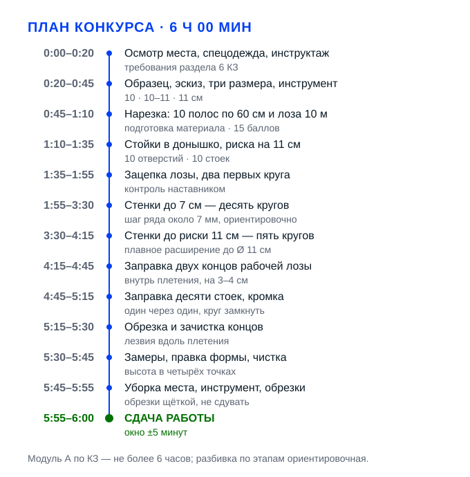
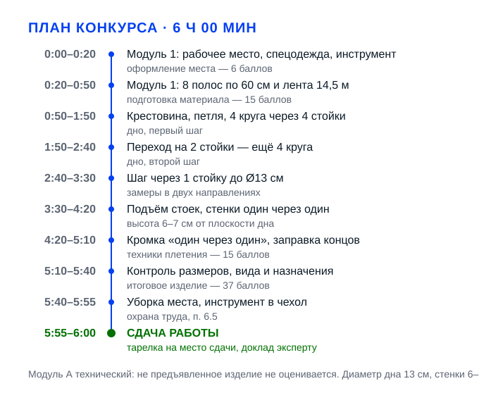
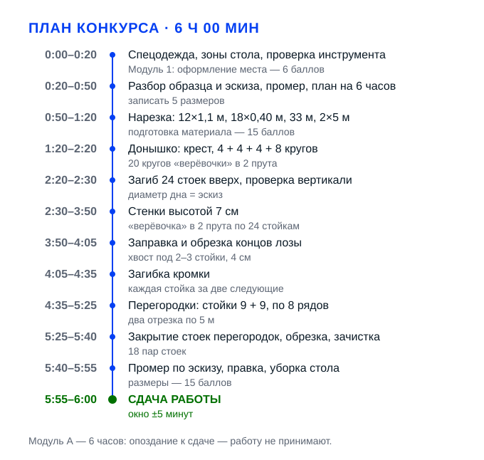

Изготовление изделий из ротанга (Р)
Задания ниже — официальные файлы «Абилимпикс» (источник: abilympics-russia.ru), разложенные по категориям. Решения написаны по тексту задания, регламенту и критериям оценки; в них указано, что именно проверяет эксперт.
Школьник
14–16 лет, базовый уровень заданияВыдержка из официального конкурсного задания: страницы, относящиеся к категории «Школьник» (стр. 4–8 источника).
Пошаговое решение
Конкурсное задание категории «Школьники» — сплести стакан под канцелярию малой формы на фанерном донышке из искусственного ротанга. Требования к изделию жёсткие: донышко диаметром 10 см, стенки высотой 10–11 см, диаметр верха 11 см, и всё это по трём обязательным техникам — плетение в один прут, сложенный пополам, послойное плетение и плетение стенок один через один. На работу даётся не более 6 часов, и больше двух из них уходит на стенки: рабочая лоза — одна полоса длиной 10 метров, сложенная пополам, её хватает примерно на пятнадцать кругов при высоте 10,5 см, а запаса почти нет. Оценка складывается из трёх модулей: подготовка к работе (21 балл), плетение стакана (42 балла) и итоговая работа (37 баллов), всего 100. Ниже задание разложено на пять задач и сорок восемь шагов — от организации рабочего места и нарезки ротанга до финального замера и сдачи изделия.

Задача 1. Развернуть рабочее место и подготовить ротангМодуль 1 · 21 балл (оформление места 6 · подготовка материала 15)
Первый модуль даёт 21 балл из ста, и весь он набирается до того, как вы сплетёте первый круг: шесть баллов за оформление рабочего места и пятнадцать за подготовленный материал. Здесь важно понять логику оценки: эксперты смотрят не на красоту стола, а на то, умеете ли вы организовать работу так, чтобы дальше не отвлекаться. Разложенный по зонам инструмент, ровно нарезанные полосы одного сечения и размеченная рабочая лоза — это фундамент, на котором держатся остальные 79 баллов, потому что из криво нарезанного ротанга аккуратный стакан не получится ни при какой технике.
Действие 1.1. Организовать рабочее место
Шаг 1.1.1
Заходим на площадку заранее и ставим свой стол размером 1000 на 500 мм и высотой 750 мм так, чтобы длинная сторона была развёрнута к свету, а не поперёк окна: тогда тень от рук падает в сторону, а не на плетение. Стул подвигаем так, чтобы колени уходили под столешницу свободно, а предплечья лежали на столе почти горизонтально и кисти работали на уровне груди. Фанерную столешницу протираем влажной, а потом сухой тряпкой, потому что пыль от шлифовки садится на ротанг и потом проявляется на светлом изделии серыми разводами.
Оформление рабочего места — отдельный критерий на 6 баллов, и его выставляют по тому, что эксперт видит при обходе в первые минуты. Правильная высота и свет нужны не для оценки, а для рук: при работе на весу кисть быстро устаёт, натяжение лозы становится неровным, и к третьему часу пояс плетения начинает «гулять» по высоте. Стол, развёрнутый к свету, экономит зрение: на ротанге одного цвета сближенные ряды читаются только при боковом освещении.
Сядьте и проверьте три вещи: локти на столе без наклона корпуса, стопы полностью на полу, между глазами и донышком примерно 40 см. Столешница не качается — подложите сложенную бумагу под ножку, а не работайте на «плавающем» столе. Тень от правой руки не должна накрывать зону плетения.
Типичная ошибка — поставить стол вплотную к соседу и разложить инструмент на чужую половину: по схеме застройки расстояние между столами не меньше метра, и это фиксируется как неверная организация места. Вторая — сесть на слишком высокий стул: кисти оказываются выше уровня груди, плечи к середине модуля деревенеют, и натяжение лозы падает.
Эксперт обходит площадку в первые пять минут и оценивает место целиком: чистоту столешницы, свободные зоны, отсутствие вещей на полу. Дальше он возвращается к этому критерию ещё раз перед сдачей.
Шаг 1.1.2
Разбиваем столешницу на три зоны и держим их до конца конкурса: слева от донышка лежит подготовленный материал — десять полос по 60 см и смотанная в кольцо полоса 10 м, справа — инструмент, ближе к себе — лоток для обрезков. Бокорезы кладём справа на расстоянии вытянутой кисти, рулетку и лопатку для плетения — рядом с ними, но не в одной куче, чтобы не искать на ощупь. Обрезки не оставляем на столе: ротанг скользкий, и мелкий срез под ладонью незаметно уезжает под донышко, а потом мешает ставить изделие ровно.
Зоны нужны потому, что плетение идёт непрерывно: пока крутится рабочая лоза, рука не должна тянуться через всё изделие за бокорезами. Это входит в те же 6 баллов за оформление места, но реальная цена выше — каждое лишнее движение сбивает натяжение, и на изделии появляется то «тугой», то «свободный» участок пояса. Отдельный лоток под обрезки экономит время на финише, когда уборка идёт уже в зачётных минутах.
Проверьте: ничего не лежит на краю стола и на полу, инструмент не перекрывает донышко, все три зоны читаются без перекладывания. Рука, не вставая со стула, дотягивается до бокорезов и до полос — если приходится тянуться корпусом, переставьте инструмент ближе.
Частая ошибка — держать инструмент в общей куче перед собой: лезвия цепляют лозу, а рулетка уезжает под изделие. Вторая — складывать обрезки в карман или на колени: по правилам охраны труда стружку и обрезки нельзя смахивать руками и сдувать, их сметают щёткой в отведённое место.
Эксперт смотрит на зоны в начале работы и отмечает, сохраняются ли они к середине конкурса: развал на столе к третьему часу тоже считается нарушением организации.
Шаг 1.1.3
Оцениваем свет и при необходимости добавляем свой: при общем освещении площадки норма для рабочего места — не менее 300 люкс, а для тонкой работы с одноцветным материалом этого мало, поэтому берём настольную лампу и ставим её слева и чуть спереди, чтобы свет ложился на плетение под углом примерно 45 градусов. Лампа не должна светить в глаза и давать блик на лозе: при отражении от глянцевой поверхности ряда сливаются. Если лампа с зажимом, крепим её на дальний край стола.
Свет — часть тех же 6 баллов за оформление места, но главное здесь другое: на ротанге одного цвета ошибку в рисунке «один через один» глаз замечает только при косом свете, который даёт тень под каждой полосой. Плоское верхнее освещение скрывает перехлёст, и участник узнаёт о сбитом рисунке на разборе, когда уже поздно. Правильный свет позволяет самому контролировать плотность пояса.
Проверьте на пробной полоске: положите её поперёк стола и посмотрите, видна ли тень под ней. Если тени нет и поверхность выглядит плоской, сместите лампу ниже и в сторону. Ваши руки не отбрасывают тень на донышко — это главный признак правильной установки.
Ошибка — поставить лампу прямо над изделием: блик на глянце слепит, и глаза устают уже через час. Вторая — работать в полутьме, рассчитывая на общее освещение площадки: тонкие различия в натяжении при таком свете не видны, и пояс получается с пропусками.
Эксперт отмечает наличие и правильное положение светильника при первом обходе; для участников с нарушением зрения требование по освещению — не менее 300 люкс на рабочем месте.
Действие 1.2. Проверить инструмент и снять риски
Шаг 1.2.1
Берём бокорезы и осматриваем их до работы: сжимаем ручки несколько раз и слушаем пружину, смотрим на режущие кромки на свет — на них не должно быть сколов и заминов, а половинки должны сходиться без зазора. Проверяем люфт в шарнире: если лезвия ходят вбок, срез получится рваным, с «бородой» из расслоившихся волокон. Ступеньку под самый кончик полосы делаем пробным срезом на обрезке длиной 10 см.
Подготовка материала на 15 баллов начинается с качества среза, и это не формальность: рваный край искусственного ротанга расслаивается, при заправке конца в плетение волокна выбиваются наружу, и на светлом изделии это видно как седые мохнатые пятна. Неисправный инструмент — ещё и прямая опасность: по разделу охраны труда травмирование рук неисправным инструментом отнесено к опасным факторам.
Пробный срез должен быть чистым, без белых волокон по краю, и не требовать доработки. Пружина возвращает ручки полностью, шарнир не качается, лезвия сходятся по всей длине. Если инструмент не проходит проверку — сразу зовём эксперта, а не работаем «как есть».
Работать бокорезами с замином на кромке: каждый срез даёт рваный край, и к концу плетения верхний ряд выглядит обкусанным. Вторая ошибка — резать не у основания лезвий, а кончиками: полоса выдавливается из зева, срез идёт наискось, и полосы получаются разной ширины.
Эксперт проверяет инструмент при первом обходе и отдельно смотрит качество срезов на заготовках: по ним видно, работал ли участник исправным инструментом.
Шаг 1.2.2
Проверяем остальное оснащение по короткому списку: рулетка должна возвращать ленту и держать ноль, лопатка для плетения — быть гладкой, без заусенцев и без трещин по краю, донышко из фанеры — без сколов и расслоений по кромке. Заусенец на лопатке снимаем мелкой наждачной бумагой, а не ножом, чтобы не оставить плоскую грань: лопатка должна входить между стойками, не расплющивая лозу. Отдельно проверяем, что донышко лежит на столе без качания.
Инструмент и приспособления участник привозит с собой: по перечню это бокорезы, рулетка и лопатка для плетения, то есть замена сломанного лопаткой из чужого набора не предусмотрена. Заусенец на лопатке — тихая ошибка: он не мешает плести, но каждый раз надрезает рабочую лозу у стойки, и лоза рвётся в самом неудобном месте, когда до конца модуля остаётся час.
Проведите подушечкой пальца по рабочей кромке лопатки — она должна быть гладкой на ощупь. Рулетка на 60 см от нуля должна совпадать с контрольным отрезком, поэтому приложите её к уже отмеренной полосе: расхождение больше 2 мм значит, что все полосы уйдут в размер с ошибкой.
Ошибка — начать плести лопаткой с трещиной: она ломается внутри плетения, и достать обломок, не распустив два ряда, уже невозможно. Вторая — не проверить донышко на качание: изделие плетётся с перекосом, и на финальном замере разница по высоте стенок выходит за допуск.
Эксперт смотрит на исправность приспособлений и на то, как участник реагирует на дефект: умение заменить или доработать инструмент до старта входит в профессиональные навыки.
Шаг 1.2.3
Проговариваем для себя правила безопасности, которые действуют весь модуль: лезвие бокорезов направлено от себя и в сторону от соседа, инструмент не лежит на краю стола, передавать его можно только ручкой вперёд, обрезки сметаем щёткой в лоток, а не смахиваем рукой и не сдуваем. Ножницы и бокорезы после работы возвращаются на своё место, а не бросаются в общий ящик. Запоминаем, где находится огнетушитель и как выходить с площадки.
Охрана труда — не отдельный критерий с баллами, а условие допуска к работе: участник, нарушивший правила, может быть остановлен прямо в процессе, и тогда время модуля уходит без плетения. Кроме того, порядок на столе и убранные лезвия — часть тех же 6 баллов за оформление места: эксперт видит, насколько участник владеет культурой рабочего места, а не только техникой плетения.
Инструмент лежит режущей частью от вас и не выступает за край стола, лоток для обрезков стоит на месте и не переполнен, проход между столами свободен. Если пришлось наклониться за упавшей полосой — сначала отложите бокорезы.
Самое частое нарушение — оставить бокорезы открытыми на краю стола: полоса цепляется за рычаг, инструмент падает, и острие уходит вниз, к ногам. Второе — сдувать обрезки: мелкий срез разлетается по чужому рабочему месту, и это фиксируется как нарушение требований охраны труда.
Эксперт по охране труда проходит площадку в начале и середине конкурса; замечание фиксируется в протоколе и влияет на общую оценку профессиональных навыков.
Действие 1.3. Нарезать ротанг под изделие
Шаг 1.3.1
Принимаем ротанг и первым делом проверяем партию: полосы должны быть одного сечения и одного оттенка, без заломов, белых потёртостей и следов хранения в смятом виде. По перечню материалов искусственный ротанг идёт килограммами, и участник привозит с собой 0,5 кг, а остальное выдаётся на площадке в равном для всех количестве — поэтому пересчитываем и сверяем на месте, а не после старта. Полосы с заломом откладываем отдельно: из них пойдут только стойки, которым всё равно сгибаться.
Подготовка материала — это 15 баллов, самая весомая часть первого модуля, и проверяют её именно по однородности заготовок. Разные по ширине полосы дают разную толщину пояса: там, где попалась узкая, ряд выглядит провалившимся, и геометрия стенки уже не спасает. Равное количество материала у всех означает и другое: запасной лозы не будет, поэтому брак в нарезке — это не «переделаю», а «доплету, чем есть».
Разложите три-четыре полосы рядом и посмотрите на просвет: ширина должна совпадать на глаз, толщина — на ощупь. Залом определяется по белому следу поперёк полосы. Если партия неоднородна, отберите годные в одну сторону, а сомнительные — в другую, и сразу решите, что из них пойдёт на стойки.
Ошибка — начать нарезку, не разобрав партию: узкая полоса попадает в стенку, и в поясе появляется провал, который нельзя исправить, не распустив участок. Вторая — выбросить полосы с заломом: материала ровно столько, сколько выдано, и каждая выброшенная полоса — это недоплетённый сантиметр высоты.
Эксперт осматривает заготовки на столе при первом обходе и оценивает однородность: одинаковое ли сечение, ровно ли разложены, отделён ли брак. Отдельно он смотрит, разложены ли полосы по длине в один ряд: по этому видно, готовился ли участник к нарезке.
Шаг 1.3.2
Отмеряем десять полос по 60 см: рулетку прикладываем нулём к торцу полосы, ленту натягиваем вдоль, а не поперёк, и ставим метку карандашом по кромке коротким штрихом под углом, чтобы он не потерялся. Отмерили — сразу отрезаем и кладём в левую зону, а не откладываем десять меток и не режем потом подряд: при пакетной нарезке полосы сдвигаются, и половина выходит короче. Шестьдесят сантиметров на стойку — это вдвое больше нужной высоты, запас уходит на заправку и на сгиб.
Число полос не случайно: в донышке десять отверстий, и по технологии на каждое идёт одна стойка, сложенная пополам. Нарезать «на глаз» нельзя, потому что стойки должны быть одной длины: если одна короче на два сантиметра, она не дотянется до верхнего края, и заправлять будет нечего. Ровная длина стоек — это ровный верх изделия, а верх входит в критерий размеров на 15 баллов.
Разложите все десять полос в ряд и приложите рулетку по торцам: разброс длин не должен превышать 5 мм. Концы обрезаны ровно, под прямым углом, без косого среза. Пересчитайте полосы вслух — десять, и ни одной лишней метки на столе.
Ошибка — отмерять все десять по первой полосе, не проверяя её длину: ошибка в 2 см тиражируется десять раз, и стойки выходят короче расчётных. Вторая — резать по метке, не придерживая полосу: она проворачивается, срез идёт по спирали, и кончик потом не входит в отверстие донышка.
Эксперт проверяет нарезку выборочно: берёт три-четыре полосы и прикладывает рулетку. Разброс в длине виден и без замера — по тому, как полосы лежат в ряду.
Шаг 1.3.3
Отмеряем рабочую лозу — одну полосу длиной 10 метров. Мерить её на столе в один приём неудобно и неточно, поэтому откладываем по три метра: три полных отрезка по 3 м плюс один в 1 м, каждый раз перенося ноль рулетки точно к метке предыдущего. Полосу при этом держим прямой, без петель и перекрутов: перекрут съедает десятки сантиметров и даёт узел, который потом не распутать. Отмерив, сматываем в свободное кольцо диаметром 25–30 см и закрепляем бумажной лентой.
Десять метров, сложенные пополам, дают пять метров рабочей длины — расчёт именно под этот стакан, и он вплотную: при высоте стенки 10,5 см и шаге ряда около 7 мм нужно примерно пятнадцать кругов, а круг по верхнему диаметру составляет около 33 см. Пять метров минус расход на заправку концов — это и есть весь запас, поэтому ошибка в натяжении на 15–20 процентов означает, что лоза кончится на девятом сантиметре высоты.
Проверьте метки: их должно быть три по 3 м и одна на 1 м, суммарно 10 м. Кольцо не имеет узлов и перекрутов — проведите по нему рукой, полоса должна идти ровной лентой. Торцы отмечены с одной стороны, чтобы не путать начало.
Ошибка — отмерить 10 метров «шагами по полу»: погрешность в метр-полтора вылезает именно на последних кругах, когда лоза обрывается за два сантиметра до верха. Вторая — смотать лозу в тугой жгут: на сгибах остаются заломы, и в плетении они дают белые полосы.
Эксперт смотрит на длину рабочей лозы и способ её хранения: кольцо с метками и без узлов читается как понимание расчёта, жгут в руке — как отсутствие подготовки.
Шаг 1.3.4
Режем все заготовки бокорезами, держа полосу у самого основания лезвий и направляя режущую часть от себя: короткий уверенный сжим вместо нескольких подкусываний по одному месту. Срез делаем строго поперёк, а если кончик всё же получился косым, поправляем его тем же инструментом одним движением. После нарезки проходим по каждому торцу пальцем: выступающие волокна подрезаем и приглаживаем, чтобы конец входил в плетение гладко, как игла.
Качество торца — самая заметная часть подготовки материала из этих 15 баллов, потому что все концы остаются на виду: четыре конца рабочей лозы и десять концов стоек торчат до финальной заправки. Расслоившийся торец потом не спрячется ни под плетением, ни под обрезкой: волокна выбиваются и на готовом изделии выглядят как заусенцы. Ровный торец нужен и технически — косой конец не проходит между стойками и рвёт соседний ряд.
Возьмите три случайных полосы и посмотрите на срез вблизи: край ровный, без белой бахромы, плоскость среза перпендикулярна оси полосы. Концы всех десяти стоек лежат в одной линии, если полосы выровнять по торцу. Обрезков на столе нет — они в лотке.
Частая ошибка — подкусывать полосу по три-четыре раза: каждый надкус даёт свой скол, край получается ступенчатым. Вторая — отрезать, придерживая полосу на весу: она пружинит, лезвия сминают её, и торец расплющивается в лопатку, которая не входит в отверстие донышка.
Эксперт проверяет торцы перед началом плетения — это самая быстрая проверка качества подготовки: по срезам сразу видно, насколько участник владеет инструментом.
Задача 2. Собрать каркас: донышко, стойки и первый кругМодуль 2 · соблюдение размеров и техники плетения
Каркас решает судьбу изделия: донышко задаёт диаметр 10 см, стойки задают высоту стенки 10–11 см, а первый круг задаёт натяжение всего полотна. На этом этапе ещё ничего не видно снаружи, но именно здесь закладываются 15 баллов за соблюдение размеров и половина 15 баллов за техники плетения. Работа идёт медленно и внимательно: сначала разбираем образец и эскиз, потом ставим стойки, и только после этого зацепляем рабочую лозу — потому что исправить криво поставленную стойку под уже начатым плетением почти невозможно.
Действие 2.1. Разобрать образец, эскиз и донышко
Шаг 2.1.1
Образец стакана и эскиз с размерами выдают в день конкурса, поэтому первые десять минут работаем не руками, а глазами: ставим образец на стол, рядом кладём эскиз и выписываем на листок три числа — диаметр донышка 10 см, высота стенки 10–11 см, диаметр верха 11 см. Смотрим на профиль: стенка почти вертикальная, к верху расширяется на один сантиметр по диаметру, край ровный, без наклона. Отдельно считаем стойки на образце и число отверстий в донышке: их должно быть десять.
Образец и эскиз — единственный законный источник размеров: в конкурсном задании числа даны, но допуски оценивают именно по образцу, и разница между «плести на глаз» и «плести по трём числам» стоит 15 баллов за соблюдение размеров. Понимание профиля нужно заранее: если вести стенку строго вертикально, верхний диаметр останется 10 см и разойдётся с образцом на целый сантиметр.
Записанные числа должны совпадать с эскизом до миллиметра, а на вашем листке должно быть видно, где какое измерение: донышко, высота, верх. Приложите рулетку к образцу и проверьте сами: 10 см по дну, 10–11 см по высоте, 11 см по верху. Если ваши замеры расходятся с эскизом, спросите эксперта до начала работы.
Ошибка — рассматривать образец «в целом» и запомнить только высоту: диаметр верха забывается первым, а он отличается от диаметра дна всего на сантиметр, то есть на глаз незаметно. Вторая — не считать стойки: при десяти отверстиях и девяти стойках в поясе появится пустой промежуток, который не исправить.
Эксперт подходит в начале модуля и слушает, как участник формулирует задачу: если он называет три размера и число стоек, видно, что задание прочитано.
Шаг 2.1.2
Берём фанерное донышко и проверяем его до установки стоек: диаметр 10 см, десять отверстий по окружности на равном расстоянии от края, кромка без сколов и расслоений, поверхность без заусенцев вокруг отверстий. Заусенец снимаем мелкой наждачной бумагой, а не ножом, чтобы не увести кромку. Если отверстия просверлены с бахромой, аккуратно снимаем её надфилем: волокна фанеры цепляют ротанг и не дают подтянуть стойку до нужной длины.
Донышко — это готовая деталь, и её дефекты нельзя исправить плетением: скол на кромке останется виден на готовом изделии и попадёт в критерий внешнего вида на 16 баллов. Бахрома в отверстиях работает как ёрш: стойка входит туго, при подтяжке рвётся у сгиба, и половина полосы уходит в отход, а материала ровно столько, сколько выдано.
Проведите пальцем по всей кромке — она должна быть гладкой и не цеплять кожу. Все десять отверстий продуваются, стойка входит в любое из них с небольшим усилием, но без заклинивания. Донышко лежит на столе без качания: приложите линейку ребром и посмотрите на просвет.
Ошибка — начать работу на донышке со сколом, рассчитывая, что край закроется плетением: первый ряд идёт выше кромки, и скол остаётся на виду. Вторая — расширять отверстие бокорезами: фанера расслаивается, и стойка потом проваливается вниз под нагрузкой.
Эксперт осматривает донышко вместе с заготовками при первом обходе; подготовленное донышко без заусенцев читается как понимание технологии. Если донышко со сколом осталось в работе, он отмечает это как нарушение подготовки материала.
Шаг 2.1.3
Ставим донышко на шаблон: если на площадке выдан шаблон-оправа, надеваем донышко на его основание так, чтобы отверстия совпали с пазами, и фиксируем снизу. Если шаблона нет, крепим донышко к столу куском двустороннего скотча или зажимом за край, но так, чтобы крепление не мешало ходу лозы снизу. Проверяем рукой: изделие не должно проворачиваться при боковом усилии примерно в килограмм — именно с таким усилием идёт натяжение при плетении.
Стакан плетётся с использованием шаблона — это прямо записано в конкурсном задании, и шаблон нужен не для отчётности, а для формы: он держит диаметр и не даёт стенке «сесть» внутрь, пока вы тянете лозу. Незакреплённое донышко проворачивается под рукой, каждый круг начинается со сдвига, и вертикальные стойки уходят в сторону — а вертикальность стоек и есть то, что оценивают как профессиональный навык.
Толкните донышко ладонью вбок — оно не должно сдвинуться. Отверстия расположены симметрично, шаблон не перекрывает доступ к отверстиям снизу, лоток для обрезков и инструмент остались на своих местах после установки. Проверьте, что скотч не выступает за кромку: к нему будет липнуть ротанг.
Ошибка — плести на свободно лежащем донышке: к третьему кругу оно смещается на ладонь, и вся работа уезжает к краю стола. Вторая — приклеить донышко так, что под ним остаётся слой скотча, выступающий наружу: лоза цепляется за него и расслаивается.
Эксперт отмечает, работает ли участник с шаблоном, и насколько устойчиво стоит изделие в процессе: это входит в оценку профессиональных навыков на 12 баллов.
Действие 2.2. Поставить стойки в донышко
Шаг 2.2.1
Берём десять нарезанных полос по 60 см и каждую сгибаем пополам: находим середину приложением концов друг к другу, а не на глаз, зажимаем место сгиба между большим и указательным пальцами и ведём вторую руку по полосе, задавая плавную дугу радиусом 2–3 см. Сгиб не заламываем: перегиб через острый край стола или через ноготь оставляет белый след, и в этом месте полоса ломается через несколько кругов. Сложенные полосы раскладываем веером слева, сгибами в одну сторону.
Сгиб — самое слабое место стойки: он держит всю нагрузку от натяжения лозы, и залом снижает прочность примерно вдвое. Стойки идут в изделие парами из одного сгиба, поэтому длина обоих концов после установки должна быть одинаковой — от этого зависит, хватит ли их на высоту 10–11 см и на заправку. Ровный сгиб задаёт и ровный нижний край: он виден снаружи, потому что сгибы образуют нижнюю кромку изделия.
Проверьте сгиб на просвет: должно быть видно плавную дугу без белой полосы поперёк. Оба конца сложенной полосы одинаковой длины, разброс не больше 5 мм. Разложите все десять пар и пересчитайте: десять сгибов, двадцать концов.
Ошибка — сгибать полосу резко, «чтобы вошла в отверстие»: залом даёт белую трещину, и стойка ломается у самого донышка, когда её подтягивают. Вторая — сложить полосу, не совместив концы: один конец окажется короче на пару сантиметров, и наверху его не хватит на заправку.
Эксперт смотрит на сгибы при установке: по белым заломам сразу видно, насколько аккуратно участник обращается с материалом. Проверяет он и то, не осталось ли на полосах белых заломов: они потом выходят наружу в самом видном поясе.
Шаг 2.2.2
Вставляем согнутую полосу в отверстие донышка петлёй вниз, а двумя концами вверх: петля уходит под донышко и остаётся снаружи как нижняя кромка, концы поднимаются над столом. Вставляем поочерёдно и сразу подтягиваем: берём оба конца в кулак и тянем вверх до упора петли в фанеру, но без рывка, чтобы не разбить отверстие. Идём по кругу через одно отверстие, а не подряд, — так стойки не путаются между пальцами и не выскакивают уже поставленные.
Петля под донышком — это конструкция изделия: она заменяет крепёж, держит стойку без клея и одновременно образует нижний край, который не даёт стакану царапать стол. Если петля не дотянута, стойка «висит» и под натяжением проваливается, а изделие теряет высоту — прямой минус в 15 баллах за размеры. Порядок «через одно отверстие» нужен потому, что соседние стойки мешают друг другу и наклоняются в сторону.
Все десять петель прижаты к фанере с нижней стороны, ни одна стойка не болтается: потяните каждую вверх на себя — она должна стоять жёстко. Отверстия не разбиты, бахромы нет. Со стороны дна видно десять ровных петель на равном расстоянии от края, донышко не повело.
Частая ошибка — вставить петлю вверх и загнуть концы вниз: конструкция переворачивается, и стенка плетётся от кромки вниз, а не вверх. Вторая — протолкнуть стойку так, что петля уходит внутрь донышка: подтягивать уже нечего, стойка короткая и на верхнем крае её не хватит.
Эксперт проверяет посадку стоек с нижней стороны, поднимая изделие: ровные прижатые петли — признак правильной сборки каркаса. Поднимая изделие, он смотрит на равномерность петель: смещение одной означает, что стойка встанет с наклоном.
Шаг 2.2.3
Выравниваем стойки: собираем все двадцать концов в пучок, ставим изделие на стол и отпускаем — стойки должны встать почти вертикально сами. Каждую поправляем рукой, задавая небольшой равномерный наклон наружу, потому что от донышка диаметром 10 см к верху диаметром 11 см стенка расходится: разница по окружности 3,1 см распределяется на десять промежутков, то есть примерно по 3 мм на каждый. Отмечаем на одной стойке карандашом риску на высоте 11 см от донышка и переносим её на остальные, прикладывая линейку по кругу.
Наклон стоек наружу — это и есть расширение изделия с 10 до 11 см в диаметре; если поставить их строго вертикально, верхний диаметр останется прежним и разойдётся с эскизом. Риска на 11 см нужна как ориентир конца плетения: без неё высоту стенки определяют на глаз, и она выходит то 9, то 12 см при допуске 10–11. Промежутки между стойками должны быть равными, иначе пояс пойдёт волной и рисунок «один через один» собьётся.
Расстояние между соседними стойками по верху примерно 3,4 см, по низу 3,1 см, и разброс между промежутками не больше 3 мм. Все двадцать концов поднимаются выше риски не меньше чем на 4 см. Посмотрите на изделие сверху: отверстия образуют правильную окружность, стойки стоят как спицы.
Ошибка — выровнять стойки по одной, глядя только на соседнюю: накопленная ошибка даёт перекос в четверть оборота, и одна сторона стенки выходит ниже другой. Вторая — забыть про наклон наружу: верхний диаметр не добирает сантиметр, и изделие выглядит цилиндром вместо стакана.
Эксперт смотрит на каркас сверху и сбоку до начала плетения: равные промежутки и единый наклон — это то, что он потом проверит рулеткой на готовом изделии.
Действие 2.3. Зацепить рабочую лозу и заплести первый круг
Шаг 2.3.1
Разворачиваем смотанную полосу 10 м и складываем пополам, снова совместив концы: на одном конце образуется петля, дальше идут два конца по 5 м, которые работают как одна лента. Следим, чтобы полоса при складывании не перекрутилась: проведите пальцами от петли до концов и убедитесь, что оба конца лежат плоско, глянцевой стороной в одну сторону. Сложенную лозу не сматываем в жгут, а держим свободными кольцами в левой руке или на столе слева.
Плетение в один прут, сложенный пополам, — одна из обязательных техник конкурсного задания, и перекрут ломает её сразу: вместо ровного пояса получается жгут, который на образце не выглядит ничем похожим. Перекрут ещё и крадёт длину: каждый оборот съедает 15–20 см, а у вас в запасе всего 5 метров рабочей длины при расчётной потребности около 5 метров. Свободные кольца нужны потому, что тугой жгут даёт заломы.
Оба конца одинаковой длины с точностью до 10 см, петля ровная, без узла. Проведите ногтем по ленте от петли к концу — перекрута нет, если ноготь идёт по одной плоскости. Кольца не запутались и не тянут: при подъёме петли на 20 см лоза идёт свободно.
Ошибка — сложить лозу, не проверив концы: один окажется на полметра короче, и его не хватит на заправку в конце. Вторая — смотать сложенную лозу жгутом «чтобы не мешала»: к середине плетения на ней появляются заломы, и они выходят наружу белыми полосами в самом видном поясе.
Эксперт смотрит на подготовку рабочей лозы перед первым кругом: петля, равные концы и свободные кольца — признаки уверенного владения техникой. Ему важно увидеть, что участник понимает разницу между сложенной лозой и двумя отдельными полосами.
Шаг 2.3.2
Зацепляем петлю за стойку у самого донышка: надеваем её на стойку снизу, подтягиваем к фанере и прижимаем большим пальцем левой руки, а правой расправляем оба конца в разные стороны — один уходит под первую стойку, второй ложится поверх неё. Так петля фиксируется без узла: она работает как замок, который затягивается первым же кругом. Выбираем для зацепа стойку слева от себя, чтобы дальнейшее движение шло по часовой стрелке и лоза не встречалась с уже сплетённым участком.
Петля — единственное место, где рабочая лоза крепится к каркасу, и от неё зависит натяжение всего полотна: слабая петля расползается через два круга, а перетянутая тянет первую стойку внутрь, и изделие получает вмятину у самого дна. Направление по часовой стрелке выбрано не случайно: при нём правая рука ведёт лозу от себя, а левая придерживает стойки, и ритм получается ровным.
Петля сидит на стойке плотно, не сползает вниз при подтяжке, оба конца выходят из неё в противоположные стороны. Потяните за концы поочерёдно — петля подтягивается, но не развязывается. Стойка под петлёй стоит вертикально, не наклонена внутрь.
Ошибка — завязать на стойке узел: он останется внутри плетения жёстким бугром, и первый ряд пойдёт волной. Вторая — зацепить петлю высоко, на 3–4 см от донышка: нижний ряд оказывается приподнят, между дном и плетением появляется щель, и это видно на готовом изделии.
Эксперт смотрит на первый зацеп: именно здесь видно, знает ли участник технику «в один прут, сложенный пополам», а не импровизирует. Если вместо петли на стойке завязан узел, он сразу делает пометку: узел останется внутри плетения жёстким бугром.
Шаг 2.3.3
Ведём первый круг «один через один»: каждый из двух концов поочерёдно проходит над стойкой и уходит под следующую, при этом концы идут навстречу друг другу с двух сторон и встречаются на противоположной стороне. Лозу прижимаем к донышку, а не держим на весу, и после каждой стойки подтягиваем оба конца одинаково: сначала правый, потом левый, до ощущения упругого сопротивления. Первый круг должен лечь вплотную к фанере, без зазора, и обойти все десять стоек, вернувшись к петле.
Техника стенок «один через один» — обязательная по заданию, и первый круг задаёт её ритм на всё изделие: если сразу пойти через две стойки, получится другой рисунок, и 15 баллов за техники плетения будут снижены, даже если изделие аккуратное. Плотное прилегание к донышку важно и конструктивно: щель у дна — это и дефект внешнего вида, и место, где стенка начинает играть под нагрузкой.
Пояс лежит ровно, без «ступеньки» на стыке, все десять стоек охвачены, рисунок читается как шахматка: над стойкой одна полоса, под ней другая. Просвета между плетением и фанерой нет — проверьте, проведя ногтем по стыку. Концы выходят с противоположных сторон на одном уровне.
Самая частая ошибка — вести первый круг свободно, «потом подтяну»: подтянуть уже не получится, лоза зажмётся между стойками, и у дна останется щель. Вторая — сбить ритм на первой же стойке после петли: рисунок пойдёт вперехлёст, и исправлять придётся, распустив весь круг.
Эксперт подходит именно к первому кругу: по нему он оценивает владение техникой и делает первую отметку по критерию техник плетения на 15 баллов. Первый круг он смотрит на просвет, поворачивая изделие: просветы у донышка означают, что ряд лёг свободно.
Шаг 2.3.4
После первого круга останавливаемся и делаем ревизию: подтягиваем все десять стоек по очереди, проверяя, что каждая стоит вертикально и что расстояние между соседними одинаковое. Затем проходим второй круг, прижимая его к первому без зазора и без нахлёста, и только после этого переходим к рабочему темпу. Если на первом круге обнаружился перехлёст, распускаем его до ошибки и переплетаем заново — на двух кругах это две минуты, на десяти это полчаса.
Ревизия после первого круга — единственный момент, когда ошибку можно исправить дешёво: дальше стойки зажаты плетением, и выровнять их уже нельзя без роспуска. Ровные промежутки на десяти стойках дают ровный шаг ряда по всей высоте, а это и есть та геометрия, которую эксперт измеряет рулеткой на готовом изделии за 15 баллов.
Все десять промежутков между стойками равны с точностью до 2–3 мм, стойки вертикальны, второй круг лежит вплотную к первому. Изделие стоит на столе ровно, донышко не качается. Посмотрите на изделие сверху: два круга образуют правильное кольцо без утолщений.
Ошибка — гнать темп с первых минут и не делать ревизию: через час обнаруживается, что две стойки стоят с наклоном, и весь пояс приходится распускать. Вторая — подтягивать только рабочую лозу, забывая про стойки: они постепенно заваливаются внутрь, и стенка сужается к верху.
Эксперт возвращается к изделию после первых двух-трёх кругов и фиксирует состояние каркаса: ровные стойки на этом этапе означают, что размеры сойдутся к финалу.
Задача 3. Сплести стенки стаканаМодуль 2 · размеры 15 · техники 15 · профнавыки 12
Основной модуль: пятнадцать кругов одной лентой, сложенной пополам, от донышка до риски на 11 см. Здесь решается всё сразу — и соблюдение размеров на 15 баллов, и техники плетения на 15 баллов, и профессиональные навыки на 12. Работа однообразная, и главная опасность не в сложности движений, а в потере ритма: стоит два-три круга провести свободнее обычного, и полотно поведёт, а лоза кончится раньше, чем вы дойдёте до верха. Поэтому стенку ведут не «пока не кончится», а по контрольным точкам высоты: 3,5 см, 7 см и 10,5 см.
Действие 3.1. Войти в рабочий ритм
Шаг 3.1.1
Садимся ровно, изделие ставим перед собой так, чтобы рабочая зона была на расстоянии 25–30 см от корпуса, и поворачиваем его левой рукой по мере движения лозы, а не тянемся правой через всё изделие. Правой рукой ведём конец над стойкой и заводим под следующую на глубину 2–3 см, левой придерживаем стойку и одновременно подтягиваем второй конец с обратной стороны. Один цикл — две стойки, звук ровный, без скрипа: лоза входит под стойку с лёгким натягом, а не проталкивается силой.
Ритм и посадка корпуса напрямую влияют на плотность: при работе «на весу» кисть устаёт за сорок минут, и натяжение начинает падать незаметно для самого участника. Плетение в один прут, сложенный пополам, требует, чтобы оба конца шли с одинаковым натягом — если тянуть только правый, пояс перекашивается и стойки наклоняются в одну сторону.
Через два круга проверьте: пояс ровный по всей окружности, стойки стоят вертикально, расстояние между ними одинаковое. Полоса входит под стойку без белого следа — след означает, что вы тянете под острым углом и режете лозу о край стойки. Кисти не устали, плечи опущены.
Ошибка — тянуть лозу к себе, а не вести вдоль касательной: полоса трётся о стойку и расслаивается, в поясе появляются белые потёртости. Вторая — работать, не поворачивая изделие: правая рука тянется через центр, и натяжение на дальней стороне выходит слабее.
Эксперт смотрит на посадку и на ход рук в первые минуты плетения: по ритму видно, работал ли участник с ротангом раньше. Он отмечает и то, поворачивает ли участник изделие или тянется через центр: второе быстро сбивает натяжение.
Шаг 3.1.2
Проверяем натяжение на пробном участке из пяти кругов и запоминаем усилие как эталон: полоса должна ложиться так, чтобы её можно было сдвинуть пальцем вдоль стойки с усилием, но она не должна провисать между стойками. Правильный признак — между двумя соседними стойками полоса лежит прямой линией, а не дугой. После пяти кругов измеряем высоту: при шаге ряда около 7 мм это примерно 3,5 см от донышка.
Натяжение — главный параметр всей стенки, потому что от него зависит и расход лозы, и геометрия. Свободное плетение даёт дугу между стойками, и расход растёт на 15–20 процентов: при пяти метрах рабочей длины это ровно тот запас, которого потом не хватит на верхний сантиметр. Перетянутое плетение сужает изделие и уводит диаметр верха с 11 см в меньшую сторону, а размеры — это 15 баллов.
Полоса лежит между стойками прямой, не провисает, но и не врезается в предыдущий ряд. Высота после пяти кругов — 3,5 см плюс-минус 3 мм. Изделие можно поставить на стол, и оно не «дышит»: стенка держит форму без поддержки рукой.
Ошибка — тянуть изо всех сил «чтобы крепче»: стойки сходятся к центру, диаметр уменьшается на 5–7 мм, и к верху изделие сужается вместо расширения. Вторая — оставить провис: полотно идёт волной, а на расходе лозы это сказывается уже к десятому кругу.
Эксперт проверяет натяжение пальцем на нескольких участках: прогиб полосы между стойками больше 2 мм он отмечает как неравномерное плетение. Замер он делает в двух-трёх местах по высоте, чтобы увидеть, не меняется ли натяжение к верху.
Шаг 3.1.3
Заводим счёт кругам, чтобы не потерять высоту: на листке пишем номер круга после каждого оборота, а на одной стойке ставим карандашные риски через каждые пять кругов — так высота контролируется без рулетки. Считать вслух не стоит: сбивает. Круг заканчивается там, где начался, поэтому отмечать лучше не «на глаз», а по той же стойке, с которой начали, иначе счёт разъедется на полкруга и вы потеряете сантиметр высоты.
Счёт и риски — это те 12 баллов за профессиональные навыки: эксперт видит, планирует ли участник работу или плетёт «пока не кончится». Практическая польза тоже прямая: на пятнадцати кругах сбиться на один-два очень легко, а разница в два круга — это 1,4 см высоты, то есть выход из допуска 10–11 см в обе стороны.
После каждого пятого круга на стойке появляется новая риска, и расстояние между ними одинаковое — около 3,5 см. Счёт на листке совпадает с числом рисок. Если риски идут с разным шагом, значит натяжение гуляет, и участок надо подтянуть.
Ошибка — держать счёт в голове: на монотонной работе память сбивается к восьмому кругу, и дальше высота идёт «на глазок». Вторая — ставить риски на разных стойках: при наклоне стенки они оказываются на разной высоте, и ориентир перестаёт работать.
Эксперт смотрит на листок со счётом и на риски: аккуратная разметка по высоте читается как профессиональный подход к работе. Листок со счётом кругов он может попросить показать: это единственный способ проверить, что высота велась по плану.
Действие 3.2. Вести стенку до высоты 7 сантиметров
Шаг 3.2.1
Работаем с длиной: по мере плетения свободные концы укорачиваются, и в какой-то момент тянуть их от кольца становится неудобно. Тогда перехватываем лозу ближе к изделию, оставляя свободный хвост 30–40 см, а остаток держим в левой руке кольцами и постепенно отпускаем. Следим за двумя вещами одновременно: концы должны укорачиваться равномерно, и на них не должно появляться заломов от перехвата.
Перехват — самая травматичная для лозы операция: если сжать полосу в кулаке и потянуть, на сгибе остаётся белая полоса, которая в плетении выйдет наружу. Равномерное укорачивание концов важно потому, что из пяти метров на стенку уходит около 4,8 метра, и остаток делится примерно пополам: если один конец израсходован быстрее, второй закончится раньше времени и заправлять будет нечего.
Свободные хвосты примерно равной длины, кольца не запутаны, заломов на полосе нет — проверьте на просвет. Полотно не изменило натяжение после перехвата: если пояс после перехвата пошёл свободнее, значит вы отпустили натяжение, и следующие два круга надо вести плотнее.
Ошибка — резко дёрнуть запутавшееся кольцо: на лозе остаётся узел, который приходится выводить наверх и прятать в заправку. Вторая — перехватывать ленту в другом месте каждый раз: полоса мнётся по всей длине, и белые потёртости распределяются по всему поясу.
Эксперт замечает, как участник обращается с длинной лозой: свободные кольца без узлов — признак опыта, жгут в руке — признак спешки. Белые потёртости на полосе он относит к небрежному обращению с материалом, а не к дефекту самого ротанга.
Шаг 3.2.2
Держим послойность: каждый новый круг ложится точно над предыдущим, полоса к полосе, без зазора и без нахлёста одного ряда на другой. После каждого круга проходим пальцем по всей окружности и проверяем стык: ноготь должен чувствовать ступеньку не больше толщины полосы. Если полоса заходит на предыдущую выше чем наполовину, значит ряд поднялся и высота «съедается» — такой участок подтягиваем вниз сразу, пока он не зафиксирован следующим кругом.
Послойное плетение — вторая обязательная техника задания, и её оценивают отдельно внутри 15 баллов за техники. Ровные слои дают не только вид: от них зависит жёсткость стенки, потому что нагрузку держит именно переплетение с соседними рядами. Нахлёст уменьшает число рабочих кругов по высоте: вместо пятнадцати рядов на 10,5 см их получается двенадцать, и каждый из них толще, а полотно выглядит рыхлым.
Стык между рядами ровный, ступенька не больше 1 мм, нахлёстов нет. Расстояние между рисками (пять кругов) одинаковое по всей высоте — около 3,5 см. Стенка держит форму: если отпустить изделие, верх не заваливается внутрь.
Ошибка — вести ряд «винтом», постепенно поднимаясь: к десятому кругу высота отстаёт на сантиметр, и до риски 11 см лозы уже не хватает. Вторая — не проверять стык после каждого круга: ошибку замечают через три ряда, и распускать приходится весь участок.
Эксперт оценивает ровность слоёв на просвет, поворачивая изделие: при боковом свете нахлёсты видны как тени под полосами. Нахлёст он ищет именно тенью: при верхнем свете полосы выглядят ровно, при боковом виден каждый заступ.
Шаг 3.2.3
Раз в два-три круга надеваем изделие на шаблон или проверяем форму руками: стенка должна садиться на оправу без нажима, а диаметр по внешней стороне на текущей высоте — плавно расти от 10 к 11 см. Если шаблона нет, контролируем рулеткой через каждые 2 см высоты: на 3,5 см диаметр около 10,2 см, на 7 см около 10,5 см. Завалившуюся внутрь стойку поправляем сразу, аккуратно отводя её пальцем между рядами.
Плетение стакана идёт с использованием шаблона — это записано в задании, и шаблон здесь работает как калибр: он не даёт стенке «сесть» под натяжением лозы. Промежуточные замеры нужны потому, что расхождение на 2 см высоты ещё исправляется наклоном стоек, а на 9 см уже нет: перекос зафиксирован плетением, и изделие выходит с разницей диаметра, которая видна на просвет с образцом.
Изделие садится на шаблон свободно, без люфта больше 2 мм. Диаметр на контрольных высотах совпадает с расчётным с точностью до 2 мм. Стойки равномерно распределены по окружности: расстояние между соседними не отличается больше чем на 3 мм.
Ошибка — проверять форму только в конце: к тому времени, когда видно сужение, исправить его можно лишь роспуском десяти кругов. Вторая — надевать изделие на шаблон силой: стойки выгибаются, и в этом месте остаётся волна.
Эксперт замеряет диаметр на промежуточных этапах и отмечает, пользовался ли участник шаблоном или вёл стенку произвольно. Промежуточный замер он делает без предупреждения и сравнивает результат с эскизом, а не с вашими числами.
Шаг 3.2.4
Дойдя примерно до десятого круга, останавливаемся и делаем полный контроль высоты: ставим изделие на ровную поверхность, кладём линейку вертикально снаружи в четырёх точках — напротив друг друга по двум осям — и записываем числа. На десяти кругах высота должна быть 7 см плюс-минус 3 мм, разброс между четырьмя замерами не больше 4 мм. Если разброс больше, значит натяжение было неравномерным, и оставшиеся круги ведём плотнее на «низкой» стороне.
Четыре замера вместо одного — потому что перекос стенки не виден глазом, но сразу виден по числам, а допуск на высоту всего один сантиметр: от 10 до 11 см на готовом изделии. Разброс между сторонами — это тот самый перекос, который потом проявится как наклон верхнего края, и он входит в 15 баллов за соблюдение размеров.
Четыре числа отличаются не больше чем на 4 мм, среднее — около 7 см. Верхний край на этом этапе ещё не сформирован, но линия плетения идёт параллельно донышку. Промежутки между стойками не изменились по сравнению с началом.
Ошибка — мерить высоту «по одной стороне и на глаз»: участник видит 7 см, а с противоположной стороны 6,4 см, и к финалу разница только вырастает. Вторая — мерить по внутренней стороне стенки: там плетение имеет толщину, и результат завышается на 2–3 мм.
Эксперт делает собственный замер в этой точке и сверяет его с вашими: готовность вести контроль самому оценивается в профессиональных навыках. Он сверяет свои четыре замера с вашими и отмечает, совпадает ли методика: замер по внутренней стенке он считает ошибкой.
Действие 3.3. Вывести верх на 11 сантиметров
Шаг 3.3.1
Последние пять кругов ведём с плавным расширением: каждый следующий круг кладём чуть свободнее предыдущего, отводя стойку наружу на 1–2 мм за круг, чтобы к риске 11 см диаметр дошёл до 11 см. Удобно делать это большим пальцем левой руки: он стоит между стойкой и стенкой и задаёт нужный наклон. Расширение должно быть равномерным по окружности — обходим изделие и проверяем, что все десять промежутков растут одинаково.
Расширение с 10 до 11 см по диаметру — это плюс 3,1 см по окружности, и оно должно быть распределено на все десять промежутков, то есть примерно по 3 мм. Если расширять только с одной стороны, изделие получится яйцевидным, а верхний диаметр будет измерен по наибольшей оси и разойдётся с образцом. Плавность важна и для расхода лозы: свободный ряд длиннее, и на последних кругах запас особенно мал.
Диаметр на высоте 9 см — около 10,8 см, на 10 см — около 11 см. Отклонение от круглости не больше 2 мм: измерьте по двум перпендикулярным осям, числа должны совпасть. Промежутки между стойками по верху равны между собой.
Ошибка — резко развести все стойки на последнем круге: между рядами появляются щели, и верх выглядит раструбом. Вторая — расширять только переднюю часть, которую видно: с обратной стороны стенка остаётся при диаметре 10 см, и изделие получается овальным.
Эксперт обходит изделие кругом и смотрит на симметрию: овальность видна сразу при взгляде сверху, и она снимает баллы и за размеры, и за внешний вид. Круглость он проверяет, глядя на изделие сверху и сравнивая две оси: разница больше 3 мм читается как овальность.
Шаг 3.3.2
Доводим последний круг точно до риски на 11 см и заканчиваем его там же, где начинали плетение, — у той стойки, где сидит петля. Последний круг особенно важен: он замыкает полотно, и его высота фиксирует общую высоту стенки. Если до риски не хватает одного ряда, а лозы осталось мало, не растягивайте плетение: лучше не довести 2 мм и остаться в допуске 10–11 см, чем распустить два ряда в поисках идеала.
Высота стенки по заданию 10–11 см, то есть допуск — целый сантиметр, и в него нужно попасть с учётом того, что после заправки край станет чуть толще. Риска помогает не переплести: лишний круг поднимает высоту до 11,7 см, и это выход из допуска. Замыкание круга на исходной стойке нужно для того, чтобы стык рядов оказался в одной вертикали и его можно было спрятать под заправку.
Высота от донышка до последнего ряда — от 10 до 11 см, измеренная в четырёх точках с разбросом не больше 4 мм. Последний круг лёг ровно, без ступеньки над предыдущим. Стык рядов идёт по одной стойке вертикально.
Ошибка — гнаться за высотой и доплести шестнадцатый круг: изделие выходит за 11 см, и это уже нарушение размеров. Вторая — закончить круг на произвольной стойке: стык оказывается на видном месте и торчит после заправки.
Эксперт замеряет высоту сразу после окончания плетения стенки, до заправки края: по этому замеру выставляется большая часть из 15 баллов за размеры. Он смотрит и на стык рядов: вертикальная линия стыка на одной стойке означает, что круг замкнут правильно.
Шаг 3.3.3
Перед заправкой делаем финальную примерку к образцу: ставим изделие рядом с образцом на один уровень, отходим на полшага и смотрим профиль в сравнении — наклон стенки, положение верхней линии, пропорции. Затем три замера рулеткой: диаметр донышка по внешней петле, высота, диаметр верха. Записываем числа на листок и сравниваем с эскизом: 10, 10–11 и 11 см.
Сравнение с образцом — это то, что делает эксперт, и лучше увидеть расхождение самому за час до сдачи, когда ещё можно что-то поправить, чем услышать о нём на разборе. Три числа — ровно те, по которым начисляют 15 баллов за соблюдение размеров, и они же служат доказательством для самого участника: если числа в допуске, спорить с оценкой будет не о чем.
Все три числа в допуске: донышко 10 см плюс-минус 2 мм, высота от 10 до 11 см, верх 11 см плюс-минус 3 мм. Изделие стоит на столе без качания, профиль совпадает с образцом при взгляде сбоку. Числа записаны, чтобы потом сравнить их с финальными.
Ошибка — не сверять изделие с образцом вообще, ограничившись рулеткой: числа могут сойтись, а профиль — нет, например при вертикальной стенке и правильно измеренном верхе. Вторая — откладывать сравнение на последние минуты, когда исправлять уже нечем.
Эксперт сравнивает изделие с образцом визуально и рулеткой; ваша собственная сверка на этом этапе экономит баллы, которые иначе теряются на финале. Своё сравнение с образцом он делает у окна, при дневном свете, и оно почти всегда строже, чем кажется участнику.
Задача 4. Заправить концы лозы и стойкиМодуль 2 · профнавыки 12 · Модуль 3 · внешний вид 16
Заправка — самый короткий и самый необратимый этап: обрезанный конец уже не вернуть, а торчащая стойка на готовом изделии стоит дороже, чем любой огрех плетения. Здесь закрываются те 12 баллов за профессиональные навыки, которые набираются как раз на аккуратности завершения, и закладывается внешний вид на 16 баллов из третьего модуля. Правило простое: сначала заправляем и подтягиваем, потом проверяем, и только в самом конце обрезаем — в обратном порядке работа почти всегда заканчивается торчащим концом, который нечем прикрыть.
Действие 4.1. Заправить концы рабочей лозы
Шаг 4.1.1
Берём первый конец рабочей лозы, оставшийся после замыкания последнего круга, и заправляем его внутрь: наискось заводим кончик под последний ряд плетения рядом со стойкой и протягиваем на 3–4 см вдоль ряда, следуя его направлению. Тянем не за самый кончик, а захватив полосу у среза, иначе острый край соскальзывает и рвёт соседнюю полосу. Пропустив 3–4 см, выводим кончик на внутреннюю сторону стенки, чтобы он оказался между слоями, а не снаружи.
Заправка на 3–4 см нужна для того, чтобы конец держался за счёт трения о два-три переплетения: короткая заправка в 1 см со временем выходит наружу и превращается в торчащий ус, который снимает баллы за внешний вид. Направление вдоль ряда, а не поперёк — потому что поперёк полоса рвёт соседнюю стойку и оставляет бугор на лицевой стороне, а внешний вид в третьем модуле стоит 16 баллов.
Снаружи заправленного конца не видно: проведите ладонью по стенке — поверхность ровная, без ступеньки. На внутренней стороне кончик выходит между слоями и не лежит на виду. Потяните конец назад: он держится с заметным усилием, а не выходит свободно.
Ошибка — заправить конец снаружи, «чтобы потом спрятать»: спрятать его уже некуда, он останется на лицевой стороне у самого верха. Вторая — тянуть за кончик: полоса рвётся, и заправлять приходится обрывок в полтора сантиметра.
Эксперт осматривает место заправки с обеих сторон и отмечает, видно ли стык на лицевой стороне. Он проводит пальцем по кольцу сверху вниз и проверяет, не поднялся ли участок стенки у заправки.
Шаг 4.1.2
Второй конец заправляем с противоположной стороны, чтобы усилие от двух концов работало в разные стороны и полотно не стягивалось: заводим его под ряд в другую сторону по кругу и протягиваем те же 3–4 см. Если второй конец короткий, оставляем его в заправке на 2 см и обязательно выводим внутрь через соседнюю стойку. Концы не должны оказаться в одном промежутке между стойками — там они образуют бугор, который видно на просвет.
Симметричная заправка двух концов — это равновесие натяжения: когда оба конца уходят в плетение в противоположных направлениях, последний круг остаётся ровным, а не стягивается к одному месту. Разные промежутки для двух концов нужны потому, что толщина полосы в 1 мм на небольшом изделии заметна: два конца в одном промежутке поднимают участок стенки на 2 мм и дают видимую выпуклость.
Оба конца спрятаны, между ними не меньше двух стоек. Последний круг не стянут: диаметр верха остался 11 см. На внутренней стороне видны два кончика в разных местах, на наружной — ни одного. Проверьте заодно и просвет: в месте заправки не должно появиться щели шире 1 мм, иначе ряд разошёлся.
Ошибка — заправить оба конца рядом: в этом месте стенка вспучивается, и верхний край идёт волной. Вторая — оставить второй конец висящим снаружи в расчёте, что его закроет загибка: загибка идёт по верху и такой конец не перекрывает.
Эксперт смотрит на верхний край по кругу: ровная линия без выпуклостей — признак правильной заправки обоих концов. Он также проверяет, не вышли ли концы наружу после подтяжки плетения: на ровной стенке это видно сразу.
Шаг 4.1.3
Проверяем натяжение заправки и только потом трогаем бокорезы: берём изделие двумя руками и слегка сжимаем с боков — концы не должны выйти. Если кончик вышел, заправляем его заново глубже, на 5 см, и слегка подтягиваем плетение пальцами. Обрезаем оставшиеся хвосты позже, вместе со стойками, чтобы не делать одну и ту же операцию дважды и не искать инструмент на столе.
Проверка на сжатие имитирует нагрузку, которую изделие испытывает в работе: стакан под канцелярию берут рукой, ставят и переставляют, и слабая заправка выходит наружу именно в этот момент — уже после сдачи. Смысл отложенной обрезки в том, что длинный хвост ещё позволяет подтянуть конец, а обрезанный под корень — уже нет.
После сжатия с боков и лёгкого поворота в руках ни один конец не показался снаружи. Плетение в месте заправки не разошлось: промежутки между рядами те же, что и по остальной окружности. Хвосты не мешают, но и не выпадают.
Ошибка — обрезать концы сразу после заправки, до проверки: если заправка слабая, исправлять уже нечего, потому что хвоста нет. Вторая — подтягивать плетение, дёргая за заправленный конец: он выходит, и приходится начинать заново.
Эксперт проверяет прочность заправки рукой, слегка сжимая изделие: это стандартный приём при оценке профессиональных навыков. Если после сжатия конец вышел, он предложит заправить его глубже, но балл будет снижен за недостаточную прочность.
Действие 4.2. Заправить стойки и закрыть верхний край
Шаг 4.2.1
Начинаем с первой стойки: сгибаем её через соседнюю стойку снаружи внутрь и заводим кончик под ближайший ряд плетения так, чтобы он ушёл между слоями на 2–3 см. Сгиб делаем плавно, двумя пальцами, без резкого перегиба через край — искусственный ротанг в этом месте ломается по белой полосе. Стойка должна лечь плотно к верху стенки, а не висеть над ним: верхний край — это последнее, что видит эксперт.
Заправка стоек закрывает верхний край и одновременно задаёт его толщину: десять заправленных стоек образуют ровный плотный валик, который держит форму и не даёт краю распускаться. Плавный сгиб нужен потому, что стойка испытывает наибольшую деформацию именно здесь, и залом в 2 см от края виден на готовом изделии как белая трещина — прямой минус из 16 баллов за внешний вид.
Стойка лежит вдоль верха, кончик ушёл внутрь на 2–3 см и не торчит снаружи. Верхний край в этом месте не поднялся выше соседних участков больше чем на 1 мм. Сгиб плавный, без белой полосы. Проверьте и торец: он не должен выступать за линию кромки больше чем на 1 мм.
Ошибка — загнуть стойку резко, через ноготь: белый залом остаётся на самом видном месте, у кромки. Вторая — заправить кончик на 1 см: он выходит наружу через несколько минут и торчит над краем, как усик.
Эксперт рассматривает верхний край вблизи и поворачивает изделие: именно кромка даёт первое впечатление о работе. Особенно внимательно он смотрит на место сгиба: белая полоса у самого края читается как залом материала.
Шаг 4.2.2
Идём по кругу в одном направлении и заправляем все десять стоек одним ритмом: каждая следующая ложится поверх предыдущей в том же порядке, что задан плетением, — то есть сохраняется рисунок «один через один». Порядок нарушать нельзя: если одна стойка пойдёт в обратную сторону, в кромке появится петля, которая выделяется на фоне остальных. Дойдя до последней стойки, аккуратно подсовываем её кончик под первую, чтобы кромка замкнулась без ступеньки.
Единый порядок заправки — это то, что делает край аккуратным: десять одинаково уложенных стоек читаются как заводская кромка, а сбитый ритм сразу выдаёт ручную работу низкого качества. В конкурсном задании обязательные техники перечислены отдельно, и заправка стоек относится к технике плетения в один прут: её тоже смотрят внутри 15 баллов.
Все десять стоек лежат в одном направлении, край замкнут, ступеньки на стыке нет. Высота кромки одинаковая по всему кругу с разбросом не больше 2 мм. Посмотрите на изделие сверху: кромка образует ровное кольцо без петель и провалов.
Ошибка — заправлять стойки в разные стороны, «как удобнее под рукой»: кромка получается рваной, и это видно даже без сравнения с образцом. Вторая — не замкнуть круг: между последней и первой стойкой остаётся щель, куда видно изнанку.
Эксперт оценивает кромку по кругу и отдельно смотрит направление укладки: единый ритм — признак владения техникой. Он сверяет направление укладки с направлением плетения стенки: сбитый ритм виден даже на расстоянии.
Шаг 4.2.3
Проверяем кромку пальцем по всему кругу: ведём подушечкой большого пальца по верху и ищем ступеньки, бугры и провалы. Толщина кромки должна быть одинаковой: десять заправленных стоек дают примерно 1,5–2 мм сверх толщины полосы. Если где-то кромка заметно толще, значит под ней оказались два конца, и один надо вывести внутрь глубже. Заодно проверяем, что заправленные концы не выглядывают с внутренней стороны выше линии плетения.
Тактильный контроль находит то, чего не видит глаз: на светлом одноцветном ротанге бугор в 1 мм почти не читается, но рукой ощущается сразу, и на готовом изделии он будет цеплять пальцы. Внешний вид в третьем модуле стоит 16 баллов — это самая весомая часть финальной оценки, и она выставляется по целостности поверхности.
Кромка одинаковая на ощупь по всему кругу, без ступенек больше 1 мм. Внутри изделия концы не поднимаются выше последнего ряда. Изделие стоит на столе ровно, кромка параллельна донышку. Проверьте кромку и на просвет: под заправленными стойками не должно быть щелей.
Ошибка — не проверять кромку рукой и увидеть бугор только на фотографии после сдачи. Вторая — пытаться сгладить бугор подтягиванием снаружи: конец выходит наружу и становится заметнее, чем был. Третья ошибка — заправить стойку не до конца и оставить петлю над кромкой.
Эксперт проводит по кромке пальцем — это стандартный приём проверки, и бугры он находит так же, как и вы. Он поворачивает изделие и смотрит вдоль кромки на свет: так видны провалы, которые рукой не поймать.
Шаг 4.2.4
Подтягиваем заправленные стойки изнутри: берём каждый кончик за изнаночную часть и тянем на 2–3 мм, чтобы сгиб сел плотно к плетению и в кромке не осталось зазора. Тянем по одному и по кругу, а не все сразу: одновременное натяжение перекашивает верх. После подтяжки проверяем диаметр верха — он не должен уйти с 11 см; если ушёл на 2–3 мм внутрь, кромку слегка отводим пальцами наружу и отпускаем.
Подтяжка убирает зазоры между сгибом стойки и плетением — именно в эти щели потом набивается пыль, и они видны на просвет. Последовательная подтяжка по кругу сохраняет симметрию: при одновременной всё изделие стягивается к центру, а диаметр верха — один из трёх размеров, за которые дают 15 баллов.
Зазоров между кромкой и плетением нет: на просвет щелей не видно. Диаметр верха после подтяжки остался 11 см плюс-минус 2 мм. Кромка не наклонена внутрь, стенка сохранила расширение к верху. Проверьте и просвет между кромкой и последним рядом: нужна ровная тёмная линия без ярких точек.
Ошибка — подтянуть все стойки разом, взяв изделие в руки: верх стягивается, и вместо 11 см получается 10,7 см. Вторая — тянуть слишком сильно: сгиб вдавливается в плетение и оставляет вмятину на лицевой стороне.
Эксперт замеряет диаметр верха после заправки: подтянутая кромка на этом этапе — гарантия, что размер останется в допуске. Он замеряет диаметр верха сразу после заправки: подтяжка стоек — единственный момент, когда его ещё можно изменить.
Действие 4.3. Обрезать и зачистить концы
Шаг 4.3.1
Обрезаем концы бокорезами, держа инструмент так, чтобы лезвия шли вдоль плетения, а не поперёк: кончик, вышедший на изнанку, подрезаем на 2–3 мм от последнего переплетения, оставляя небольшой усик, который спрячется между слоями. Режущую часть направляем от себя и от изделия, второй рукой придерживаем стенку снаружи, чтобы не смять плетение. Работаем по одному концу и сразу смотрим на результат, а не режем все подряд.
Направление лезвий вдоль плетения — единственный способ не зацепить соседнюю полосу: поперечный срез в двух миллиметрах от края почти всегда захватывает рабочий ряд, и на лицевой стороне появляется надрез, который потом расходится. Оставленный усик в 2–3 мм нужен для того, чтобы конец не выскочил из переплетения: полностью выведенный вровень с поверхностью он перестаёт держаться.
После среза на лицевой стороне нет надрезов и царапин, соседние полосы целые. Кончики с изнанки не выступают больше 3 мм и не видны снаружи при взгляде сбоку. Плетение в месте среза не разошлось. Проверьте и то, что срез не задел соседнюю полосу: на ней не должно остаться надреза.
Ошибка — резать поперёк, у самой стенки: лезвия заминают соседнюю полосу, и на изделии остаётся вмятина с надрезом. Вторая — срезать конец вровень с поверхностью: он выходит из плетения через час, и на сдаче виден торчащий ус.
Эксперт осматривает изделие на просвет и сбоку, где видны все торцы: надрезы и замины он находит сразу. Он смотрит на изделие сбоку, где видны все торцы, и на просвет: надрезы у полос он находит сразу.
Шаг 4.3.2
Зачищаем срезы: если на торце осталась бахрома из волокон, снимаем её мелкой наждачной бумагой или аккуратно подрезаем бокорезами, придерживая полосу. Волокна не вытягиваем — тянуть нельзя, потому что за волокном уходит вся полоса. Проходим пальцем по кромке и по внутренней стороне: ничего не должно цеплять кожу. Пыль от зачистки сметаем щёткой, а не сдуваем, и убираем в лоток для обрезков.
Бахрома на срезе — самая заметная мелочь на светлом изделии: волокна торчат белым пушком и на фотографии выглядят как дефект материала, хотя материал здесь ни при чём. Сдувать пыль нельзя: по требованиям охраны труда стружку и обрезки сметают щёткой, а нарушение фиксируется в протоколе и влияет на общую оценку.
Кромка и внутренняя поверхность гладкие на ощупь, белого пушка на торцах нет. Стол вокруг изделия чистый, пыль и обрезки в лотке. На изделии нет следов наждачной бумаги — матовых пятен на глянце не осталось.
Ошибка — тереть торец наждачной бумагой, не придерживая полосу: она пружинит, и вместе с бахромой стирается лицевая поверхность, оставляя матовое пятно. Вторая — сдувать пыль: она садится на влажные руки и потом переносится на изделие тёмными разводами.
Эксперт смотрит на торцы вблизи и на чистоту рабочего места: зачистка входит в профессиональные навыки. Он оценивает и чистоту места: пыль, оставленная на столе, считается частью общей небрежности.
Шаг 4.3.3
Делаем общий осмотр изделия с двух сторон: ставим его на стол, обходим кругом, затем поднимаем на уровень глаз и смотрим на просвет против лампы. Ищем три вещи — просветы между рядами, торчащие концы и белые заломы. Найденное помечаем карандашом на внутренней стороне и исправляем сразу: просвет подтягиваем, залом маскируем, только если он на изнанке, а торчащий конец заправляем глубже.
Осмотр на просвет — самый информативный контроль: свет лампы проходит через щели между рядами, которые не видны при обычном освещении, и показывает, где плетение легло свободно. Изделие под канцелярию не должно пропускать свет через стенку, потому что через щели будут выпадать мелкие предметы — а соответствие назначению в третьем модуле стоит 15 баллов.
На просвет стенка светится ровно, без ярких полос. Торчащих концов нет ни снаружи, ни изнутри. Белых заломов на лицевой стороне нет. Кромка ровная по всему кругу, изделие стоит без качания. Проверьте ещё и дно: с нижней стороны не должно быть торчащих концов, которые мешают ставить стакан.
Ошибка — осматривать изделие только сверху, в том положении, в котором оно стоит на столе: половина дефектов находится с обратной стороны и на просвет. Вторая — оставить найденное «на потом»: в конце модуля времени на исправление уже не будет.
Эксперт делает такой же обход с изделием в руках и на просвет; внешний вид на 16 баллов выставляется именно по этой проверке. Он обходит изделие кругом и смотрит на просвет: именно так он находит щели, которых не видно сверху.
Задача 5. Довести изделие и сдать работуМодуль 3 · внешний вид 16 · оригинальность 6 · назначение 15
Финальный модуль стоит 37 баллов из ста, и почти все они выставляются по готовому изделию, которое эксперт берёт в руки и осматривает со всех сторон. Здесь уже ничего не доплетается: задача в том, чтобы привести форму в порядок, проверить изделие по назначению — то есть действительно ли в него можно поставить ручки и карандаши, — и сдать его в срок. Отдельно стоит помнить, что для школьников вариативные изменения не предусмотрены: только предоставленный материал и обязательные техники, поэтому оригинальность набирается чистотой исполнения, а не добавками.
Действие 5.1. Проверить размеры и назначение изделия
Шаг 5.1.1
Делаем три финальных замера рулеткой и записываем их на листок рядом с числами из эскиза: диаметр донышка по внешней петле, высоту стенки от плоскости дна до верха кромки в четырёх точках, диаметр верха по двум перпендикулярным осям. Мерить нужно по внешней стороне, прикладывая ноль рулетки к кромке, и держать ленту горизонтально, иначе замер уходит на 3–5 мм. Записанные числа — ваш аргумент при разборе, поэтому пишем их, а не запоминаем.
Соблюдение размеров — 15 баллов из сотни, и выставляются они по трём числам из задания: донышко 10 см, высота стенки 10–11 см, диаметр верха 11 см. Замер в четырёх точках нужен потому, что перекос стенки в 3–4 мм не виден глазом, но сразу виден по разнице чисел, а эксперт меряет именно так. Запись чисел дисциплинирует: участник, который не мерил, обычно узнаёт о расхождении первым делом на разборе.
Донышко 10 см плюс-минус 2 мм, высота в четырёх точках отличается не больше чем на 4 мм и лежит между 10 и 11 см, верх 11 см плюс-минус 3 мм по обеим осям. Если хоть одно число вышло из допуска, сразу решаем, что можно поправить, пока есть время.
Ошибка — мерить по внутренней стороне изделия: там плетение имеет толщину, и результат завышается на 2–3 мм, участник считает, что всё в допуске. Вторая — мерить высоту в одной точке: перекос в 5 мм остаётся незамеченным до сдачи.
Эксперт замеряет изделие тем же способом и в тех же точках; расхождение между вашими и его числами больше 3 мм означает ошибку в методике замера. Он записывает свои числа и сравнивает их с эскизом, а не с вашими: расхождение в 3 мм уже фиксируется.
Шаг 5.1.2
Проверяем изделие по назначению: ставим в стакан десять–пятнадцать карандашей и ручек, а сверху кладём линейку длиной 25 см так, чтобы она опиралась на кромку. Смотрим три вещи: стенка не прогибается внутрь, кромка не цепляет карандаши, изделие не опрокидывается при наклоне стола примерно на 10 градусов. Потом вынимаем карандаши и проверяем, не осталось ли на плетении следов графита и не зацепились ли грифели за торчащий конец.
Соответствие назначению — 15 баллов третьего модуля, и это не абстрактная формулировка: эксперт ставит изделие на стол и оценивает, удобно ли им пользоваться. Стакан под канцелярию должен быть устойчивым, с плоским дном и ровной кромкой, потому что цепляющаяся кромка — это и есть несоответствие назначению, даже если плетение идеально ровное. Проба с карандашами выявляет то, чего не видно при простом осмотре.
Стенка под нагрузкой не прогибается больше 2 мм, карандаши входят и выходят свободно, кромка ничего не цепляет, изделие стоит устойчиво и не опрокидывается при наклоне стола на 10 градусов. Следов графита на светлом плетении нет.
Ошибка — не проводить пробу вовсе: на сдаче эксперт ставит в стакан ручки, и тогда обнаруживается, что кромка цепляет их за колпачки. Вторая — проверять пустое изделие: без нагрузки стенка ведёт себя иначе, и прогиб не проявляется.
Эксперт ставит изделие на стол и пробует им пользоваться: кладёт внутрь ручки, наклоняет, смотрит на устойчивость. Это самая практическая часть оценки третьего модуля.
Шаг 5.1.3
Проверяем прочность и просвет: сжимаем изделие с боков двумя руками с умеренным усилием, ставим на ребро донышка и слегка прижимаем к столу, затем смотрим стенку на просвет против лампы. Дополнительно проводим ладонью по внутренней поверхности — она должна быть гладкой, без торчащих концов, которые будут цеплять пальцы и портить ручки. Если нашлась щель шире 1 мм, подтягиваем ряд в этом месте пальцами, пока он ещё двигается.
Щели между рядами — не только вопрос вида: через них выпадают мелкие предметы, а значит изделие хуже выполняет свою функцию, и это прямо снижает 15 баллов за соответствие назначению. Гладкая внутренняя поверхность нужна по той же причине: о торчащий конец цепляется ручка, и на сдаче это выглядит как недоделанная работа. Подтяжка на этом этапе ещё возможна, потому что плетение не зафиксировано окончательно.
При сжатии с боков изделие не хрустит и не меняет форму, стенка возвращается в исходное положение. На просвет ярких полос нет: свечение ровное. Внутренняя поверхность гладкая, торчащих концов нет ни в одном месте.
Ошибка — сжимать изделие сильно, «на прочность»: плетение сминается, и на стенке остаются вмятины, которые уже не расправить. Вторая — не смотреть на просвет: щели в 2–3 мм видны только так, и они остаются до сдачи.
Эксперт проверяет прочность лёгким сжатием и смотрит на просвет; это стандартные приёмы оценки готового изделия. Он сжимает изделие умеренно и смотрит на возврат формы: остаточная деформация означает слабое натяжение.
Действие 5.2. Довести внешний вид
Шаг 5.2.1
Выравниваем форму тёплой водой: смачиваем стенку губкой, смоченной в воде температурой 50–60 градусов, и руками, без усилия, отводим стенку в нужное положение — там, где она завалилась внутрь или выгнулась наружу. Затем ставим изделие на ровную поверхность и сушим при комнатной температуре 20–30 минут, не у радиатора и не феном на горячем режиме. Кипятком не работаем: пластик размягчается настолько, что форма уходит совсем.
Тёплая вода размягчает искусственный ротанг на несколько минут — этого хватает, чтобы убрать перекос в 3–5 мм, который рулеткой уже не исправить плетением. Температура важна: при 50–60 градусах материал становится податливым, но возвращает жёсткость при остывании, а кипяток или горячий фен дают необратимую деформацию, и изделие приходится сдавать с волнистой стенкой — это минус из 16 баллов за внешний вид.
После сушки изделие стоит на столе без качания, стенка ровная по всему кругу, диаметр верха остался 11 см плюс-минус 2 мм. На поверхности нет белых разводов от воды: если они появились, протрите сухой мягкой тканью. Плетение не ослабло — ряды не разошлись.
Ошибка — лить кипяток на изделие: пластик ведёт, и стенка идёт волной, исправить это уже нельзя. Вторая — сушить у батареи: сохнет неравномерно, и на следующий день форма уходит сильнее, чем была. Третья — сушить изделие на солнце у окна: нагрев неравномерный, и стенка уходит волной.
Эксперт осматривает изделие после сдачи: ровность стенки и отсутствие белых разводов он отмечает в первую очередь, потому что они видны на расстоянии.
Шаг 5.2.2
Чистим изделие: сухой мягкой тканью или щёткой снимаем пыль снаружи и внутри, отдельно проходим по кромке, где пыль скапливается в переплетении. Белые потёртости, если они есть на лицевой стороне, не закрашиваем и не маскируем: любые посторонние материалы на изделии запрещены, работать можно только с предоставленным ротангом. Слегка заполировать потёртость можно той же тканью, но без паст и без растворителей — они снимают глянец и оставляют матовое пятно.
Чистота поверхности — самая дешёвая часть 16 баллов за внешний вид: пыль от шлифовки донышка и от зачистки торцов оседает в переплетении и делает светлое изделие серым. Посторонние материалы запрещены прямо: при выполнении задания используются только предоставленный ротанг и обязательные техники, и попытка закрасить дефект читается как нарушение условий, а не как забота о виде.
На изделии нет пыли, разводов, пятен и следов клея. Кромка чистая, в переплетении не осталось обрезков. Глянец ровный по всей поверхности, матовых пятен от трения нет. Стол, на котором лежит изделие, тоже чистый.
Ошибка — закрасить белый залом маркером или краской: цвет не совпадёт, и пятно станет заметнее, чем было, плюс это нарушение условий задания. Вторая — протирать изделие влажной тряпкой с моющим средством: разводы остаются в переплетении и высыхают белыми полосами.
Эксперт смотрит на изделие при дневном свете и на просвет: пыль и разводы в переплетении он замечает сразу. Он смотрит на кромку и внутреннюю поверхность: там пыль видна лучше всего и сразу выдаёт небрежность.
Шаг 5.2.3
Оцениваем изделие целиком, как его увидит эксперт: ставим на стол на расстоянии вытянутой руки, обходим кругом и смотрим на три вещи — единый ритм плетения по всей высоте, ровную кромку и целостность формы. Оригинальность здесь не в добавках, а в чистоте: одинаковый шаг ряда, симметричная заправка, аккуратный верх. Если по какой-то стороне рисунок сбит, лучше признать это самому и запомнить на будущее, чем пытаться подправить готовое изделие на последних минутах.
Оригинальность стоит 6 баллов и оценивается как самостоятельность и целостность решения: у всех участников одинаковый материал и одинаковые техники, поэтому выделяет не декор, а качество исполнения. Вариативные изменения задания для школьников не предусмотрены — замена техник или добавление деталей из другого материала не допускается, и попытка выделиться таким способом приводит к снижению оценки, а не к её росту.
Рисунок «один через один» читается по всей высоте без сбоев, кромка ровная по кругу, форма симметрична при взгляде сверху. Изделие выглядит так же, как образец, и при этом не имеет видимых следов спешки: заломов, торчащих концов, перекосов.
Ошибка — пытаться добавить «авторскую» деталь из подручного материала: условия задания допускают только предоставленный ротанг, и такая деталь снимает баллы. Вторая — оставить сбитый рисунок в одном поясе, рассчитывая, что его не заметят: сбитый ряд виден на просвет и на фотографии.
Эксперт отходит на два шага и смотрит на изделие целиком, а затем поворачивает его в руках: оригинальность и целостность он оценивает по общему впечатлению, а не по отдельным деталям.
Действие 5.3. Убрать место и сдать работу
Шаг 5.3.1
Убираем рабочее место до состояния, в котором его можно показывать: обрезки сметаем щёткой в лоток, а не сдуваем и не смахиваем рукой, инструмент складываем на место, донышко, шаблон и оправу возвращаем на стеллаж, стол протираем сухой тряпкой. Обрезки ротанга ссыпаем в отведённую тару, а не в общий мусор, если она предусмотрена. Изделие на это время ставим в безопасное место, где его не заденут локтем.
Порядок на месте входит в оценку организации работы и в требования охраны труда: по правилам стружку и обрезки сметают щёткой, а сдувать их ртом запрещено. Кроме того, чистое место влияет на восприятие работы целиком — эксперт обходит площадку перед сдачей и видит не только изделие, но и то, как участник закончил работу. Убранные инструменты ещё и снимают риск уронить бокорезы на готовое изделие в последнюю минуту.
Стол чистый и сухой, обрезков нет ни на столе, ни на полу вокруг, инструмент на своих местах, шаблон и донышко сданы. Изделие стоит отдельно и ничем не накрыто. Мусор разделён так, как требуют организаторы.
Ошибка — оставить обрезки на столе «до сдачи»: они прилипают к влажным рукам и переносятся на изделие, а на фото сдачи виден беспорядок. Вторая — сдувать пыль: это прямое нарушение требований охраны труда, которое фиксируется в протоколе.
Эксперт обходит место перед сдачей и после неё: чистота стола и разложенный инструмент входят в оценку организации работы. Отдельно он проверяет, сданы ли шаблон и донышко: они числятся за участником до конца конкурса.
Шаг 5.3.2
Сдаём изделие в отведённое окно времени, не в последнюю минуту: ставим стакан на стол перед экспертами, называем три размера — донышко 10 см, высота 10–11 см, верх 11 см — и коротко говорим, какие техники применены: плетение в один прут, сложенный пополам, послойное плетение и стенки один через один. Если эксперт просит показать изделие с другой стороны, подаём его двумя руками, держа за донышко, а не за кромку, чтобы не смять плетение.
Сдача — формальная процедура с реальными последствиями: опоздание к сдаче означает, что работу не принимают, каким бы хорошим оно ни было. Названные размеры и техники помогают эксперту соотнести изделие с критериями: соблюдение размеров — 15 баллов, техники плетения — 15, и правильный ответ на вопрос о технике показывает, что участник понимает, что именно сделал.
Изделие сдано в пределах окна времени и зафиксировано экспертом. Вы назвали три размера и три техники без подсказки. Изделие на столе стоит устойчиво, кромка не смята после передачи, на поверхности не появилось новых вмятин.
Ошибка — доносить изделие в последние секунды, поправляя по дороге: спешка на сдаче приводит к вмятинам и к опозданию. Вторая — отвечать на вопрос о технике «плела как учили»: эксперт отмечает, что участник не владеет терминологией задания.
Эксперт принимает изделие, осматривает его и задаёт один-два вопроса по технике: ответ входит в оценку профессиональных навыков. Ответ на вопрос о технике он оценивает в профессиональных навыках и помнит его до разбора.
Студент
учащиеся колледжей и техникумовВыдержка из официального конкурсного задания: страницы, относящиеся к категории «Студент» (стр. 4–5, 8–12 источника).
Пошаговое решение
Задание категории «Студенты» — сплести тарелку под хлеб из искусственного ротанга: донышко диаметром 13 см и стенки высотой 6–7 см, на всё отведено шесть часов Модуля А. Обязательные техники — «верёвочка» в два прута, послойное плетение и стенки один через один; материал выдаётся в равном количестве, поэтому ленту 14,5 м и восемь полос по 60 см надо отмерить без брака. Сто баллов распределены так: 21 за подготовку к работе, 42 за плетение и 37 за итоговое изделие, где внешний вид весит 16. Образец и эскиз показывают только в день конкурса, так что размеры надо запомнить и мерить рулеткой, а не на глаз. Ниже — вся последовательность по шагам, с типичными ошибками и тем, что именно смотрит эксперт.

Задача 1. Организовать рабочее место и подготовить материалМодуль 1 · 21 балл
Подготовка к работе стоит 21 балл из 100, и это единственные баллы, которые можно взять или потерять до первого витка: 6 за оформление рабочего места и 15 за подготовку материала. Здесь решается всё дальнейшее — нарезаны ли восемь полос по 60 см для крестовины, отмерена ли лента 14,5 м, лежит ли инструмент там, где рука находит его не глядя. Ошибки этой фазы не исправляются позже: нехватку ленты не восполнят, а перекошенную крестовину придётся распускать.
Действие 1.1. Осмотреть и организовать рабочее место
Шаг 1.1.1
Подходим к своему столу 1000×500×750 мм и сначала осматриваем его, а не раскладываем инструмент: проверяем, что столешница сухая, без заусенцев и липких пятен от прошлых смен, что стол не качается и все четыре ножки стоят на полу. Фанерное покрытие протираем сухой ветошью, потому что на шершавой поверхности ротанг цепляется и лента идёт с задирами. Сразу отодвигаем стол от соседнего так, чтобы между рабочими местами остался свободный метр — по схеме площадки это обязательное требование, а при плетении локти расходятся шире, чем кажется.
Оформление рабочего места — 6 баллов модуля 1, и это единственный критерий, который эксперт фиксирует в первые минуты, до первого витка. Качающийся стол сбивает натяг ленты: чуть толкнули — и ряд пошёл волной, а на шаблоне это уже не исправить. Метр между столами нужен не для красоты: при плетении «верёвочкой» в два прута размах рук получается 70–80 см, и с соседом вы будете задевать друг друга.
Стол стоит жёстко: нажмите ладонью на угол — столешница не играет. Поверхность сухая, без крошек и липких следов, между вашим столом и соседним свободно проходит рулетка длиной в метр. Осмотр занимает минуту и повторяется перед сдачей работы.
Типичная ошибка — начать с раскладки инструмента и только потом заметить, что стол качается или стоит вплотную к соседу. Переставлять стол в середине плетения нельзя: работу придётся поднимать, натяг сбивается, и первые четыре круга идут винтом. За это снимают часть из 6 баллов и теряют время, которого на тарелку отведено ровно 6 часов.
Эксперт проходит по ряду в первые 5–10 минут и смотрит именно на организацию: чистая столешница, свободные проходы, инструмент на своих местах, ничего не лежит на краю.
Шаг 1.1.2
Раскладываем инструмент по зонам, а не кучей в центре. Справа, в 15–20 см от края столешницы, кладём бокорезы ручками к себе и рулетку; слева — лопатку для плетения и подготовленную бухту ленты; в дальнем углу ставим коробку для обрезков, чтобы стружка не уходила на пол. Рабочую зону в центре оставляем пустой: там будет лежать донышко, и любой инструмент под ним — это залом ленты. Нож, если он есть в наборе, держим в чехле вне рабочей зоны и лезвием от себя.
Порядок на столе — часть тех же 6 баллов за оформление и одновременно скорость: за смену вы тянетесь за бокорезами десятки раз, и каждый поиск — это 10–15 секунд простоя. Пустой центр нужен и по требованиям охраны труда: инструмент не кладут на край стола, где его смахивает локтем, и не оставляют открытым на рабочей поверхности.
Проверьте себя просто: протяните руку вправо — бокорезы находятся не глядя, протяните влево — там лопатка и лента. На краю стола ничего не лежит, центр свободен, обрезки не разбросаны по столешнице. Коробка для обрезков стоит так, чтобы в неё попадали, не наклоняясь через донышко.
Инструмент, брошенный у самого края, падает при первом же движении, и поднимать его придётся с пола, наклоняясь над работой. Хуже другое: бокорезы, оставленные под донышком, оставляют вмятину на первых кругах, и этот дефект уже не убрать — он в самом центре изделия.
Эксперт смотрит расположение инструмента и на то, не мешает ли участник соседу. Отдельно фиксируется, убран ли нож в чехол и нет ли на столе лишних предметов.
Шаг 1.1.3
Надеваем спецодежду до того, как взяли ленту в руки: чистую куртку или фартук, волосы убираем под головной убор, рукава подворачиваем выше локтя, часы и кольца снимаем. В перечне раздела 3 спецодежда помечена как «не требуется» — привозить её с собой не нужно, но подготовительная работа по пункту 2.3.2 начинается именно с того, что участник её надевает. Садимся так, чтобы столешница была чуть ниже локтя: при высоте 750 мм это обычная посадка, подкладывать что-то под себя не требуется.
Искусственный ротанг — синтетическая лента с острыми кромками, и за смену она срезает открытые предплечья в несколько царапин, а свободный рукав цепляется за стойки и сдёргивает натяг. Кроме того, аккуратный внешний вид участника входит в профессиональные навыки — 12 баллов модуля 2: оценивают не красоту одежды, а убранные волосы, застёгнутую куртку и отсутствие украшений.
Сели за стол: предплечья лежат на столешнице без напряжения, локти не выше линии стола, спина прямая. Волос не видно ни спереди, ни сзади, рукава выше локтя, кольца и часы сняты — они оставляют следы на ленте и цепляются за плетение.
Работать в длинном рукаве или с часами на запястье — значит на каждом витке цеплять ленту и тянуть её за собой: ряд выходит слабым, а на запястье остаётся вмятина. Снятая позже одежда времени не вернёт, а внешний вид участника оценивают в течение всей смены, а не один раз.
Эксперт оценивает внешний вид участника в начале работы и выборочно по ходу конкурса: чистота одежды, убранные волосы, отсутствие украшений на руках. Эти наблюдения идут в профессиональные навыки, 12 баллов модуля 2, и выставляются они за аккуратность, а не за красоту одежды.
Действие 1.2. Разметить и нарезать материал
Шаг 1.2.1
Отмеряем рулеткой восемь полос по 60 см — это размер из эскиза для крестовины дна, и он не меняется. Разматываем ротанг на столешнице ровно, без петель, прижимаем нулевую отметку рулетки к кромке ленты и ставим метку на 60 см карандашом или кусочком малярного скотча. Режем не «по рулетке на весу», а по метке: за восемь полос разница в сантиметр-полтора накапливается, и крестовина выходит с разными лучами. Удобнее работать партией: отмерили все восемь, проверили, только потом взяли бокорезы.
Подготовка материала — 15 баллов модуля 1, самый крупный оценочный пункт во всей подготовке: он ставится именно за то, нарезан ли материал нужного размера и без перерасхода. Ротанг выдают в равном количестве, 0,5 кг на участника, и если пустить ленту на брак при разметке, к плетению стенок её может не хватить.
Восемь полос лежат рядом: концы выровнены, разница в длине не больше 5 мм, каждая по 60 см. Проверьте рулеткой не одну полосу, а крайнюю и среднюю в стопке — глаз ошибается именно на длинных отрезках. Каждую полосу держим на весу, не прижимая к столу.
Отрезать все полосы «примерно по 60» и получить разброс в 2–3 см: лучи крестовины выйдут разной длины, дно начнёт тянуть в сторону, и выправить его на диаметре 13 см уже не получится — перекос виден по последнему кругу.
Эксперт проверяет подготовленный материал до начала плетения: количество полос, ровность среза, отсутствие перерасхода. Смотрит и на то, отмерял участник или резал наугад.
Шаг 1.2.2
Режем бокорезами поперёк ленты, а не под углом: срез должен быть ровным и коротким, без «ступеньки». Кусачки ставим так, чтобы режущая кромка легла точно на метку, и жмём одной рукой до щелчка — не подгрызаем ленту в два приёма, от этого край расслаивается. Если на срезе осталась бахрома или торчащий ус, снимаем его тем же инструментом, придерживая ленту второй рукой, чтобы отрезанный кончик не улетел в плетение.
Ровный срез — это не эстетика, а прочность: расслоённый кончик при подтяжке расходится на волокна, лента в этом месте утончается и рвётся ровно там, где натяг максимальный. По критерию техник плетения на 15 баллов эксперт смотрит в том числе на то, как обработан материал до начала работы.
Проведите большим пальцем по срезу: он гладкий, кожу не цепляет, толщина ленты у края такая же, как в середине. Отдельных торчащих волокон на срезе не видно. Посмотрите на срез на просвет: у расслоённой ленты видны отдельные волокна, и такой конец лучше перерезать сразу, пока он не пошёл в работу.
Перекусить ленту под острым углом: при плетении такой конец вылезает из-под витка и торчит наружу. Заподлицо его потом не спрятать — подрезать в готовом плетении неудобно и легко зацепить соседнюю стойку, распустив ряд.
Смотрит на срез при первом же подтягивании: если концы «махрят», это видно сразу, и балл за подготовку материала снижается. Отдельно он проверяет торцы на задиры от тупого инструмента: они ослабляют ленту по всей длине.
Шаг 1.2.3
Складываем восемь полос в стопку, выравниваем по одному концу и смотрим на второй: он должен лечь ровной линией. Если одна полоса вылезает — отрезаем лишнее по общей линии, а не оставляем «потом подрежу». Ту же стопку сразу делим на две четвёрки: так удобнее собирать крестовину, и видно, что полос именно восемь, а не семь или девять — пересчитывать в момент сборки некогда.
Крестовина из восьми полос по 60 см даёт 16 лучей, и именно на них держится всё дно: симметрия первых кругов определяет, будет ли тарелка круглой. Если полос семь или девять, лучи пойдут через неравные промежутки, «верёвочка» начнёт затягивать дно в овал, а соблюдение размеров стоит 15 баллов.
В руках две четвёрки по четыре полосы, все длиной 60 см с точностью до 5 мм, концы ровные. Пересчитайте вслух — восемь, и в каждой четвёрке по четыре. Разложите четвёрки крест-накрест на столе: плечи должны получиться одинаковыми.
Собирать крестовину из того, что под рукой, и обнаружить нехватку полосы посередине сборки. Добавить девятую в уже начатый крест нельзя: она ляжет поверх готовых витков и создаст утолщение, которое на дне видно на просвет.
Перед сборкой крестовины эксперт может пересчитать полосы: количество и одинаковость длины — формальный, легко проверяемый пункт подготовки материала. Ровность среза видна по стопке.
Шаг 1.2.4
Отматываем от бухты рабочую ленту 14,5 м — длина, которой по эскизу хватает и на дно, и на стенки. Мерить лучше не на весу, а разложив ленту по столешнице участками: рулетка рассчитана на 5 м, поэтому откладываем три отрезка по 5 м и от последнего отнимаем полметра, отмечая каждый конец скотчем, чтобы не сбиться со счёта. Моток держим свободно, не натягивая: растянутая при отмере лента потом даёт усадку, и её не хватает на последние два ряда стенки.
Лента 14,5 м, сложенная пополам, — единственный рабочий материал на всё изделие, и в задании прямо сказано, что ротанг предоставляется участникам в равном количестве. Перерасход здесь не восполняется: если отмерить с запасом «на всякий случай», на стенки высотой 6–7 см может не хватить уже к пятому сантиметру.
Лента отмерена и лежит одним отрезком длиной 14,5 м плюс-минус 10 см. Проверьте, что при отмере вы её не тянули: положите ленту на стол свободно и пройдите рулеткой ещё раз — длина не должна увеличиться. Отмечайте каждый отрезок скотчем.
Натянуть ленту при отмере — типичная ошибка: «растянутые» 14,5 м превращаются в 14 рабочих. Не хватает обычно 30–40 см, и добирать их приходится наращиванием на самом видном месте, у кромки, где стык не спрятать.
Эксперт обращает внимание на экономность расхода: обрезков длиннее 20 см оставаться не должно. Нехватка материала в конце работы — заметный признак неверного отмера.
Действие 1.3. Подготовить рабочую ленту
Шаг 1.3.1
Складываем ленту 14,5 м ровно пополам и находим середину: соединяем концы, выравниваем их и ведём ладонью от концов к сгибу, чтобы лента не перекрутилась. На сгибе закладываем петлю — именно за неё, по эскизу, плетение цепляется за первую пару стоек. Петлю делаем короткой, 3–4 см, и прижимаем большим пальцем, чтобы она не разошлась, пока вы берёте первую стойку.
Плетение «верёвочкой» в два прута ведётся сразу двумя концами от середины — так задание и описывает начало: лента сложена пополам, петля зацеплена. Если сгиб окажется не посередине, один рабочий конец будет заметно короче другого, и наращивать придётся в середине стенки, а не у кромки, где стык закрывается загибкой.
Оба конца ленты лежат рядом и заканчиваются на одной линии, сгиб — точно посередине. Петля держит форму, не разъезжается и при потягивании за концы затягивается, а не распадается. Поверните ленту в руках: оба конца должны смотреть в одну сторону, а не в противоположные.
Сложить ленту «примерно» и обнаружить на третьем круге, что один конец кончился. Наращивание в толще дна — самый заметный дефект: стык даёт бугор, вокруг которого плетение идёт волной, и убрать его уже нечем.
Смотрит на первый виток: петля должна быть затянута на стойках, а не болтаться. Свободная петля — признак того, что участник не разобрался в начале плетения.
Шаг 1.3.2
Рабочие концы подрезаем наискось: снимаем бокорезами узкий клин длиной 2–3 см, чтобы конец стал тоньше и легче проходил под последним витком. Длинный ровный срез оставляем только там, где конец будет заправляться в плетение целиком, — под клин прятать удобнее, чем под тупой обрубок. Готовые концы сразу прижимаем к столу и не отпускаем на пол: ротанг скользит и падает с края.
Клин на конце — это то, что делает заправку незаметной: тупой конец упирается в стойку и останавливается, клин проходит под витком. Заправка концов оценивается во внешнем виде — 16 баллов модуля 3, и именно торчащие, не заправленные концы эксперт находит первыми.
Проведите концом по тыльной стороне ладони: клин не режет и не цепляет. Срез ровный, без бахромы, толщина на кончике примерно вдвое меньше основной. Сравните два конца рядом: они должны быть сточены одинаково, иначе один пойдёт под виток легче другого.
Оставить концы тупыми и потом силой проталкивать их под виток: лента сминается, виток растягивается, и в этом месте появляется провал. На готовом изделии он выглядит как недоплетённый ряд. Другая ошибка — сточить клин слишком тонко: кончик подламывается и остаётся в плетении обрывком.
Оценивается при заправке концов в конце работы, но подготовленный клин виден уже на первых кругах: конец либо уходит под виток свободно, либо участник мучается с ним по минуте.
Шаг 1.3.3
Оставшуюся часть ленты скатываем в свободную бухту диаметром 15–20 см и кладём слева от работы, а не вешаем на край стола. Скатывать надо без натяга и без перекрута: держим ленту двумя пальцами, второй рукой подкручиваем кольцо и проверяем, что она ложится плашмя. Рабочий участок между бухтой и плетением оставляем длиной 40–50 см — этого хватает на виток без рывка.
Лента длиной 14,5 м в свободном виде путается за первые полчаса, а распутывать узлы в бухте — это 10–15 минут, вычтенные из шести часов. Перекрученная лента ложится на ребро, и «верёвочка» получается с наклоном витков: это самый заметный дефект техники плетения, а на неё приходится 15 баллов.
Бухта лежит на столе плашмя, лента выходит из неё без восьмёрок, рабочий участок натягивается свободно и не тянет за собой весь моток. Поднимите руку с лентой — бухта не ползёт по столу. Пройдите рукой по рабочему участку от бухты до плетения: он должен лежать без петель.
Держать моток на коленях или на весу: лента растягивается под собственным весом, витки идут неравномерно, и к стенкам она приходит уже деформированной. Путаница в бухте — самая частая потеря времени у новичков на этой компетенции.
Замечает, как участник обращается с материалом: лента на столе, а не на полу, бухта не тащится за работой. Это входит в профессиональные навыки — 12 баллов модуля 2.
Действие 1.4. Сверить эскиз, вариант дна и график
Шаг 1.4.1
Кладём эскиз рядом с работой и выписываем на лист два числа, которые будут проверяться: донышко 13 см, стенки высотой 6–7 см. Образец тарелки рассматриваем в руках: смотрим высоту борта, плотность плетения, как обработана кромка и насколько дно плоское. Полезно сразу положить рулетку на эскиз и уточнить, от какой точки до какой измеряется диаметр — по внешнему краю дна, а не по первому кругу плетения.
Образец и эскиз демонстрируют только в день конкурса, и это единственный источник размеров, кроме текста задания. Соблюдение размеров — 15 баллов, причём критерий измеримый: эксперт прикладывает рулетку к готовому изделию, и «на глаз красиво» здесь не работает.
Два числа выписаны и лежат на столе так, чтобы их было видно в любой момент. Вы можете словами объяснить, где именно будете мерить 13 см и 6–7 см: по дну от края до края и по стенке от дна до верхней кромки.
Не разобраться в эскизе заранее и мерить высоту вместе с толщиной дна: получится 7,5–8 см вместо 6–7, и по измеримому критерию это минус баллы при фактически правильной работе. Спорить на защите бесполезно: эксперт мерит по эскизу. Исправить это в готовом изделии уже нельзя — стенку пришлось бы переплетать почти до дна.
Эксперт при замерах руководствуется эскизом и образцом, поэтому спорные случаи трактуются не в вашу пользу. Уточнить точку замера у эксперта до начала плетения — нормальное и поощряемое действие.
Шаг 1.4.2
Уточняем у эксперта, по какому варианту работаем: плетёное донышко или фанерное с готовыми отверстиями. По разделу 2.4 у студентов такая замена допустима — фанерное дно идёт с 16 отверстиями, и тогда восемь полос по 60 см вставляются в них, а крестовину собирать не нужно. Если вариант фанерный, проверяем донышко сразу: диаметр 13 см, отверстия чистые, без заусенцев, расстояния между ними одинаковые.
Выбор варианта меняет первые полтора часа работы: с фанерным дном вы сразу переходите к плетению через стойки и выигрываете время на стенки, но плетёное дно выигрывает по оригинальности, а она стоит 6 баллов модуля 3. Решение принимается до старта, потому что переделать дно в середине работы невозможно.
Вариант зафиксирован: либо у вас восемь полос и лента для крестовины, либо фанерный диск 13 см с 16 отверстиями. Проверьте, что инструмент под этот вариант подходит, и что стойки входят в отверстия без люфта.
Начать собирать крестовину, не спросив, и потом узнать, что по регламенту площадки выдан фанерный шаблон. Полтора часа уходят впустую, а нарезанный материал вернуть в общий фонд нельзя. Спросить про вариант нужно до того, как размотали бухту: после этого ленту уже не сдать.
Эксперт фиксирует выбранный вариант до старта. Дальше изделие оценивается по одним и тем же размерам независимо от того, какое дно выбрано. Он подтверждает вариант вслух, чтобы при замерах не возникло разночтений.
Шаг 1.4.3
Прикидываем график на шесть часов: подготовка и нарезка — до 40 минут, дно до 13 см — около двух часов пятнадцати минут, стенки 6–7 см — час, кромка и заправка концов — 40 минут, контроль и уборка — 20 минут, сдача — за пять минут до конца. График записываем на том же листе, что и размеры, и держим на виду. Контрольные точки ставим по часам: к концу второго часа диаметр дна не меньше 8 см, к четвёртому — дно закончено и стойки подняты.
Тарелка — изделие, где время уходит не на отдельные операции, а на количество витков: на дно диаметром 13 см их уходит несколько десятков, и каждый следующий круг длиннее предыдущего. Без контрольных точек легко застрять на дне, а стенки, на которые приходится основная часть 42 баллов модуля 2, останутся недоплетёнными.
К концу второго часа рулетка на дне показывает 8 см, к концу четвёртого стойки подняты и первый ряд стенки закрыт. Если отстаёте больше чем на 20 минут — сокращайте декор, но не высоту стенки. Сверяйте график по часам, а не по ощущению: на плетении время идёт быстрее, чем кажется.
Выплетать дно «до идеала», подтягивая каждый виток по пять раз: на стенки остаётся полтора часа, высота выходит 4–5 см вместо 6–7, и измеримый критерий на 15 баллов проваливается целиком. Запас в графике держите на кромку: её закрытие почти всегда занимает больше времени, чем планировали.
Эксперт проходит по площадке в течение всего конкурса и видит темп работы. Раннее отставание почти всегда заканчивается недоплетённым изделием, а не «догоню в конце».
Задача 2. Сплести донышко диаметром 13 смМодуль 2 · 15 баллов за размеры
Дно тарелки плетётся в три шага, и каждый шаг — это смена количества стоек, через которые проходит рабочий конец: четыре круга через четыре стойки, четыре круга через две и дальше через одну до диаметра 13 см. Именно здесь формируется геометрия изделия: перекошенная крестовина или неравномерный натяг уже на этом этапе дают овальное дно, и никакая стенка этого не исправит. Пятнадцать баллов за соблюдение размеров проверяются рулеткой, а не на глаз, поэтому мерить нужно в двух направлениях через центр.
Действие 2.1. Собрать крестовину из восьми полос
Шаг 2.1.1
Берём первую пару полос из четвёрки, складываем каждую ровно пополам и прижимаем сгиб большим пальцем, чтобы он не разошёлся. Сгиб должен быть острым, а не дугой: полосу ведём через ребро ладони, а не перегибаем на весу. Сложенные полосы сразу укладываем попарно сгибами в одну сторону — так потом видно, где центр крестовины и с какой стороны начинать переплетение.
Крестовина собирается из сложенных полос: сгиб даёт жёсткий центр, от которого расходятся лучи. Мягкий, закруглённый сгиб расплющивается под натягом и даёт бугор на дне — его видно на готовой тарелке, и он мешает изделию стоять ровно, а соответствие назначению стоит 15 баллов модуля 3.
Сгиб острый, лента в месте перегиба не побелела и не треснула. Сложенная полоса лежит плашмя, оба конца совпадают по длине с точностью до 5 мм. Проверьте все четыре полосы подряд: белых заломов быть не должно ни на одной.
Согнуть ротанг с сильным нажимом: на сгибе появляется белёсая полоса, затем трещина. В центре дна такая полоса рвётся в первые же минуты плетения, и переделывать крестовину придётся целиком, уже с израсходованной лентой.
Смотрит на центр дна: он должен быть плотным и плоским. Трещины и белёсые заломы в центре эксперт находит сразу — дно рассматривают первым. Белёсую полосу на сгибе он отличает от естественного рисунка ленты без труда.
Шаг 2.1.2
Собираем крестовину: четыре сложенные полосы укладываем попарно так, чтобы через центр прошли четыре луча под углом примерно 90 градусов. Вторую четвёрку укладываем между первыми лучами и переплетаем полосы попарно — верхняя через нижнюю, по кругу, как закладывают бумажный фонарик. После переплетения раздвигаем лучи равномерно: всего их 16, по четыре в каждом квадранте.
Порядок «верхняя через нижнюю» задаёт ту самую послойность, на которой держится ровное дно: если два луча подряд пройдут сверху, в этом месте получится утолщение, и первый круг «верёвочки» пойдёт с перекосом. Неровная крестовина — причина овального дна, а размер 13 см измеряется в двух направлениях.
Поднимите крестовину за центр: лучи не смещаются, переплетение держится без клея и зажимов. Промежутки между лучами одинаковые, центр плотный, полосы лежат в одной плоскости, без «пропеллера». Пересчитайте лучи по квадрантам: по четыре в каждом, всего 16.
Собрать крестовину без переплетения, просто наложив полосы друг на друга: центр расползается при первом натяге, лучи разъезжаются, и дно перестаёт быть круглым. Исправлять это на готовом дне бесполезно — распускать придётся всё.
Проверяет крестовину на плоскости: положите её на стол и посмотрите на просвет — все лучи должны касаться поверхности, ни один не задран вверх. Он же поднимает крестовину за центр: если лучи смещаются, переплетение собрано неправильно.
Шаг 2.1.3
Разводим 16 лучей веером и выравниваем: расстояние между соседними концами должно быть одинаковым, а сами концы — лежать на одной окружности. Удобно накрыть крестовину перевёрнутой тарелкой подходящего диаметра и подровнять концы по её краю. Полосы в центре прижимаем ладонью и слегка проворачиваем крестовину на столе — она должна лежать плоско, без качания.
Из 16 лучей восемь станут стойками дна, а восемь уйдут в плетение как рабочие концы. Если промежутки разные, «верёвочка» в узких местах затянется туже и потянет дно в овал, а соблюдение размеров на 15 баллов проверяется именно по круглости и диаметру. Перекос лучей правится только до первого круга.
Крестовина лежит на столе без качания, концы лучей образуют ровную окружность, промежутки на глаз одинаковые. Диаметр по концам лучей около 60 см: полоса 60 см, сложенная пополам, даёт луч 30 см. Приложите линейку к двум соседним концам: разница больше 5 мм — подрезайте заново.
Оставить лучи «как легли»: через два круга станет видно, что дно тянет в сторону, и подтягивать уже нечего — центр намертво зафиксирован первыми витками, а распустить их можно только до крестовины. Проверка занимает полминуты, а исправление — распущенные круги, которых к тому моменту будет уже четыре.
При первом же взгляде на дно оценивает, круглое ли оно и нет ли смещённого центра. Смещённый центр — грубый дефект, который виден без инструментов. Лучи, разошедшиеся неравномерно, он замечает по просветам между ними.
Действие 2.2. Начать плетение: четыре круга через четыре стойки
Шаг 2.2.1
Надеваем петлю сложенной пополам ленты на первую пару стоек — по эскизу плетение начинается именно с зацепа петли за стойки крестовины. Петлю ставим так, чтобы оба рабочих конца выходили в одну сторону и лента легла плашмя, без перекрута. Затем придерживаем петлю большим пальцем левой руки и распределяем концы: один пойдёт над стойкой, второй под ней — это и есть начало «верёвочки» в два прута.
Петля — единственная точка, где плетение крепится к крестовине без узла, и она держит нагрузку первых кругов. Перекрученная петля сразу задаёт ленте наклон, и «верёвочка» пойдёт наклонными витками, а техники плетения — это 15 баллов, треть оценки модуля 2.
Потяните за оба конца: петля затягивается на стойках и не сползает. Лента у петли лежит плоско, оба конца смотрят в одну сторону, перекрута нет. Зазор между петлёй и стойкой не должен быть больше толщины ленты.
Зацепить петлю за одну стойку вместо пары: плетение начнёт вращаться вокруг неё, и центр дна сместится. Исправить это можно только распустив первые круги, а лента к тому времени уже потянется. Недожатая петля ведёт к тому же: она сползает, и первый виток идёт с перекосом.
Смотрит на старт плетения: петля должна сидеть плотно, без зазора. Зазор в петле — типичный признак того, что участник не затянул начало работы. Он проверяет и то, лежит ли лента у петли плашмя, а не на ребре.
Шаг 2.2.2
Плетём «верёвочкой» в два прута через четыре стойки: рабочий конец проходит над четырьмя стойками, второй — под ними, и на каждой стойке концы меняются местами, скручиваясь между собой. Так проходим четыре полных круга — это прямо указано в задании, и именно на четырёх стойках формируется плотный центр дна. Тянем ровно: лента должна ложиться с усилием, но не врезаться в стойки, а после каждого круга проворачиваем крестовину на столе, а не поворачиваемся сами.
Четыре круга через четыре стойки — фаза, в которой закладывается геометрия будущего диаметра 13 см. Если сразу перейти на две стойки, центр выйдет рыхлым и при подтяжке пойдёт волной, а «верёвочка» перестанет держать форму. Ровно четыре круга на этом шаге потому, что дальше шаг меняется, и лишний круг сдвинет переход к следующей фазе.
После четырёх кругов на дне видна ровная «косичка» без провалов, все 16 лучей охвачены плетением, перекосов нет. Положите дно на стол и нажмите ладонью — оно не качается. Непроходящий луч виден сразу: в косичке остаётся пропуск, через который просвечивает стол.
Плести, поворачивая крестовину на весу: витки ложатся с разным натягом, и дно получается вогнутым уже на первых кругах. Выправить это на диаметре 13 см невозможно, потому что перекос зафиксирован витками. Вогнутое дно потом не выпрямить.
Оценивает равномерность натяга: витки должны быть одной толщины по всему кругу. Чередование рыхлых и затянутых участков — потеря баллов за технику плетения.
Шаг 2.2.3
Держим натяг постоянным: после каждой стойки подтягиваем рабочий конец к центру, прижимая виток большим пальцем, чтобы он не отходил. Усилие должно быть таким, чтобы лента не провисала между стойками и при этом не вытягивалась в нить. Каждые полкруга проверяем, не пошла ли лента на ребро: она должна лежать плашмя, широкой стороной к столу. Пальцы держим у самой стойки: там виток укладывается на место, а не тянется через полдна.
Натяг — единственное, что удерживает форму без каркаса: у тарелки нет жёсткого дна, она держится на плотности плетения. Слабый натяг даёт изделие, которое проминается под весом хлеба, а соответствие назначению — 15 баллов модуля 3. Держится натяг за счёт ширины ленты: пока она лежит плашмя, витки не расползаются.
Проведите пальцем по последнему кругу: витки плотные, между ними нет щелей, лента нигде не стоит на ребре. При нажатии на дно оно пружинит, но не проваливается. Нажмите ладонью по центру и по краю: прогиб должен быть одинаковым.
Тянуть изо всех сил, «чтобы было плотнее»: лента вытягивается, ширина её уменьшается, и дно получается меньше 13 см. Добрать размер потом можно только лишними кругами, а лента отмерена под стенки. Слабина обходится не дешевле: тарелка проминается под хлебом, и балл за назначение снимается.
Пробует дно нажатием: оно должно быть упругим. Мягкое, «ватное» дно сразу говорит о слабом натяге и низкой оценке за технику. Смотрит он и на просвет между витками: щели шириной больше миллиметра уже заметны.
Действие 2.3. Перейти на две стойки: ещё четыре круга
Шаг 2.3.1
Переходим на две стойки: делим лучи так, чтобы рабочий конец проходил над двумя стойками и под двумя, — по эскизу это второй этап плетения, четыре круга. Переход делаем тем же рабочим концом, не обрезая ленту: просто меняем шаг, начиная пропускать по две стойки вместо четырёх. Место перехода придерживаем пальцем и подтягиваем чуть сильнее, чтобы шаг не «раскрылся» и в плетении не появилась прореха.
Смена шага расширяет круг ускоренно, и дно выходит плоским, а не куполом. Резкий переход без подтяжки оставляет прореху, через которую видно стол, — это дефект послойного плетения, а техники плетения оцениваются в 15 баллов. Через две стойки круг растёт почти вдвое быстрее, и диаметр подходит к 13 см постепенно, без ступеньки.
На месте перехода нет просвета: поднимите дно на свет — щелей между витками не видно. Новый шаг ровный, витки после перехода идут параллельно предыдущим. Посмотрите на переход с изнанки: там щель видна лучше, чем с лицевой стороны.
Начать новый шаг, не подтянув место перехода: в плетении остаётся «окно» шириной в стойку, и само оно не закроется. Заделать его потом нечем — придётся распускать до самого перехода. Прореха расширяется с каждым кругом, поэтому первые полкруга после смены шага решают дело.
Ищет именно такие места: переходы шага — самое уязвимое место дна и первый признак небрежного плетения при осмотре. Он осматривает их первыми, потому что по ним видно, владеет ли участник техникой.
Шаг 2.3.2
Проходим четыре полных круга через две стойки, сохраняя ритм «верёвочки»: концы скручиваются между собой на каждой второй стойке, лента ложится плашмя. Крестовину проворачиваем на столе после каждого круга и следим, чтобы она оставалась круглой; если один участок идёт быстрее, подтягиваем именно его. Четыре круга — ориентир из эскиза, но главный признак правильной работы — ровный переход к следующему шагу без ступеньки.
На этом этапе диаметр растёт быстрее всего: за четыре круга дно прибавляет примерно 4–5 см. Если сделать три круга вместо четырёх, на следующем шаге придётся добирать размер, и дно получится с утолщением по краю — заметный дефект внешнего вида на 16 баллов.
После четырёх кругов дно ровное и круглое, без ступеньки. Рулетка, положенная через центр в двух направлениях, показывает одинаковый размер с точностью до 5 мм. Расхождение больше 5 мм — подтяните слабую сторону, пока витки ещё податливые.
Сбиться со счёта и сделать пять кругов вместо четырёх: дно выйдет больше нужного, и до 13 см останется слишком мало места. Внешне это видно как «разгон» у края — витки становятся реже и тоньше. Пропущенный круг обходится так же дорого: диаметр не добирается, и последняя фаза идёт с перетягом.
Смотрит, держит ли участник симметрию: асимметричное дно с одной утолщённой стороной отмечается как нарушение техники плетения. Он сравнивает дно с образцом по диаметру: расхождение в сантиметр уже заметно.
Шаг 2.3.3
Кладём дно на стол и проверяем плоскость: смотрим на просвет между дном и столешницей — зазора быть не должно. Если край приподнят с одной стороны, находим причину: чаще всего это перетянутый участок, и его надо не тянуть, а слегка ослабить, распределив витки пальцами. Рихтовку делаем сразу, пока плетение податливое: через два круга оно схватится, и править будет нечего.
Плоское дно — условие того, что тарелка будет устойчиво стоять с хлебом; это прямая связь с критерием соответствия назначению на 15 баллов. Кроме того, неровное дно тянет за собой стенки: они пойдут с перекосом, и высота 6–7 см получится разной по кругу. По ровному дну и стенка идёт без подтяжки.
Дно прилегает к столу по всей площади и при нажатии на край не качается. Просвет виден только на свет сбоку, и он одинаковый по всему кругу — значит, дно плоское. Прокатите дно по столешнице: оно должно идти ровно, без стука и качания.
Оставить «пропеллер» и надеяться, что стенки выправят: они не выправят, а усилят перекос. Готовая тарелка качается на столе, и по критерию соответствия назначению баллы снимаются почти полностью. Качание — функциональный брак, а не косметический дефект, и оно видно при первой же проверке.
Ставит изделие на стол и смотрит, качается ли оно. Качающаяся тарелка под хлеб — функциональный брак, а не косметический дефект. Он смотрит изделие и на просвет, подложив лист бумаги под край.
Действие 2.4. Довести дно до 13 см и закрыть конец
Шаг 2.4.1
Переходим на одну стойку: теперь рабочий конец идёт над одной стойкой и под одной, «верёвочка» становится плотной и мелкой — это последняя фаза дна перед стенками. Место перехода подтягиваем особенно тщательно и прижимаем, чтобы витки не разъехались: именно здесь чаще всего появляется щель. Сразу после перехода проверяем, что оба конца ленты ещё в работе и ни один не кончился.
Шаг через одну стойку даёт максимальную плотность: дно тарелки под хлеб должно выдерживать вес и не проминаться. Кроме того, только на этом шаге набирается диаметр 13 см — измеримый критерий на 15 баллов, который проверяют рулеткой. На мелком шаге расход ленты выше, чем кажется, и остаток концов надо держать под контролем.
После перехода витки лежат плотно, щелей нет, оба конца примерно одной длины. Дно сохраняет плоскую форму и не пошло волной. Проверьте остаток обоих концов рулеткой: короче 40 см — планируйте наращивание заранее.
Не проверить остаток ленты и обнаружить, что рабочий конец короче 40 см на середине последней фазы: наращивать придётся на ровном дне, где стык не спрятать. Заметить это трудно: на мелком шаге лента уходит быстрее, чем на четырёх стойках, а на глаз разница не видна.
Смотрит на плотность плетения дна: мелкий ровный шаг — признак владения техникой, крупный и рыхлый — наоборот. Он проверяет и то, не осталось ли на дне просветов между витками: на мелком шаге они особенно заметны.
Шаг 2.4.2
Плетём через одну стойку, пока диаметр не дойдёт до 13 см. Мерить нужно рулеткой, а не на глаз, и обязательно в двух направлениях через центр: у плетёного дна диаметр по разным осям расходится на 5–10 мм, и ориентироваться надо на среднее. Последние полтора-два сантиметра добираем медленнее, проверяя размер после каждого круга, потому что один круг при шаге через одну стойку прибавляет примерно 5–7 мм.
13 см — первое из двух чисел, по которым выставляют измеримый балл: за соблюдение размеров дают 15 баллов из 42 в модуле 2. Перебор на сантиметр заметен сразу, а недобор приходится добирать лишними кругами, на которые уходит лента, отмеренная под стенки. Сверяйте 13 см после каждого круга.
Рулетка через центр: в обоих направлениях 13 см с допуском плюс-минус 5 мм. Край дна ровный по всему кругу, без выступов и провалов, плоскость сохранена. Запишите оба замера на лист: так видно, в какую сторону дно тянет и какой участок подтянуть.
Мерить диаметр по одному направлению и остановиться на 12,5 см: по другой оси может оказаться 12 см, и балл снимается. Вторая ошибка — доводить «до 13,5, чтобы наверняка»: перебор тоже считается отклонением.
Замер делает своей рулеткой, по внешнему краю дна. Ваши цифры должны совпадать с его: если сомневаетесь, где край, уточните это до плетения стенок. Он мерит в двух направлениях, поэтому вытянутое дно у вас не пройдёт.
Шаг 2.4.3
Закончив дно, заправляем рабочий конец в плетение: подсовываем клин под три-четыре последних витка с изнаночной стороны, вытягиваем на 5–7 см и обрезаем под корень. Узел не завязываем: узел на дне — это бугор, который ничем не закрыть. Если лента идёт туго, помогаем лопаткой для плетения, раздвигая витки, а не растягивая их бокорезами. Обрезаем не под самый виток, а оставляя 3–4 мм: слишком короткий кончик потом выходит из плетения.
Заправленный конец держится за счёт трения в плетении, и при правильной заправке его не видно с лицевой стороны. Внешний вид — 16 баллов модуля 3, и любой узел или торчащий конец на дне сразу снимает часть из них. Заправка без узла — единственный способ закрыть конец так, чтобы его не было видно ни с лица, ни с изнанки.
С лицевой стороны дна не видно ни узла, ни кончика: плетение ровное. Потяните за заправленный конец с изнанки — он сидит плотно и не выходит. Пройдите пальцем по лицевой стороне: бугров над заправкой быть не должно.
Обрезать конец, не заправив: через полчаса работы он вылезет, и получится торчащая лента ровно в центре дна. Подрезать её в готовом изделии — риск распустить виток. Узел на дне не спрятать ни лентой, ни декором: он остаётся единственным бугром на плоской поверхности.
Осматривает изнанку: там должно быть чисто, без узлов и обрезанных «пеньков», торчащих из плетения. Он проверяет и лицевую сторону на просвет: заправленный конец не должен проступать бугром.
Шаг 2.4.4
Перед подъёмом стоек оцениваем остаток рабочей ленты: измеряем рулеткой, сколько её осталось после дна, и прикидываем по обхвату. Один круг стенки при диаметре 13 см — это примерно 45–50 см ленты на два конца, значит на высоту 6–7 см уйдёт порядка 2,5–3 м. Если остаток меньше трёх метров, планируем наращивание заранее — на скрытом участке у дна, а не у кромки.
Лента отмерена одна на всё изделие, 14,5 м, и второго мотка не будет. Планирование остатка прямо влияет на то, до какой высоты вы сможете доплести стенки, а высота 6–7 см — тоже измеримый критерий на 15 баллов. Расход на стенки считается от высоты: каждый сантиметр подъёма — это два-три круга.
Остаток измерен и записан. Вы знаете, на какой высоте стенки закончится лента, и где именно сделаете наращивание, если оно понадобится. Запишите рядом и планируемую высоту: так видно, хватает ли ленты до 6–7 см.
Не считать остаток и упереться в конец ленты на высоте 4 см: наращивать у самой кромки, где стык виден, и терять баллы за внешний вид изделия. Дешевле спланировать наращивание у дна, где его закрывает первый ряд стенки, — там стык почти не заметен.
Смотрит, экономно ли расходуется материал: длинные обрезки и наращивания в видных местах — признак того, что плана по ленте не было. Он проверяет и обрезки: длинные куски говорят о том, что расчёт не вёлся.
Задача 3. Поднять стойки и сплести стенки высотой 6–7 смМодуль 2 · техники и навыки · 27 баллов
Стенка — это переход с горизонтали на вертикаль, и он считается самым уязвимым местом тарелки: здесь ломаются стойки, здесь появляется щель между дном и первым рядом, здесь же изделие уходит конусом. Техники плетения (15 баллов) и профессиональные навыки (12 баллов) оценивают именно эту часть работы: непрерывность «верёвочки» в два прута, послойность рядов и то, как держится каркас из стоек. Высота 6–7 см измеряется рулеткой от плоскости дна, а не от стола, иначе получится завышение на толщину дна.
Действие 3.1. Поднять стойки на вертикаль
Шаг 3.1.1
Поднимаем стойки по одной: берём каждую у основания, у последнего витка дна, и отгибаем вверх под углом примерно 85–90 градусов к плоскости донышка, придерживая пальцами место сгиба. Гнуть надо плавно, распределяя изгиб на 1–1,5 см, а не ломая в одной точке: искусственный ротанг на резком сгибе белеет и трещит. Стойки поднимаем по кругу, по часовой стрелке, и сразу выравниваем их по высоте, пока лента дна ещё податлива.
Задание прямо описывает этот переход: стойки поднимают вверх и придерживают у основания. Резкий сгиб оставляет белую полосу, и видна она на готовом изделии как дефект: на переходе дно-стенка теряется больше всего баллов за профессиональные навыки, а их 12 из 42 в модуле 2. Смотрим на сгиб сразу после подъёма, пока не начали плести стенку.
Все стойки стоят вертикально, без наклона в стороны, места сгиба гладкие, без белёсых заломов. Поставьте дно на стол и посмотрите сбоку: стойки образуют ровный цилиндр, а не конус, и ни одна не выпирает наружу. Проверьте на ощупь каждый сгиб, палец не должен находить трещинку.
Согнуть стойки рывком, одной рукой у самого дна: половина стоек надломится у основания, и на этом месте потом разойдётся плетение. Заменить стойку в готовом дне нельзя, она вплетена в крестовину, поэтому единственный выход — распускать донышко и начинать заново.
Осматривает переход дно-стенка: он должен быть плавным, без надломов и белых полос. Это технологически самое сложное место изделия, и его смотрят первым после донышка.
Шаг 3.1.2
Пока стенки не набрали высоту, стойки держим вертикально рукой или временным кольцом: подойдёт резинка либо обрезок ленты, надетый на стойки на высоте 4–5 см. Кольцо не затягиваем туго, оно только не даёт стойкам разъезжаться в первом ряду. Рабочую ленту после подъёма заправляем за первую стойку и подтягиваем так, чтобы донышко не отходило от стола и не вставало на ребро. Кольцо снимаем только после третьего-четвёртого ряда, когда стенка уже держит форму сама.
Первый ряд стенки задаёт угол всему изделию: если стойки в этот момент разъедутся, тарелка получится с расширением кверху, и высота 6–7 см будет измеряться по наклонной стенке. Задание оговаривает, что стойки при подъёме придерживают, и это не формальность, а способ удержать форму на первых двух рядах.
Стойки стоят ровно и не отклоняются, если отпустить их на пару секунд. Дно при подтяжке ленты остаётся на столе, кольцо держится на высоте 4–5 см и не сползает вниз. Проверьте рулеткой расстояние от дна до кольца в четырёх точках через 90 градусов.
Отпустить стойки и плести одной рукой: стенка уходит наружу конусом, а вернуть её в цилиндр уже нельзя, потому что плетение зафиксировало угол. Распускать придётся всю стенку до первого ряда, а это потеря времени в те же шесть часов, что отведены на всё.
Обращает внимание на угол стенки к дну: он должен быть близок к прямому. Заметный конус — потеря баллов и за технику плетения, и за измеримые размеры. Стойки должны стоять без наклона уже с первого ряда.
Шаг 3.1.3
Выравниваем стойки по высоте: из крестовины они вышли разной длины, а выступать над кромкой должны одинаково. Отмеряем от дна вверх по 9–10 см, это будущая высота 6–7 см плюс запас на загибку, и подрезаем лишнее бокорезами по одной стойке, сверяясь с рулеткой. Резать все сразу «по линейке» нельзя: стойки стоят с разным наклоном, и линия среза уйдёт на полсантиметра. Подрезанные концы складываем в коробку, а не бросаем под стол.
Ровная высота стоек — условие ровной кромки: загибка идёт по верхнему краю, и если стойки разной длины, кромка получится волнистой. Внешний вид стоит 16 баллов, и волна на кромке — первое, что бросается в глаза на фото работы и при осмотре изделия на столе.
Все стойки выступают над последним витком дна на одинаковую высоту с точностью до 5 мм. Проверьте по четырём точкам через 90 градусов, а не по одной: расхождение в сантиметр по кругу эксперт замечает сразу. Срез делаем под небольшим углом, чтобы он ушёл под виток.
Подрезать стойки уже после плетения стенки: в этот момент видно, что кромка волнистая, но исправить это нельзя, потому что укорачивание одной стойки ломает загибку и открывает конец. Переделка идёт от самого дна.
Смотрит на верхний край: он должен быть ровным по всему кругу, без уступов между стойками. Волна на кромке — заметный дефект, и виден он не только сбоку, но и на фотографии работы.
Действие 3.2. Плести стенку до высоты 6–7 см
Шаг 3.2.1
Плетём первый ряд стенки той же лентой, тем же шагом через одну стойку: рабочий конец проходит над стойкой и под стойкой, второй идёт навстречу, и они скручиваются между собой на каждой стойке. Первый ряд подтягиваем к самому дну, без зазора: он должен лечь вплотную к последнему витку донышка, как его продолжение. Натяг не меняем, он остаётся таким же плотным, как на дне. Полотно ленты держим натянутым, провисание видно на просвет.
Первый ряд фиксирует переход с горизонтали на вертикаль, и зазор здесь означает, что стенка висит отдельно от дна. По критерию техник плетения «верёвочка» в два прута оценивается по непрерывности: плетение идёт одной лентой от дна до кромки, без разрывов и узлов, а 15 баллов за техники — самая весомая часть модуля 2.
Первый ряд лежит вплотную к дну, щели нет даже на просвет. Витки ровные, стойки не наклоняются наружу, плетение идёт одной лентой, узлов на переходе нет. Потяните первый ряд вверх, он не должен отходить от дна. Проверьте стык в четырёх точках через 90 градусов.
Оставить зазор в 2–3 мм между дном и первым рядом стенки: он не закроется никогда, а через него видно стол. На тарелке под хлеб это ещё и функциональный дефект, крошки будут высыпаться на стол через щель. Щель в 2 мм на просвет видна как полоса света.
Проверяет стык дна и стенки: он должен быть плотным и ровным по кругу. Зазор в стыке — первое, что находят при осмотре изделия, и второе после заломов на переходе.
Шаг 3.2.2
Плетём стенки ровным ритмом: одна стойка — один перехлёст, лента прижата к предыдущему ряду, пальцы левой руки всё время держат последний виток, чтобы он не поднялся. Каждый ряд укладываем плотно к предыдущему, без ступенек, и через каждые два-три ряда проверяем, не пошла ли стенка винтом. Плетение ведём по кругу в одном направлении, не переворачивая изделие вверх дном: переворот меняет натяг и сбивает ритм.
Плотность и послойность отличают изделие на 42 балла от изделия на 20: если ряды ложатся с зазорами, стенка дышит и теряет форму. При ровном ритме расход ленты предсказуем, одного круга стенки хватает примерно на 45–50 см ленты, так что высота 6–7 см набирается без спешки.
Ряды лежат параллельно, одинаковой толщины, без провалов. При взгляде сбоку стенка вертикальная, без наклона внутрь или наружу. Нажатие на стенку не продавливает её, а палец, проведённый снизу вверх, не сдвигает витки.
Плести вразнобой, то плотно, то слабо: на стенке появляются утолщения и провалы, и сверху изделие выглядит перекошенным, хотя размеры формально соблюдены. Баллы за технику плетения при этом снимаются, и вернуть плотность после загибки уже нельзя.
Проводит рукой по стенке: она должна быть ровной и плотной на ощупь. Провисание и ступеньки между рядами отмечаются отдельным пунктом и снижают оценку за технику.
Шаг 3.2.3
Высоту стенки проверяем рулеткой от дна до верхнего ряда, а не от стола: ставим ноль рулетки на плоскость донышка у стенки и смотрим, где окажется последний ряд. Плетём до 6–7 см, то есть останавливаемся, когда рулетка показывает 6,5 см, это середина допуска. Контролируем в четырёх точках через 90 градусов, потому что при плетении стенка растёт неравномерно. Если стенка выросла неравномерно, последний ряд подтягиваем до общего уровня.
Высота 6–7 см — второе число измеримого критерия: вместе с диаметром дна 13 см она даёт 15 баллов из 42 в модуле 2. Измерять от стола нельзя, там ещё толщина дна и витков, и получится завышение на 1–1,5 см, что выходит за допуск. Допуск проверяют рулеткой, а не глазом, и это единственный способ защитить баллы.
В четырёх точках рулетка показывает 6–7 см, разница между точками не больше 5 мм. Верхний ряд ровный, стойки не выгнуты и не расходятся, а сама стенка стоит вертикально. Запишите числа на лист с графиком, чтобы перед сдачей сравнить с повторным замером.
Остановиться на 5 см, решив, что «и так похоже»: недобор по высоте — прямое отклонение от измеримого критерия. Плести до 9 см, чтобы точно хватило, — тоже ошибка, перебор выходит за верхнюю границу допуска и стоит тех же баллов.
Мерит высоту своей рулеткой от дна до кромки в нескольких точках. Расхождение в сантиметр по кругу трактуется как неровная стенка, даже если среднее значение в допуске.
Шаг 3.2.4
Если лента заканчивается раньше, чем набрана высота, наращиваем её в толще стенки: новый конец подрезаем клином, старый оставляем длиной 8–10 см, вставляем клин под три витка и продолжаем плести поверх, чтобы стык ушёл внутрь плетения. Стык делаем на участке, который закроется кромкой или окажется с изнанки, и сразу подтягиваем, пока он не разошёлся. Узел не вяжем никогда, а хвост после заправки не оставляем длиннее 5 мм.
Наращивание — неизбежная часть работы, если лента отмерена впритык, и оценивается оно по одному признаку: видно его или нет. Внешний вид стоит 16 баллов из 37 в модуле 3, и стык, спрятанный в плетении, баллов не снимает, а узел или торчащий конец снимает. Стыков на круге обычно два-три, и все они должны быть одинаково аккуратными.
Место стыка не прощупывается с лицевой стороны: палец идёт по плетению ровно, без бугра. Потяните за оба конца в разные стороны, стык держится, витки не разъезжаются. Посмотрите участок на просвет, щели между витками нет.
Связать концы узлом и обрезать хвосты: узел на стенке тарелки виден издалека, и он же создаёт бугор, вокруг которого плетение идёт волной. Распустить такой участок можно только вместе с двумя-тремя рядами.
Ищет нарощенные стыки: если их не видно, техника зачтена, если видно — балл снижается. Специально осматривает стенку на просвет и с изнанки. Стык, спрятанный под тремя витками, считается нормой, торчащий конец — дефектом.
Действие 3.3. Держать форму и диаметр по кругу
Шаг 3.3.1
Проверяем круглость: ставим изделие на стол и смотрим сверху, совпадает ли верхний край с окружностью. Ещё точнее — измерить диаметр верха рулеткой в двух направлениях и сравнить с диаметром дна: у тарелки под хлеб верх обычно чуть больше дна, но разница не должна превышать сантиметр. Если с одной стороны стенка ушла наружу, подтягиваем этот участок пальцами, распределяя натяг по соседним стойкам, а не тянем одну.
Круглое изделие выглядит профессионально и соответствует эскизу, а перекошенное сразу выдаёт спешку. Соответствие назначению на 15 баллов зависит от формы напрямую: в тарелку с перекошенным бортом хлеб не положишь ровно, и стоять она будет с наклоном, а значит, и груз держать не станет.
Диаметр верха в двух направлениях одинаков с точностью до 5–7 мм, верхний край ровный по кругу, изделие стоит на столе без качания. Разница между верхом и дном — не больше сантиметра, и это проверяется рулеткой, а не на глаз.
Выправлять перекос силой, оттягивая стойки: они выгибаются дугой, и это заметно на кромке, потому что изгиб приходится на самое видное место. Правильнее распустить один-два последних ряда и переплести участок заново.
Смотрит изделие сверху и сбоку: круглость и вертикальность стенки оцениваются визуально, а потом проверяются рулеткой в двух направлениях через 90 градусов.
Шаг 3.3.2
Проходим по кругу и подтягиваем стойки: каждая должна стоять вертикально и снизу, и сверху, без изгиба. Стойку, ушедшую внутрь, слегка отгибаем наружу и придерживаем, пока не закрепим следующим рядом, а ушедшую наружу — наоборот. Заодно проверяем, не вылезли ли где-то концы рабочих лент: заправляем их лопаткой сразу, пока витки не сели и раздвинуть их легко.
Стойки — каркас изделия, и их вертикальность определяет и форму, и прочность: выгнутая стойка под нагрузкой выпрямится и раздаст плетение. Профессиональные навыки стоят 12 баллов, и работа с каркасом входит в них напрямую, вместе с аккуратностью обработки концов.
Стойки держат вертикаль по всей высоте, при взгляде сбоку стенка ровная. Ни одна стойка не выпирает наружу и не проваливается внутрь, торчащих концов нет. Поставьте изделие на стол и надавите на стенку снаружи: она не должна пружинить внутрь.
Оставить выгнутую стойку, решив, что она всё равно внутри плетения: после кромки её не выправить, а видна она будет именно на кромке, в самом заметном месте изделия. В заготовке стойку правят пальцами за пару секунд, в готовом изделии для этого пришлось бы распускать стенку до основания.
Проверяет каркас нажатием снаружи: стойка не должна пружинить внутрь. Пружинящая стойка — признак слабого плетения и низкой плотности, и её отмечают отдельно от дефектов вида.
Шаг 3.3.3
Проверяем плотность по всей высоте: проводим большим пальцем по стенке снизу вверх, витки не должны смещаться и разъезжаться. Между витками не должно быть щелей, через которые видно внутреннюю сторону, а толщина стенки должна быть одинаковой по кругу. Если какой-то участок получился рыхлым, подтягиваем его до кромки, пока не начали загибку. Проверяем и толщину стенки по кругу: разница больше 2 мм заметна на кромке и мешает ровной загибке.
Плотность — то, за что дают и технику плетения на 15 баллов, и профессиональные навыки на 12: рыхлое изделие не держит форму и быстро теряет вид. Исправить плотность после загибки невозможно, кромка зафиксирует всё как есть, а под весом около килограмма рыхлая стенка просядет.
Витки не смещаются под пальцем, щелей нет, толщина стенки одинаковая по кругу. Изделие держит форму: поставьте его на бок и отпустите, оно не складывается. Проверьте на просвет, не видно ли щелей между витками на светлом фоне.
Начать загибку, не проверив плотность: кромка стянет рыхлый участок, и на изделии появится вмятина, которую уже не расправить без разбора плетения. Разбор стоит двух-трёх часов из шести отведённых. Разбор плетения идёт от кромки вниз, и каждый ряд придётся плести заново.
Сжимает изделие с боков: оно должно сопротивляться. Мягкая стенка — прямой путь к снижению баллов за технику и профессиональные навыки, и исправляется только переплетением.
Задача 4. Закрыть кромку, обработать концы и сдать работуМодуль 3 · 37 баллов
Итоговая работа стоит 37 баллов из 100: внешний вид — 16, оригинальность — 6, соответствие назначению — 15. Здесь всё, что было сделано раньше, либо превращается в готовое изделие, либо остаётся полуфабрикатом. Кромка «один через один» держит стенку и закрывает верхний ряд, заправленные концы делают изнанку такой же аккуратной, как лицо, а контрольные замеры перед сдачей дают последнюю возможность исправить отклонение. Работа, не предъявленная эксперту до конца шести часов, не оценивается вовсе.
Действие 4.1. Заправить стойки в кромку
Шаг 4.1.1
Начинаем загибку: берём первую стойку, отгибаем её наружу через верхний ряд и заводим за следующую стойку так, чтобы она прошла над одним витком и ушла внутрь плетения. По заданию стойки прячут в порядке «один через один»: каждая следующая идёт в обратную сторону от предыдущей. Первую стойку закрепляем с натягом, потому что она задаёт весь ряд, и сразу подрезаем её конец внутри до 3–4 см. Стойку держим у основания, а не за конец, иначе она выгнется дугой.
Загибка — кромка, которую на изделии видно первой, и задание отдельно оговаривает порядок «один через один». Ровная загибка удерживает стенку от расползания и закрывает верхний ряд, поэтому она входит и в технику плетения, и во внешний вид на 16 баллов из 37 в модуле 3.
Первая стойка сидит плотно, не болтается, верхний ряд под ней подтянут. Она уходит внутрь, а не торчит наружу, и ряд начинается ровно, без ступеньки. Проверьте пальцем, что конец стойки не выходит с изнанки.
Заправить первую стойку слабо: к концу круга весь ряд окажется натянут неравномерно, и кромка пойдёт волной. Переделывать загибку придётся целиком, а с ней и часть верхнего ряда, который уже нельзя будет расправить.
Смотрит на начало загибки: по нему видно, понял ли участник схему «один через один». Ошибка в первом стежке обычно повторяется по всему кругу, и исправлять её приходится полностью.
Шаг 4.1.2
Идём по кругу, заправляя каждую стойку за следующую: стойка проходит над верхним рядом, обходит соседнюю снаружи и уходит внутрь плетения на 3–4 см. Каждую заправленную стойку сразу подтягиваем, чтобы кромка была тугой и ровной, и не оставляем на потом, потому что подтягивать через десять стоек уже поздно. Последние две стойки заводятся под первые, и здесь нужен небольшой запас длины. Порядок не сбиваем: ошибка в середине круга видна как уступ.
Кромка «один через один» держит форму без клея и без каркаса: каждая стойка фиксирует соседнюю, и ряд получается самозатягивающимся. Именно поэтому в задании указана эта техника, она даёт аккуратный верх, который оценивают в разделе внешнего вида на 16 баллов.
Кромка ровная по всему кругу, одинаковой толщины, без бугров и провалов. Круг закрыт полностью, стык последних стоек не выделяется. Потяните за любую стойку — она сидит плотно и не выходит из плетения. Стык круга проверьте дважды: он расходится чаще всего.
Заправлять стойки, не подтягивая: кромка получается рыхлой, и верхний край гуляет при нажатии. В готовом изделии это уже не исправить, а эксперт проверяет кромку первой, поэтому дефект замечают сразу. Кромка в этом случае держится только на натяге соседних стоек.
Проводит пальцем по кромке: она должна быть ровной и плотной по всей длине круга. Отдельно смотрит стык круга, самое заметное место загибки, и проверяет его на просвет.
Шаг 4.1.3
После закрытия круга проходим по кромке ещё раз и подтягиваем все стойки по очереди, начиная от стыка: берём стойку за конец, выходящий внутрь, и тянем не вбок, а вдоль плетения, чтобы не развернуть её. Кромка должна лечь ровной линией без волны, и по всему кругу толщина её одинаковая. Если стойка оказалась короткой и не дошла до нужной точки, её подтягивают изнутри лопаткой, а не наращивают.
Финальная подтяжка убирает неравномерность, которая накопилась за 16–20 стоек: натяг всё равно плывёт, как бы аккуратно вы ни плели. Это последняя возможность выправить кромку, потому что после обрезки концов исправлять уже нечем. Волна в 3–5 мм видна на фото и при осмотре на уровне глаз.
Кромка ровная по всему кругу, все стойки подтянуты одинаково, волны нет. Изделие стоит на столе, верхний край горизонтален: проверьте, положив на него линейку или посмотрев на уровне глаз. Профиль кромки одинаковый с любой стороны.
Пропустить эту операцию: кромка остаётся с волной в 3–5 мм, и на фото работы это видно. Балл за внешний вид снижается, даже если всё остальное сделано хорошо, потому что кромку эксперт смотрит первой. Волну потом не расправить: витки уже сели.
Смотрит кромку на просвет и на уровне глаз: волна видна сразу. Это один из типичных пунктов снижения оценки на защите работы, и он относится к внешнему виду. Кромку смотрит и на фото: волна на снимке видна сильнее, чем вживую.
Действие 4.2. Заправить и обрезать концы
Шаг 4.2.1
Заправляем рабочие концы ленты: подсовываем каждый клин под три-четыре витка стенки с внутренней стороны, вытягиваем на 6–8 см и обрезаем под корень, не оставляя пенька. Заправлять надо в разных местах и в разные стороны, чтобы утолщение не пришлось на одну точку. Если конец идёт туго, раздвигаем витки лопаткой, а не тянем бокорезами, иначе лента рвётся у основания. Хвост после обрезки не должен выходить с изнанки больше чем на 5 мм.
Незаправленные концы — самая частая причина снижения баллов за внешний вид: они торчат, цепляются и выглядят как недоделанная работа. При правильной заправке изделие с изнанки выглядит так же аккуратно, как с лица, а эксперт смотрит обе стороны, потому что внешний вид стоит 16 баллов.
С лицевой стороны концов не видно, с изнанки они уходят в плетение и не торчат. Потяните за каждый, он держится, витки не разъезжаются. Утолщений в местах заправки нет, поверхность на ощупь ровная, без бугров.
Обрезать концы, не заправив, чтобы не мешали: при первой же нагрузке плетение ослабнет, концы выйдут наружу, и изделие потеряет вид. На конкурсе этот дефект виден сразу при осмотре, и исправить его на месте уже нельзя.
Переворачивает изделие и смотрит изнанку: там не должно быть узлов, пеньков и торчащих концов. Изнанка оценивается наравне с лицевой стороной, и на фото работы её видно.
Шаг 4.2.2
Обрезаем концы стоек, вышедшие внутрь после загибки: бокорезы ставим вплотную к плетению и режем одним движением, под небольшим углом к поверхности, чтобы срез ушёл под виток. Длина оставшегося внутри хвоста не больше 5 мм, иначе он будет упираться в стол и изделие встанет с перекосом. Режем по одной и сразу проверяем пальцем: срез не должен цеплять. Инструмент держим лезвием от себя, как требуют правила охраны труда.
Выступающий конец стойки внутри тарелки — это и дефект вида, и функциональная проблема: он мешает ставить изделие на стол и цепляется за всё. Профессиональные навыки на 12 баллов включают аккуратность обработки концов, а соответствие назначению на 15 баллов проверяют, поставив тарелку на стол.
Проведите ладонью по внутренней стороне дна: ничего не цепляет, срезов не чувствуется. Снаружи концы не торчат, изделие ставится на стол ровно, без упора и качания. Посмотрите на свет: кончики не должны блестеть из витков.
Резать стойки «с запасом», оставляя хвосты по 1–1,5 см: они упираются в стол, изделие качается, и по критерию соответствия назначению снимаются баллы. Убрать такой хвост после сдачи уже нельзя, он закрыт витками.
Ощупывает изнанку и проверяет, устойчиво ли изделие на столе. Торчащие концы находят сразу, они мешают даже положить изделие ровно на стол. Отдельно смотрит кромку изнутри.
Шаг 4.2.3
Ещё раз проходим по всему изделию и проверяем, не осталось ли торчащих концов: по кромке, по стенке и по дну с обеих сторон. Мелкие усы длиной 2–3 мм подрезаем вплотную, а если такой ус торчит из витка, сначала подтягиваем его внутрь лопаткой, чтобы не выдернуть ленту. Отдельно проверяем места наращивания: там чаще всего остаются короткие хвостики. Работаем при хорошем свете и смотрим на изделие под углом.
Один незамеченный кончик портит впечатление от всей работы: эксперт осматривает изделие целиком и фиксирует именно такие мелочи. Внешний вид стоит 16 баллов, это самый крупный пункт модуля 3, и складывается он из десятка мелких признаков, каждый из которых видно на фото.
Проведите по изделию ладонью в нескольких направлениях и посмотрите на свет с разных сторон: нигде не торчит лента. Особенно проверьте кромку и стык круга, где концы прячут чаще всего. На просвет видно, если конец вышел наружу между витками.
Проверять только лицевую сторону: с изнанки и по кромке остаются концы, и именно их находит эксперт, когда переворачивает изделие. Исправлять на сдаче поздно, а минус идёт по 16-балльному критерию вида. Концы выходят наружу при первой же переноске изделия.
Осматривает изделие полностью, включая изнанку и кромку, на свет. Все торчащие концы отмечаются одним пунктом, но балл снимают сразу за все, сколько бы их ни было.
Действие 4.3. Проверить размеры, вид и назначение
Шаг 4.3.1
Перед сдачей делаем контрольные замеры: диаметр дна 13 см, высота стенки 6–7 см, сверяем с эскизом и образцом. Мерим рулеткой в двух направлениях по дну и в четырёх точках по высоте, результаты записываем на лист с графиком. Если что-то вышло за допуск, оцениваем, можно ли поправить подтяжкой, и решаем это сейчас, а не после сдачи. Допуск по дну — плюс-минус 5 мм, по высоте — 7 см сверху.
Соблюдение размеров даёт 15 баллов, и это единственный критерий, который проверяется инструментом, а не глазом. Замер до сдачи даёт возможность исправить отклонение, а замер после — уже нет: работу принимают в том виде, в каком она стоит на столе. Расхождение в сантиметр по дну стоит двух-трёх кругов подтяжки.
Дно 13 см плюс-минус 5 мм в двух направлениях, высота 6–7 см в четырёх точках. Записанные числа совпадают с эскизом и с образцом, а изделие стоит на столе без качания. Перемерьте один раз чужим инструментом, если сомневаетесь в своей рулетке.
Не мерить и надеяться на глаз: отклонение в сантиметр по дну — это потеря части из 15 баллов, а исправить его можно было бы двумя-тремя кругами, если бы вы знали о нём заранее. После сдачи работа уходит на оценку в том виде, в каком стоит.
Делает собственные замеры рулеткой и сравнивает с эскизом. Ваши цифры и его должны совпадать, иначе спор решится не в вашу пользу, а исправлять будет нечего. Если цифры расходятся больше чем на 5 мм, назначается повторный замер.
Шаг 4.3.2
Оцениваем изделие как эксперт: ставим на стол, смотрим сверху, сбоку и на просвет. Проверяем ровность кромки, отсутствие волн на стенке, симметрию плетения, чистоту поверхности, нет ли пятен, заломов, белёсых следов от сгиба. Отдельно смотрим центр дна: он должен быть плоским и плотным. Всё, что можно поправить подтяжкой, поправляем сразу, пока изделие не ушло на оценку. Осматриваем и изнанку: там видно, ровно ли легли витки донышка.
Внешний вид стоит 16 баллов из 37 в модуле 3, почти половину итоговой работы. Эксперт смотрит изделие целиком, и оценка складывается из мелочей: ровная кромка, одинаковая плотность, отсутствие пятен и заломов, а рука в светлых перчатках оставляет на светлом ротанге заметный след.
Изделие выглядит симметричным с любого ракурса: кромка ровная, стенка прямая, дно плоское. Следов сгиба, пятен и заломов нет. При взгляде сверху видна ровная окружность, а тени по краю ложатся одинаково. Сравните изделие с образцом, если он есть на площадке.
Смотреть только на размеры и пропустить волну на кромке или пятно от рук на светлом ротанге. Именно эти мелочи дают минус в 16-балльном критерии, а исправить их после сдачи нельзя: изделие уже стоит на месте сдачи.
Осматривает изделие со всех сторон, в том числе на просвет, и отмечает дефекты поверхности, формы и кромки отдельными пунктами, а не одним общим, поэтому каждая мелочь считается.
Шаг 4.3.3
Проверяем изделие по назначению: ставим тарелку на стол и кладём внутрь что-то весом около килограмма, дно не должно прогибаться, а изделие качаться. Смотрим, удобно ли брать её двумя руками за борт и не режет ли кромка ладонь. Оригинальность оценивают по тому, насколько чисто и осмысленно выполнены обязательные техники: «верёвочка» в два прута, послойное плетение и стенки один через один.
Соответствие назначению стоит 15 баллов, оригинальность — 6: вместе 21 балл из 37 в модуле 3. Эксперт проверяет не только вид, но и то, можно ли этим пользоваться: тарелка под хлеб должна стоять, держать вес и не иметь острых кромок. Прогиб дна под грузом около килограмма виден сразу.
Тарелка стоит на столе без качания, под весом не прогибается, кромка гладкая и не режет руку. Все три обязательные техники видны и выполнены ровно, без разрывов и узелков. Проверьте нажатием изнутри и снаружи: дно должно быть жёстким.
Сделать изделие «на вид», не проверив прочность: дно прогибается под весом, и по критерию назначения баллы снимаются, а работа выглядит недоделанной, хотя размеры соблюдены. Такой дефект нельзя закрыть никакой аккуратностью кромки.
Ставит изделие на стол, проверяет устойчивость и берёт в руки. Смотрит, читаются ли на изделии обязательные техники плетения и не режет ли кромка ладонь. Отдельно отмечает, читаются ли техники и нет ли острых кромок.
Действие 4.4. Убрать место и сдать изделие
Шаг 4.4.1
Убираем рабочее место: обрезки ротанга сметаем щёткой в коробку, а не сдуваем и не смахиваем рукой, это прямо прописано в требованиях охраны труда. Столешницу протираем сухой ветошью, потому что мелкая стружка от синтетической ленты цепляется за фанеру и потом попадает в плетение соседей. Пол под столом подметаем тоже: обрезки скользят, и на них легко поскользнуться. Щётку после уборки кладём на полку, а не оставляем на столе.
Порядок на рабочем месте — часть 6 баллов за оформление, которые ставят не только в начале, но и по итогам: эксперт видит, в каком состоянии место оставлено. Кроме того, уборка прямо предписана разделом 6.5 требований охраны труда. Обрезки на столе считаются нарушением наравне с неубранным инструментом.
Стол чистый, обрезков нет ни на столешнице, ни на полу под столом. Инструмент не разбросан, коробка с отходами отставлена или закрыта. Проведите ладонью по столешнице: стружки не должно оставаться под пальцами. Проверьте и пространство под столом: там тоже не должно быть обрезков.
Смести обрезки на пол с мыслью, что уберёте потом: их сдувает сквозняком по площадке, и они оказываются в плетении у соседа. Захламлённое место фиксируется экспертом как нарушение, и это минус в оформлении рабочего места.
Смотрит состояние рабочего места в конце смены: чистота стола входит в оформление рабочего места, 6 баллов, и оценивается наравне со стартовым состоянием. Обрезки на полу отмечаются как нарушение отдельно от стола.
Шаг 4.4.2
Складываем инструмент на место: бокорезы закрываем и кладём в чехол, рулетку сматываем, лопатку убираем в пенал, нож — в чехол лезвием от себя. Остатки ротанга сдаём организаторам, если это предусмотрено, а не оставляем на столе. Проверяем, что на столе не осталось ничего, что может помешать следующей смене, и ничего не лежит на краю столешницы. Нож и бокорезы проверяем на исправность ещё в начале работы, а в конце кладём их так, чтобы лезвие не смотрело в проход.
Требования охраны труда говорят прямо: работать только исправным инструментом, не класть его на край стола и убирать в отведённое место. Плюс аккуратность участника входит в профессиональные навыки на 12 баллов, и эксперт видит финал работы. Режущий инструмент в чехле — это ещё и защита от порезов при переноске.
Инструмент в чехле или на своём месте, стол свободен, острых предметов на виду нет. Ничего не лежит на краю столешницы, коробка с обрезками закрыта. Проверьте ящик и полку: там не должно остаться мелочей от работы.
Оставить бокорезы открытыми на столе: это нарушение требований безопасности, которое фиксируется, а на некоторых площадках ведёт к замечанию от ответственного за охрану труда. Повторное нарушение влияет на итоговую оценку.
Обращает внимание на то, как участник завершает работу: убранный инструмент и чистое место — признак профессиональной привычки, а не разовой аккуратности перед проверкой.
Шаг 4.4.3
Сдаём работу: ставим тарелку на отведённое место, не касаясь её руками после уборки, и приглашаем эксперта. Докладываем коротко: изделие готово, донышко 13 см, высота стенки 6–7 см, техники — «верёвочка» в два прута, послойное плетение и стенки один через один. Сдавать надо до окончания шести часов, а не в последнюю минуту: на осмотр и замеры эксперту нужно время. Тарелку несём двумя руками за дно, а не за кромку, чтобы не раздавить плетение.
Работа, не предъявленная эксперту, не оценивается вовсе, поэтому сдача — такая же часть задания, как плетение. Спокойный и точный доклад с цифрами показывает, что участник владеет своим изделием и понимает задание, а 100 баллов складываются из всех модулей сразу.
Изделие стоит на месте сдачи, эксперту сообщены размеры и техники, время сдачи зафиксировано до конца шести часов. Рабочее место в порядке, инструмент убран, обрезков на столе нет. Сверьте названные цифры с листом замеров, чтобы не назвать по памяти другое число.
Доделывать что-то после сигнала: любые действия с изделием после окончания времени считаются нарушением, и работу могут не принять. Вторая ошибка — сдать молча, не назвав размеров: эксперт всё равно измерит, но вопросы съедят время из его графика.
Фиксирует время сдачи и осматривает изделие. Доклад участника не заменяет замеры, но влияет на впечатление о том, насколько участник владеет техникой и понимает назначение изделия.
Специалист
работающие профессионалыВыдержка из официального конкурсного задания: страницы, относящиеся к категории «Специалист» (стр. 4–5, 12–19 источника).
Пошаговое решение
На категории «Специалисты» плетут менажницу — ёмкость с двумя перегородками, которые делят её на четыре сектора. Всё задание — один модуль А на 6 часов: успеть подготовить материал, сплести донышко, поднять стенки высотой 7 см, закрыть край загибкой и вставить две перпендикулярные перегородки по 8 рядов «верёвочки» каждая. Материал выдан в равном количестве: 12 стоек по 1,1 м, 18 стоек по 40 см, 33 метра лозы на дно и стенки и два отрезка по 5 метров на перегородки, поэтому экономия метража — условие того, что перегородок хватит. Оценивают сто баллов: 21 за подготовку, 42 за плетение и 37 за итоговый вид, причём соблюдение размеров вынесено в измеримый критерий на 15 баллов и проверяется рулеткой. Главная ловушка категории в том, что менажница считается готовой только вместе с перегородками: ровное дно и стенки без них дают максимум половину баллов за технику.

Задача 1. Подготовить рабочее место, разобрать эскиз и нарезать материалМодуль 1 · 21 балл
Первые сорок минут конкурса не дают ни одного плетёного сантиметра, но приносят пятую часть всех баллов: оформление рабочего места — 6 баллов, подготовка материала — 15. Подготовка материала здесь не «нарезать побольше», а нарезать точно: 12 стоек по 1,1 м, 18 стоек по 40 см, 33 метра лозы и два пятиметровых отрезка. Если стойка окажется на пять сантиметров короче, её не хватит на стенку и загибку одновременно, а заменить нечем — материал выдан в равном количестве. Поэтому порядок такой: сначала понять по образцу и эскизу, что именно плетёте, потом оборудовать стол, и только потом резать.
Действие 1.1. Привести себя в рабочее состояние и снять бытовые риски
Шаг 1.1.1
Переодеваемся в закрытую одежду с длинным рукавом, волосы убираем под резинку или косынку, рукава подворачиваем до локтя и закрепляем. Снимаем кольца, часы, браслеты и всё, что свисает с запястья: в перечне к заданию спецодежда помечена как «не требуется», поэтому форму не оценивают, но свободный рукав и металл на руке — это то, чем участник цепляет концы стоек, когда разворачивает изделие на столе.
За внешний вид участника баллов в этой компетенции не дают, зато дают за оформление рабочего места — 6 баллов из 21 в модуле 1, и оценивают его с первой минуты, пока вы раскладываетесь. Кольцо или часы оставляют на ленте задиры и тёмные потёртости, а ротанг — материал с глянцевой поверхностью, где каждая царапина читается как дефект в критерии «внешний вид» на 16 баллов.
Руки свободны от украшений, рукав закреплён выше локтя и не свисает на стол, волосы не выбиваются при наклоне над изделием. Проверьте себя движением, которое делаете чаще всего: наклонитесь над столом и разверните корпус влево-вправо — ничего не должно касаться рабочей зоны.
Оставить обручальное кольцо «оно не мешает» — к середине работы лента в месте контакта мутнеет, и отполировать её нечем, потому что шлифовальных материалов в перечне инструмента нет. Вторая ошибка — прийти в одежде с болтающимися завязками: они попадают под изделие и сдвигают дно в момент, когда вы затягиваете «верёвочку».
Эксперт проходит вдоль рядов в первые пять минут и отмечает, готов ли участник физически: убраны ли волосы, свободен ли стол от личных вещей. Отдельно смотрит на руки — есть ли на них защита от потёртостей, потому что 33 метра лозы за 6 часов протирают кожу до мозолей.
Шаг 1.1.2
Проверяем инструмент до старта: бокорезы должны резать ленту с одного нажатия, а не жевать её, лопатка для плетения — иметь гладкие, без заусенцев, края, рулетка — чёткие деления. Пробуем бокорезы на обрезке лозы: если после реза конец сплющен и побелел, лезвия разболтаны, и такой инструмент будет рвать ротанг по всей длине, оставляя мохнатые срезы на виду.
Подготовка инструмента входит в те же 15 баллов за подготовку материала: эксперт смотрит, чем участник работает и в каком состоянии инструмент. Тупые бокорезы дают рваный срез, который невозможно спрятать в плетение, а заусенец на лопатке цепляет и расслаивает ленту — и вместо ровной «верёвочки» в 2 прута получается лохматый шов.
Обрезок лозы после реза ровный, без белой бахромы и сплющивания, конец держит круглое сечение. Лопатка скользит по тыльной стороне ладони без зацепов. Рулетка не растянута: приложите её к делению 10 см на эскизе и убедитесь, что метка совпадает.
Работать тем, что выдали, не проверяя: тупые бокорезы превращают каждую обрезку в мучение, а концы стоек после них приходится подрезать по три раза. Самая дорогая ошибка — потерять лопатку в первые полчаса: подсовывать лозу пальцем под натянутое плетение больно и медленно, а на категории «Специалисты» каждая минута расписана.
Эксперт смотрит на срез в момент первой обрезки — по нему видно, умеет ли участник держать инструмент. Замеченная привычка резать «от себя, у самой руки» считается нарушением безопасности и фиксируется отдельно.
Действие 1.2. Оборудовать стол под плетение
Шаг 1.2.1
Стол конкурсанта по инфраструктурному листу — 1000×500×750 мм с фанерным покрытием. Протираем его насухо и делим на три зоны: слева бухта лозы и нарезанные стойки, по центру рабочее поле под изделие, справа инструмент. Центр должен остаться пустым до старта: менажница с перегородками вырастает в диаметре примерно вдвое против дна, и на пятидесяти сантиметрах глубины её уже не развернуть, если справа лежит коробка с обрезками.
Оформление рабочего места — 6 баллов, и они снимаются за конкретные вещи: захламлённость, отсутствие зон, мусор под изделием. Практическая сторона важнее баллов: при плетении вы всё время поворачиваете работу и тянете лозу на себя, поэтому любая вещь в правой зоне через час окажется под дном, а торчащий конец стойки под изделием — это скол на ленте.
Центр стола свободен и протёрт, лоза не касается пола, инструмент лежит в правой зоне в пределах вытянутой руки. Проверьте ширину: положите рулетку поперёк стола и убедитесь, что от центра до края остаётся не меньше 20 см с каждой стороны.
Свалить всё в одну кучу «разберусь по ходу»: через час обрезки смешиваются с нарезанными стойками, вы берёте обрезок вместо стойки и закладываете его в крест — а потом не понимаете, почему один луч короче остальных. Вторая ошибка — поставить бухту на пол: лоза пачкается и тянется с натягом вниз, и плетение идёт с перекосом в вашу сторону.
Эксперт обходит столы после старта и оценивает именно зонирование, а не общую аккуратность: видно ли, где материал, где инструмент, где изделие. Стол, заваленный обрезками к третьему часу, оценивается ниже независимо от качества плетения.
Шаг 1.2.2
Ставим стул так, чтобы локти были чуть выше стола, а корпус стоял ровно, без наклона вперёд. Свет направляем сбоку или сверху, но не в глаза и не в отражение от ленты: у искусственного ротанга глянцевая поверхность, и лампа, стоящая напротив, превращает плетение в блики, из-за которых не видно, ровно ли легли витки «верёвочки». Если блик мешает, разверните изделие.
Шесть часов на одном изделии — это нагрузка на спину и запястья, а не только на руки. Оцениваемые 42 балла за плетение набираются плотностью и ровностью витков, а плотность держится только тогда, когда участник сидит устойчиво и тянет лозу корпусом, а не одними пальцами. Наклон над столом через два часа даёт дрожь в кисти, и «верёвочка» начинает идти с разным шагом.
Сядьте и положите руки на стол: локти выше кромки на 3–5 см, спина не касается спинки стула, изделие в центре поля зрения без наклона головы. Проверьте свет, повернув изделие: на ленте не должно быть слепящего блика в той точке, куда вы смотрите.
Работать в наклоне над столом «чтобы видеть шов» — через два часа появляется дрожь, витки идут вразнобой, а к пятому часу участник физически не может дотянуть натяжение. Вторая ошибка — сесть напротив лампы: блики маскируют перекос, и вы увидите его только на финальном осмотре, когда исправлять поздно.
Эксперт отмечает посадку как часть профессиональных навыков — 12 баллов: смотрит, держит ли участник изделие на весу в руках, разворачивает его корпусом, а не выкручивает кисти. Дрожащая от усталости рука к концу модуля видна по последним виткам стенок.
Шаг 1.2.3
Ставим рядом с рабочей зоной пакет или коробку для обрезков и держим её открытой всё время работы. Обрезки лозы — короткие и упругие, они разлетаются по столу и попадают под дно, и именно они оставляют на изделии вмятины. Отдельно готовим влажную тряпку: об неё вытираем руки от пыли и случайной смазки, которая остаётся на ленте после размотки бухты.
Чистота рабочего места — часть тех же 6 баллов, но есть и прямой ущерб изделию: обрезок под дном даёт вмятину на ленте, а вмятина не расправляется. Пыль и смазка с бухты переносятся на ладони, ладони — на лозу, и к финишу изделие выглядит засаленным именно в тех местах, где его держали, а внешний вид стоит 16 баллов.
Обрезки уходят в коробку сразу после реза, на столе их нет. Тряпка под рукой, руки сухие и не липкие. Перед финальной сдачей проведите ладонью по изделию: если остаётся след, значит, где-то вы его несли грязными руками.
Сметать обрезки на пол движением руки: часть остаётся на кромке стола и возвращается под изделие при следующем повороте. Вторая ошибка — вытирать руки о лозу или об изделие: на глянце остаются матовые пятна, и они читаются как брак поверхности.
Эксперт смотрит на стол в конце модуля, но отмечает и процесс: складывает ли участник обрезки в отведённое место или сбрасывает их на пол. Мусор на полу вокруг стола трактуется как нарушение организации рабочего места.
Действие 1.3. Разобрать образец и эскиз до начала плетения
Шаг 1.3.1
Берём образец менажницы обеими руками и рассматриваем его в трёх ракурсах: сверху — сколько секторов и как стоят перегородки, сбоку — как выгнута стенка и какой профиль у загибки, снизу — как заправлены концы стоек и лозы. Образец и эскиз с размерами выдают в день конкурса, и до старта их никто не уберёт, поэтому это единственная возможность увидеть, что именно оценивают как «соответствие назначению».
Соблюдение размеров — измеримый критерий на 15 баллов, техники плетения — 15 баллов, соответствие назначению — 15 баллов в модуле 3. Все три снимаются с одного источника: с образца. У менажницы, в отличие от тарелки и стакана, критично не только дно и высота, но и высота перегородок относительно стенки — если перегородка ниже края на сантиметр, сектор перестаёт держать содержимое.
Вы можете, не подглядывая, назвать пять чисел: диаметр дна, диаметр по верху, высоту стенки, высоту перегородки над дном и число секторов. Если хотя бы одно число не вспоминается, вернитесь к образцу — на глаз вы его потом не восстановите.
Посмотреть на образец мельком и начать «как в прошлом году»: у менажницы этой категории стенка 7 см, а перегородка идёт на 8 рядов «верёвочки» — перепутать порядок легко, а исправлять придётся разбором плетения. Вторая ошибка — трогать образец грязными руками: он один на всех, и следы на нём раздражают эксперта, который его же и показывает.
Эксперт наблюдает, подходит ли участник к образцу и смотрит ли на детали или ограничивается общим видом. Умение читать образец входит в профессиональные навыки — 12 баллов, и оно видно уже на первом часу.
Шаг 1.3.2
Меряем образец рулеткой по трём направлениям: диаметр дна, диаметр по внешнему краю загибки, высота от стола до кромки. Затем промеряем перегородку от дна до её верхнего ряда и толщину перегородки в готовом виде. Все числа записываем маркером на листе или прямо на эскизе — не в голове и не на телефоне, потому что руки будут заняты, а возвращаться к образцу через четыре часа уже нельзя.
Критерий «соблюдение размеров» имеет тип «измеримый», то есть эксперт прикладывает рулетку и сравнивает с эскизом, а не оценивает впечатление. Отклонение по высоте стенки больше сантиметра уже читается как ошибка. Записанные числа позволяют вам контролировать себя по ходу: каждые четыре круга дна вы сверяетесь не с памятью, а с бумагой.
На листе есть минимум пять чисел с пометкой, что чем измерено. Рулетка при возврате к образцу даёт те же значения — значит, вы мерили по одной и той же точке, а не по касательной. Проверьте себя: диаметр дна, измеренный по двум перпендикулярам, должен совпасть — у хорошего образца расхождение не больше 3 мм.
Мерить «на глаз по ладони» или запоминать «примерно тридцать»: через четыре часа память даст сорок. Вторая ошибка — измерять диаметр по касательной, сместив рулетку к краю: получите число на сантиметр-полтора больше реального, а потом будете подгонять изделие под несуществующий размер.
Эксперт видит, работает ли участник с эскизом в процессе: сверяется ли с размерами или плетёт «как идёт». Именно сверка по ходу отличает специалиста от новичка, и в критерии техники плетения это отражается как ровность шага между стойками.
Шаг 1.3.3
Переводим образец в план работы на шесть часов. Считаем круги дна: 4 круга «верёвочкой» через 6 стоек, затем 4 круга после разделения по 3, 4 круга после разделения по 2 и 8 кругов после разделения по 1 — всего 20 кругов. Прикидываем метраж: по одному обороту лозы на круг, длина оборота растёт с диаметром, и на 20 кругов дна с запасом на стенки уходит большая часть из 33 метров.
Работа идёт 6 часов, и у менажницы четыре технологических перехода, каждый со своей трудоёмкостью: дно занимает примерно час, стенки — час с небольшим, загибка — полчаса, перегородки — почти час. Без плана участники застревают на дне, выплетают его слишком большим и потом обнаруживают, что на стенки и перегородки не хватает времени и лозы.
На бумаге есть последовательность: крест — 4 круга — разделение по 3 — 4 круга — по 2 — 4 круга — по 1 — 8 кругов — загиб стоек вверх — стенка 7 см — загибка — перегородки 8 рядов. И есть контрольное время: дно закрыто к концу второго часа, стенки — к концу четвёртого.
Плести дно «пока не покажется достаточно»: дно задаёт диаметр всего изделия, и лишние два круга дают пять сантиметров, которые нечем закрыть — стоек на такой диаметр уже не хватает, шаг между ними становится больше 5 см, и стенка идёт волной. Вторая ошибка — не считать метраж и израсходовать 33 метра на дно, оставив перегородки без лозы.
Эксперт оценивает в том числе осмысленность работы: видно ли, что участник знает, на каком круге он находится и сколько осталось. Участник, который в конце четвёртого часа всё ещё плетёт дно, теряет баллы и за технику, и за итоговый вид, потому что перегородки делает в спешке.
Действие 1.4. Нарезать ротанг по размерам задания
Шаг 1.4.1
Принимаем бухту искусственного ротанга, разматываем её и проверяем партию: лента должна быть одного сечения по всей длине, без сплющенных участков, белых заломов и разнотона. Разнотон — самая частая проблема: две бухты из разных партий отличаются на полтона, и в готовом изделии это видно как полосатая стенка. Резать всё надо из одной партии: материал выдают в равном количестве.
Подготовка материала — 15 баллов, и начинается она с приёмки. Ротанг с заломами нельзя выправить: полипропиленовая лента запоминает изгиб, и в плетении такой участок встаёт ребром, а «верёвочка» в 2 прута требует, чтобы обе нити ложились плашмя. Разнотон в готовом изделии бьёт по внешнему виду — 16 баллов, самому весомому критерию модуля 3.
Проведите лентой между пальцами по всей длине: заломы чувствуются как упругие перегибы, а не как мягкие волны. Сложите два метра рядом и посмотрите на просвет: тон должен быть одинаковым. Сплющенные участки видны на глаз как расширения шириной больше двух сечений.
Не проверить бухту и обнаружить залом в середине плетения стенки: выпрямить его уже нельзя, придётся или оставлять ребро, или резать лозу и делать лишнюю стыковку на видном месте. Вторая ошибка — смешать две партии в одном изделии и получить полосу другого оттенка ровно поперёк дна.
Эксперт проверяет подготовку материала по факту: однородность сечения, отсутствие заломов, ровные срезы. Дефектную ленту, пущенную в работу, он отметит в критерии техники плетения, даже если витки ровные.
Шаг 1.4.2
Отмеряем и отрезаем 12 стоек по 1,1 м. Меряем рулеткой от конца ленты, ставим маркером метку и режем бокорезами строго поперёк, одним нажатием. Каждую готовую стойку сразу укладываем отдельной пачкой, а не в общую кучу: 12 стоек — это 13,2 метра, и перепутать их с лозой проще, чем кажется. Концы стоек после реза осматриваем: если срез сплющен, подрезаем заново.
Длина стойки определяет, хватит ли её на дно, стенку и загибку: 1,1 м складывается пополам, и каждая половина идёт от центра дна вверх на 7 см стенки плюс загибку. Укороченная стойка обрывает луч раньше остальных, и дно выходит не круглым, а с плоским сектором — это прямое нарушение размеров на 15 баллов. Стойки задают геометрию всего изделия, поэтому их длина важнее любой другой.
Разложите 12 стоек рядом и сравните концы: разброс по длине не должен превышать 5 мм. Срез ровный, без бахромы, сечение круглое. Пересчитайте пачку — двенадцать, не одиннадцать. Отложите пачку в сторону и пересчитайте перед складыванием креста.
Нарезать «на глаз, отмерив один раз»: уложенные с нахлёстом стойки дают разброс до трёх сантиметров, и при складывании креста лучи выходят разной длины. Вторая ошибка — резать под углом: косой срез потом не спрячется в загибку и будет торчать белым пятном.
Эксперт смотрит на длину и на срез, когда участник закладывает крест: разная длина лучей видна сразу, ещё до первого круга. Это одна из первых вещей, которые отмечают в критерии соблюдения размеров.
Шаг 1.4.3
Отрезаем 18 стоек по 40 см — они пойдут на перегородки и будут вставлены снизу в дно по двум перпендикулярным линиям, по 9 штук на линию. Складываем их пополам, каждую отдельно, и проверяем, что обе половины получились равными: перегородка стоит вертикально только тогда, когда обе её ножки одинаковой длины. Сложенные стойки укладываем парами в сторону: это комплект перегородок.
Перегородки — это 8 рядов «верёвочки» на каждую и почти час работы, но начинаются они с этих восемнадцати отрезков. Если ножка короче на сантиметр, перегородка встанет с наклоном, и верхний ряд пойдёт не параллельно краю — а перегородка читается именно по верхнему ряду. Плюс к этому 18 отрезков по 40 см — это ещё 7,2 метра материала, которые нельзя пустить на стенки, иначе перегородки плести будет нечем.
Разложите 18 отрезков по 9 в две линии и сравните: длина в каждой паре совпадает, сгиб ровный, без залома. Сложенная стойка держит форму и не разъезжается. Пересчитайте: девять на первую линию, девять на вторую.
Сложить стойки «пачкой» одним движением: сгибы получаются на разной высоте, и при вставке в дно перегородка перекашивается. Вторая ошибка — отрезать перегородочные стойки от той же лозы, что и основную, и потом не найти, где комплект: девять и девять легко превращаются в восемь и десять.
Эксперт проверяет симметрию перегородки по верхнему ряду: если он идёт клином, причина почти всегда в ножках разной длины. Оценивается в критерии техники плетения — 15 баллов, и в соблюдении размеров.
Шаг 1.4.4
Отмеряем лозу на дно и стенки — 33 метра — и сматываем её в свободную бухту, не разрезая на короткие куски. Отдельно отмеряем два отрезка по 5 метров для перегородок и маркируем их, например, узлом на одном конце. Затем рабочую лозу и стойки сгибаем пополам: сгиб нужен и для петли на кресте, и для того, чтобы получить две рабочие нити одинаковой длины — именно из них складывается «верёвочка» в 2 прута.
33 метра на дно и стенки — это расчёт задания, а не запас: двадцати кругов дна и стенки высотой 7 см он покрывает ровно. Пять метров на перегородку — тоже расчёт: 8 рядов по обороту вокруг перегородки. Разрезать лозу на короткие отрезки заранее — значит получить стыковки в самых видных местах, а «верёвочка» в 2 прута требует непрерывных нитей, иначе рисунок рвётся.
Бухта рабочей лозы лежит свободно и не путается, два пятиметровых отрезка отложены отдельно и помечены. Сгиб на лозе ровный, обе половины одинаковы по длине — проверьте, сложив их рядом. Общий расход посчитан: 13,2 + 7,2 + 33 + 10 метров.
Нарезать рабочую лозу на метровые куски «чтобы не путалась»: каждая стыковка в «верёвочке» — это узел, который видно, и вместо ровного шнура получается пунктир. Вторая ошибка — потратить пятиметровые отрезки на стенки: перегородку из двух коротких кусков не сплести без стыка ровно посередине, а именно по центру её и оценивают.
Эксперт смотрит на расход и на наличие стыковок: у специалиста плетение должно идти непрерывной нитью, и лишние узлы в «верёвочке» снижают оценку за технику. Отдельно отмечает, экономно ли разложен материал.
Задача 2. Сплести донышко менажницыМодуль 2 · часть 42 баллов
Донышко — это двадцать кругов «верёвочки» в 2 прута, и в них задаётся всё: диаметр изделия, шаг между стойками и плоскость, на которой встанут перегородки. Порядок прописан в задании: 4 круга через шесть стоек, разделение по три и ещё 4 круга, по два и 4 круга, по одному и 8 кругов. Логика простая: с ростом диаметра расстояние между стойками увеличивается, и если их вовремя не раздвинуть, полотно пойдёт щелями, а «верёвочка» провиснет. На дно уходит около часа, и это единственный этап, где ошибку можно исправить малой кровью.
Действие 2.1. Сложить крест из двенадцати стоек
Шаг 2.1.1
Делим 12 стоек по 1,1 м на две группы по шесть. Каждую группу складываем пополам и укладываем на протёртый стол: первую — шестью параллельными полосами с шагом 1,5–2 см, вторую — поперёк, строго под прямым углом, в шахматном порядке через одну полосу. Получается крест из 12 полос и 24 рабочих концов длиной около 55 см, а точка пересечения в центре становится центром донышка.
Крест задаёт число лучей, а значит и шаг между стойками на всём изделии: 24 конца дают ровное полотно без щелей. Шахматный порядок обязателен, потому что при простом наложении вторая группа ложится поверх первой с зазором в толщину ленты, и центр дна получается с горбом. Шаг 1,5–2 см — это тот размер, который позволяет первому кругу лечь плотно.
Полосы второй группы проходят над первой и под ней поочерёдно, угол между направлениями 90 градусов. Проверьте угольником или кромкой листа: просвет по всей длине не больше 2 мм. Все 24 конца примерно одной длины, разброс не больше сантиметра.
Уложить вторую группу поверх первой без чередования: центр вспухает, и первые круги идут с перекосом, который потом уводит всё дно в эллипс. Вторая ошибка — уложить с шагом 4–5 см «чтобы быстрее разошлось»: полотно между стойками проваливается, и «верёвочка» ложится волной.
Эксперт смотрит на крест сразу после закладки: ровность угла и чередование полос видны без инструмента. Перекошенный крест в критерии соблюдения размеров означает, что дно уже не выйдет круглым, и 15 баллов под угрозой.
Шаг 2.1.2
Выравниваем лучи: раздвигаем концы так, чтобы угол между соседними был одинаковым, а концы одной группы лежали на одной линии. Центр фиксируем двумя короткими обрезками лозы или прищепками, но не скотчем — скотч оставляет клей на глянце и его придётся оттирать. Отмечаем маркером на столе контрольную окружность по эскизу, чтобы видеть, когда дно достигнет нужного диаметра.
Равный угол между лучами — это ровный шаг стоек по всему кругу, и именно шаг проверяют в критерии техники плетения. Контрольная окружность на столе превращает плетение из «плету пока нравится» в измеримую работу: вы видите, на каком круге подойдёте к диаметру дна по эскизу, и не переплетёте лишнего. Скотч на фанере — лишняя возня: клей тянется за лентой и пачкает руки.
Расстояние между соседними концами одинаковое по всему кругу — проверьте рулеткой в четырёх местах, расхождение не больше 3 мм. Центр не смещается при легком толчке изделия. Контрольная окружность прочерчена тонко и не мешает читать плетение.
Оставить перекос в 10–15 градусов: на первом круге его не видно, но к двадцатому он превращается в разницу шага в полтора сантиметра, и стенка на этом участке встанет с наклоном. Вторая ошибка — фиксировать центр скотчем и потом оттирать клей от первой лозы, размазывая его по всей окружности.
Эксперт проверяет равномерность шага после разделения стоек — то есть через двадцать минут после начала. Если шаг изначально неравномерный, участник будет вынужден компенсировать это натяжением, и «верёвочка» пойдёт с разной плотностью.
Действие 2.2. Сплести первые четыре круга «верёвочкой» через шесть стоек
Шаг 2.2.1
Берём рабочую лозу, сложенную пополам, и надеваем петлю сгиба на крест у самого центра, захватив одну из полос. Разводим две нити: одна идёт над стойкой, вторая — под ней. Это и есть послойная «верёвочка» в 2 прута: нити всё время меняются местами, обходя стойку с двух сторон, и рисунок получается витым, как шнур. Петлю надеваем на полосу, лежащую сверху: она держит натяг.
«Верёвочка» в 2 прута — обязательная техника этого задания, она указана и для стенок, и для перегородок, и оценивается в критерии техник плетения на 15 баллов. Петля на центр нужна, чтобы начать без узла: узел в центре дна потом не спрятать, а центр — самое просматриваемое место менажницы. Разведение нитей над и под стойкой даёт ту самую плотность, за счёт которой дно держит форму без каркаса.
Две нити выходят из петли в противоположные стороны, ни одна не перекручена вокруг своей оси — проверьте, чтобы лента лежала плашмя, а не ребром. Петля плотно обхватывает полосу креста и не съезжает при потягивании за концы.
Начать с узла: он вылезает на лицевой стороне и его невозможно закрыть, потому что центр уже сплетён. Вторая ошибка — пустить одну нить ребром: ребро режет соседнюю ленту и оставляет на ней вмятину, а виток встаёт тоньше остальных.
Эксперт смотрит на центр дна: петля без узла, обе нити плашмя, рисунок читается как витой шнур с первого витка. Узел в центре — заметный минус в критерии техники плетения, потому что он говорит о том, что участник не владеет началом «верёвочки».
Шаг 2.2.2
Плетём четыре круга, обходя по шесть стоек в каждом направлении. Работаем двумя концами одновременно: правый уходит под стойку, левый — над ней, затем они меняются. Каждый виток подтягиваем к предыдущему, держа нити под углом около 30 градусов к полотну, а не вертикально: вертикальное натяжение растягивает стойки, и круг получается волнистым. Оба конца держим на равном расстоянии от полотна.
Четыре круга через шесть стоек — первая ступень, прописанная в задании: пока стоек мало, шаг маленький, и «верёвочка» ложится плотно. Тянуть под углом, а не вверх, нужно потому, что стойки пока лежат свободно и не зафиксированы: вертикальное усилие их разводит, полотно идёт фестонами, а исправлять придётся распуском. Плотность витков — прямой критерий техники плетения.
Четыре витка видны отчётливо, каждый прилегает к предыдущему без просвета. Полотно лежит плоско: приложите линейку ребром — просвет между линейкой и дном не больше 2 мм. Шесть стоек в каждой четверти стоят на равном расстоянии.
Тянуть лозу вверх, к потолку: стойки разъезжаются, круг становится волнистым, и следующие четыре круга уже не исправить — придётся распускать. Вторая ошибка — недотягивать: между витками остаются щели, дно «дышит», и в критерии техники это читается как небрежность.
Эксперт подходит на этапе первых кругов и смотрит именно плотность и плоскость: щели и фестоны видны сразу. На этом этапе ещё дешево исправить, и специалиста отличает то, что он правит сразу, а не в конце.
Шаг 2.2.3
Проверяем результат четырёх кругов и только потом переходим к разделению. Измеряем рулеткой диаметр сплетённого круга по двум перпендикулярам, сверяем с планом: четыре круга дают прибавку примерно по 4–5 мм с каждой стороны на круг, то есть около 3,5–4 см к диаметру. Если диаметр уже больше плана, следующие разделения сделают дно ещё больше, и изделие выйдет за размеры эскиза.
Двадцать кругов дна дают весь диаметр изделия, и каждая ступень добавляет примерно равную прибавку. Переплетёте на два круга больше — получите плюс полтора-два сантиметра, а стоек на увеличенный диаметр хватит только при шаге больше 5 см, и стенка пойдёт волной. Критерий соблюдения размеров — измеримый, 15 баллов, и его меряют именно по дну и по верху.
Диаметр по двум перпендикулярам совпадает с планом с расхождением не больше 5 мм. Оба замера отличаются друг от друга не более чем на 3 мм — это и есть проверка на круглость. Полотно плоское, витки плотные, стоек по-прежнему шесть в каждой четверти.
Плести «до красоты» и не мерить: у менажницы дно заранее рассчитано под 24 стойки, и лишние круги ломают шаг. Вторая ошибка — мерить диаметр по внешнему краю витка с одной стороны и по внутреннему с другой: получите расхождение в сантиметр и начнёте «исправлять» то, что в порядке.
Эксперт приходит с рулеткой в середине модуля и меряет уже готовое изделие, но видит и процесс. Участник, который сверяется с размерами после каждой ступени, в его глазах работает как специалист, а не как любитель.
Действие 2.3. Разделить стойки по три и сплести четыре круга
Шаг 2.3.1
Разделяем стойки по три: находим места, где три стойки идут вплотную, и раздвигаем их так, чтобы между соседними получился равный промежуток, примерно вдвое больше прежнего. Делаем это по всему кругу, раздвигая симметрично от центра, и сразу проверяем, что полотно не пошло складками: если при раздвижке витки натянулись и легли дугой, значит, раздвинули больше, чем нужно.
Разделение по три — вторая ступень задания, и она нужна потому, что диаметр вырос: при прежнем шаге расстояние между стойками стало больше сантиметра, и «верёвочка» провисла бы между ними. Равномерность раздвижки определяет, будет ли дно круглым: если в одном секторе раздвинуть на 5 мм, а в другом на 15, круг превратится в овал, и это уже нарушение размеров на 15 баллов.
Расстояние между соседними стойками одинаковое по всему кругу — проверьте рулеткой в шести точках, разброс не больше 3 мм. Полотно осталось плоским, витки не натянулись дугой. Стоек в каждой четверти по-прежнему шесть.
Раздвигать стойки рывком, ухватив за конец: лента в месте раздвижки вытягивается и становится тоньше, и в плетении появляется «лысина» — участок, где просвечивает основа. Вторая ошибка — раздвинуть только те стойки, до которых легко дотянуться, и оставить один сектор плотным.
Эксперт проверяет симметрию раздвижки по просветам: на глаз видно, где шаг больше. Неравномерный шаг — типичная ошибка категории и читается как недостаток профессиональных навыков, 12 баллов.
Шаг 2.3.2
Плетём ещё четыре круга «верёвочкой» в 2 прута, теперь обходя по три стойки в каждом направлении. Ритм меняется: между стойками стало больше полотна, и нить нужно укладывать плотнее, придерживая предыдущий виток большим пальцем, чтобы он не отходил. Каждый круг замыкаем в той же точке, где начали, и следим, чтобы спираль не уводило в сторону. Раз в круг проходим по полотну ладонью: спираль чувствуется рукой.
Ещё четыре круга — это ещё примерно 1,5–2 см диаметра, и они должны лечь так же плотно, как первые: в критерии техники плетения смотрят равномерность по всей площади дна, а не только у центра. Придерживать предыдущий виток нужно потому, что на большем радиусе лоза ложится по длинной дуге и норовит отойти от полотна именно у стойки.
Все восемь витков от центра лежат с одинаковым шагом — приложите линейку по радиусу, расстояние между витками должно быть одинаковым от центра к краю. Полотно плоское, круглое по контрольной окружности. Петель и перекрутов нет.
Ускориться и начать тянуть лозу сильнее, чем на первых кругах: витки идут с разным шагом, и на дне появляется зона с плотным плетением и зона с рыхлым, что на глянце видно как полоса. Вторая ошибка — не придерживать виток и получить «пузырь» у стойки, который потом не разгладить.
Эксперт осматривает дно на просвет и сбоку: разный шаг витков виден как полосы. В критерии техник плетения 15 баллов это одно из основных наблюдений. Это видно и без рулетки.
Действие 2.4. Разделить стойки по две и сплести четыре круга
Шаг 2.4.1
Разделяем стойки по две: разводим пары на равный промежуток, снова симметрично по всему кругу, и проверяем шаг рулеткой в восьми точках. На этом этапе промежуток становится заметным на глаз, поэтому ошибку видно сразу, и исправлять её нужно здесь же: раздвинуть обратно проще, чем распускать плетение. Раздвижку ведём от центра по двум перпендикулярным направлениям, поворачивая изделие на четверть оборота.
Ступени разделения идут 6 → 3 → 2 → 1, и каждая следующая ступень уменьшает число стоек в группе вдвое, пока стойки не встанут по одной. Разделение по две — последняя ступень перед тем, как каждая стойка станет отдельной: если здесь оставить стойки сдвоенными, на следующем этапе их придётся раздвигать сразу на двойной промежуток, и полотно поведёт.
Шаг между соседними стойками одинаковый в восьми промерах, разброс не больше 3 мм. Пары раздвинуты симметрично относительно центра. Дно осталось круглым по контрольной окружности и не потеряло плоскость.
Раздвинуть пары в одном направлении, «по часовой стрелке»: все стойки уезжают в сторону, и дно превращается в спираль — на глаз это видно как закрученный рисунок. Вторая ошибка — забыть про одну пару и оставить её сдвоенной: к следующему разделению там будет шаг в два раза меньше остальных.
Эксперт проверяет, читается ли дно как круг без рулетки: у правильно разделённого дна витки идут концентрическими кольцами. Спиральность — заметный дефект в критерии соблюдения размеров.
Шаг 2.4.2
Плетём четыре круга, обходя по две стойки. Витки теперь длиннее, и лозу приходится укладывать с легким натягом, чтобы она не провисала между стойками. Следим за расходом: после двенадцати кругов из 33 метров должно уйти примерно 15–18 метров, остальное нужно на стенки и загибку. Стойки придерживаем у основания, не давая им наклоняться в сторону: наклон уводит виток.
Двенадцать кругов — это примерно 3/5 всего дна, и после них диаметр близок к расчётному. Натяг на длинных витках нужен потому, что провисшая лоза на стенке потом не даст вертикали: стенка наследует все неровности дна. Контроль расхода связан с подготовкой материала: 33 метра — расчётное количество, и перерасход на дне означает нехватку на стенках, где стоит стойка высотой 7 см.
Витки лежат плотно и ровно, без провисов между стойками. По расходу: бухта уменьшилась примерно наполовину, но не больше. Дно плоское, шаг ровный, круглость сохраняется. Сверьте расход: больше 20 метров — сигнал, что на стенку останется впритык.
Плести в расслабленном натяге «чтобы лоза не рвалась»: искусственный ротанг тянется хорошо, провис на дне оборачивается волной на стенке. Вторая ошибка — не следить за метражом и к двадцатому кругу обнаружить, что на стенки осталось метров десять.
Эксперт оценивает натяжение как часть профессиональных навыков: ровное полотно без провисов говорит о том, что участник чувствует материал. Провисания он отмечает и на дне, и потом на стенке — это одна и та же ошибка в двух местах.
Действие 2.5. Разделить стойки по одной, доплести восемь кругов и загнуть стойки вверх
Шаг 2.5.1
Разделяем стойки по одной: каждая стойка встаёт отдельно, с равным шагом по всему кругу. Раздвигаем аккуратно, по чуть-чуть по всему кругу, а не по одной стойке до упора: при шаге в 3–4 см, который получается к этому моменту, ошибка в одном секторе сразу даёт овальность. После раздвижки проверяем диаметр по эскизу — он должен быть равен диаметру дна менажницы.
Финальное разделение задаёт шаг стоек на дне, а от него зависит шаг стоек на стенке, потому что стойки просто загибаются вверх и продолжают работать вертикально. Шаг больше 5 см не держит «верёвочку»: она проваливается между стойками, и на изделии появляются вмятины. Критерий техники плетения на 15 баллов оценивает именно равномерность шага по всей окружности.
Двадцать четыре стойки стоят с одинаковым шагом, разброс по восьми промерам не больше 3 мм. Диаметр дна совпадает с эскизом, оба перпендикуляра дают одно число. Полотно плоское, витки не разъехались. Проверяйте рулеткой, а не глазом.
Раздвигать по одной стойке до предела, переходя по кругу: последние стойки некуда девать, и круг получается с уплотнением в конце — на глаз это читается как «дно стянуто». Вторая ошибка — оставить шаг 6 см и потом удивляться, почему стенка волнистая.
Эксперт меряет диаметр дна рулеткой и смотрит шаг между стойками: ровный шаг в 3–4 см он отличает от «кто как встал». Это ключевой момент критерия соблюдения размеров на 15 баллов.
Шаг 2.5.2
Плетём последние восемь кругов дна. Это самый длинный участок: каждый оборот теперь проходит вокруг всех 24 стоек, и на восемь кругов уходит около шести-семи метров лозы. Укладываем виток за витком, придерживая предыдущий, и раз в два круга проверяем диаметр рулеткой, чтобы не переплести. Бухту держим слева и сматываем по мере расхода, иначе лоза пойдёт петлями.
Восемь кругов — это последняя ступень задания и основной массив дна: они дают примерно треть площади и именно они задают жёсткость, на которой будут стоять перегородки. Проверка каждые два круга нужна потому, что после разделения по одной прибавка на круг самая большая за всю работу — около 5 мм, и два лишних круга дают сантиметр, которого в эскизе нет.
Диаметр дна равен эскизному, шаг одинаковый, витки плотные. Положите изделие на стол — оно лежит ровно, без качания, центр не выпирает. Просвет между линейкой и полотном по любому радиусу не больше 2 мм.
Доплести «на всякий случай» ещё два круга: дно становится больше эскиза, а перегородки уже нарезаны на 40 см и при увеличенном диаметре не достанут до края. Вторая ошибка — гнать темп и получить у центра рыхлые витки, а у края плотные: на готовом изделии это видно как разные по ширине кольца.
Эксперт смотрит дно на плоскость и на равномерность колец. У менажницы дно стоит на столе всеми точками — качание означает, что плетение шло с перекосом, и это снижает оценку за профессиональные навыки.
Шаг 2.5.3
Загибаем все 24 стойки вверх под углом 90 градусов к плоскости дна. Сгиб делаем у самой кромки плетения, придерживая полотно ладонью, чтобы не вырвать последний виток: сначала подгибаем на 30–40 градусов, потом доводим до прямого угла. Стойки ставим вертикально и слегка разводим так, чтобы они продолжили направление лучей, а не собрались в пучок. Сгибаем у самой кромки, не отступая вверх по стойке.
Стойки, загнутые вверх, становятся каркасом стенки: от того, насколько ровно они встали, зависит, будет ли стенка вертикальной или уйдёт конусом. Резкий сгиб на 90 градусов за один приём ломает ленту — на полипропилене остаётся белый залом, который невозможно убрать, а он попадает ровно на линию перехода дна в стенку, самое видное место. Постепенный сгиб в два приёма сохраняет поверхность.
Все стойки стоят вертикально — проверьте угольником или поставьте изделие на стол и посмотрите сбоку: отклонение от вертикали не больше 5 градусов. На сгибах нет белых заломов и трещин. Шаг между стойками по верху остался тем же, что и по низу.
Загнуть все стойки одним махом, ухватив пучок: часть ломается у основания, часть встаёт с наклоном наружу, и стенка потом идёт раскрывшимся конусом. Вторая ошибка — загнуть стойки внутрь, к центру: стенка начнёт сужаться, и изделие перестанет соответствовать эскизу по диаметру верха.
Эксперт проверяет вертикальность стоек сразу после загиба: отклонение видно сбоку. Ровно стоящие стойки — условие того, что стенка высотой 7 см выйдет цилиндрической, а это прямой путь к 15 баллам за размеры.
Задача 3. Поднять стенки высотой 7 смМодуль 2 · часть 42 баллов
Стенка кажется простой, потому что рисунок тот же, что на дне, но здесь каждый виток виден снаружи целиком, и любая разница в натяге читается как волна по всему кругу. Высота по заданию — 7 см, и это число меряют рулеткой от дна до кромки. Плетение идёт той же послойной «верёвочкой» в 2 прута, обходя 24 стойки, и ускоряться нельзя: стенка 7 см — около четырнадцати кругов, и если первые три пойдут с наклоном наружу, исправить это можно только распуском до самого дна.
Действие 3.1. Перевести плетение с дна на стенку
Шаг 3.1.1
Укладываем первый виток «верёвочки» по загнутым стойкам, прижимая его к линии перехода дна в стенку. Нить проходит над стойкой, вторая — под ней, и обе идут почти горизонтально, с наклоном вверх не больше 10 градусов. Первый виток задаёт окружность, по которой пойдёт вся стенка, поэтому его нужно сразу уложить на одном уровне по всему кругу, а не «подтянуть потом».
Линия перехода дна в стенку — самое просматриваемое место менажницы: её видно и снаружи, и изнутри, и по ней эксперт сразу понимает, ровно ли встал каркас. Если первый виток пойдёт с наклоном, стенка получит завал, и к седьмому сантиметру отклонение станет сантиметровым — а соблюдение размеров это 15 баллов и измеримый критерий, то есть рулетка покажет расхождение по диаметру верха.
Первый виток лежит на одинаковой высоте от стола по всему кругу — проверьте, поставив изделие на стол и посмотрев сбоку, или приложив линейку. Наклон нитей к горизонту меньше 10 градусов, виток прижат к плетению дна без просвета.
Начать стенку «с запасом вверх», оставив между дном и первым витком щель: щель потом не закрыть, в неё видно стойки, и это читается как небрежность в критерии техники. Вторая ошибка — резко переломить направление лозы и получить залом ровно на кромке.
Эксперт осматривает переход дна в стенку снаружи и изнутри. Ровная линия перехода говорит о том, что стойки загнуты правильно, а неровная сразу снижает оценку за профессиональные навыки — 12 баллов.
Шаг 3.1.2
Меняем направление тяги: теперь лозу тянем не к себе по плоскости, а вбок и слегка вниз, придерживая стенку изнутри четырьмя пальцами левой руки. Правая рука ведёт нить за стойку, левая в этот момент подтягивает предыдущий виток, чтобы он не отходил. Изделие держим на весу или на коленях, поворачивая корпусом, а не выкручивая кисти. Если кисть немеет, поворачивайте изделие, а не тянитесь за стойкой через круг.
Стенка держится не каркасом, а натягом: у искусственного ротанга нет жёсткости дерева, и если тянуть вверх, витки поползут по стойкам и разъедутся кверху, а стенка станет раскрытым конусом. Придерживание изнутри — это то, что отличает ровную стенку от волнистой, и именно плотность витков оценивают в критерии техник плетения на 15 баллов.
Витки не съезжают вверх при потягивании за конец: попробуйте оттянуть нить и отпустить — она должна вернуться на место. Стойки стоят вертикально, без наклона наружу. Стенка держит форму, если поставить изделие и отпустить.
Тянуть лозу вверх, к плечу: витки ползут, стенка раскрывается конусом, и диаметр по верху выходит больше эскиза. Вторая ошибка — работать без поддержки изнутри: витки отходят от стоек, и между ними появляются щели, которые потом видно на просвет.
Эксперт смотрит на посадку и хват: держит ли участник изделие на весу, придерживает ли стенку. Работа «на столе, уткнувшись» ему видна как неуверенность, и натяг в таких условиях почти всегда слабый.
Шаг 3.1.3
После трёх кругов останавливаемся и проверяем цилиндричность: меряем диаметр по верху стенки и диаметр дна. У правильно поднятой стенки эти числа отличаются не больше чем на 5 мм — стенка идёт почти вертикально. Если разница больше сантиметра, ещё не поздно: три круга распускаются за десять минут, а стенка высотой 7 см с завалом не исправляется вообще.
Диаметр верха указан в эскизе и меряется в критерии соблюдения размеров на 15 баллов, причём именно по кромке, то есть после загибки. Три круга — это точка, где ошибка ещё дешёвая: распустить их стоит десять минут, а переделать стенку на пятом сантиметре — полтора часа, которых в шестичасовом модуле нет. Проверка на третьем круге экономит и время, и баллы.
Диаметр дна и диаметр стенки на третьем круге отличаются не больше чем на 5 мм. Стенка стоит вертикально — проверьте угольником, приложив его к стойке снаружи. Круги лежат ровно, без спирального уклона.
Заметить завал на пятом сантиметре: распускать придётся всё, а лоза после распуска получает лёгкую волну и ложится хуже. Вторая ошибка — «выправить» завал, потянув стенку внутрь руками: она пружинит обратно, а стойки остаются наклонёнными.
Эксперт проверяет цилиндричность ближе к концу модуля, но участник, который остановился и померил на третьем круге, виден ему как специалист. В критерии профессиональных навыков это ценится выше скорости.
Действие 3.2. Вывести стенку на семь сантиметров
Шаг 3.2.1
Работаем ровным ритмом: один круг — примерно четыре-пять минут при 24 стойках, и за подход делаем два-три круга, потом разминаем кисть. Нить каждый раз идёт над стойкой и под стойкой попеременно, стойки не пропускаем и не обходим две сразу: пропуск сбивает рисунок «верёвочки» и заметен как «лысина» на общем фоне. Раз в три круга подтягиваем стенку ладонью вниз.
Рисунок «верёвочка» в 2 прута держится только на строгом чередовании: над — под — над. Один пропущенный оборот ломает витой шнур, и на стенке появляется участок с плоским плетением, который видно с расстояния. Критерий техник плетения — 15 баллов, и в нём смотрят именно непрерывность и правильность узора, а не только плотность.
Проведите пальцем по виткам: рисунок должен читаться как косичка без разрывов по всему кругу. Стойки все на месте, ни одна не пропущена — пересчитайте их, проходя по кругу, и сравните с 24. Считайте стойки вслух, чтобы не сбиться.
Пропустить стойку, чтобы «догнать» рисунок после сдвига: получается плоский участок, и он остаётся навсегда. Вторая ошибка — работать без пауз: к пятому сантиметру кисть сводит, витки идут с разным натягом, и стенка получается с «талией».
Эксперт проходит мимо и смотрит именно непрерывность узора: сбитый ритм виден сразу, как сбой в косичке. Это одна из тех ошибок, которые он отмечает без остановки участника.
Шаг 3.2.2
Каждые два сантиметра высоты прикладываем линейку или рулетку к стойке от полотна дна и проверяем, сколько набрано. На семи сантиметрах ставим маркером еле заметную метку на двух противоположных стойках: до неё стенку доводим и на ней останавливаемся, оставив запас под загибку — сама загибка добавит к высоте ещё около 5 мм. Высоту записываем после каждого промера.
Высота стенки 7 см — число из задания, и меряют его от дна до кромки после загибки. Если довести плетение ровно до 7 см и потом закрыть край, изделие выйдет на 7,5 см, и это уже отклонение. Метки на двух противоположных стойках нужны, чтобы высота не «уехала» на противоположной стороне: изделие вы всё время поворачиваете, и на глаз разница в полсантиметра не видна.
Высота в четырёх точках по кругу одинаковая, разброс не больше 3 мм. Метки стоят на 7 см минус запас под загибку. Кромка стенки ровная, без ступенек: последний виток лежит на одной высоте по всему кругу.
Ориентироваться на «примерно семь» и получить 6,5 см с одной стороны и 7,5 с другой: эксперт меряет в двух точках, и оба числа пойдут в минус. Вторая ошибка — набрать 7 см и сразу начать загибку, забыв, что она добавляет высоту.
Эксперт меряет высоту стенки рулеткой после сдачи, но метки и промежуточные промеры он видит по ходу. Участник, который работает с линейкой, редко проваливает критерий размеров.
Шаг 3.2.3
На последних двух кругах выравниваем плотность: проходим по кругу и подтягиваем те витки, которые сидят слабее, подталкивая их лопаткой для плетения к соседним. Лопатку вводим плоской стороной между витками, а не остриём, чтобы не порезать ленту. Одновременно поправляем вертикальность стоек: те, что наклонились, выставляем, придерживая плетение снизу.
Перед загибкой стенка должна быть однородной, потому что загибка фиксирует её в том виде, в каком она есть: после закрытия края подтянуть витки уже нельзя. Слабые витки после загибки дадут «пузыри» на кромке, а наклонная стойка уведёт загибку в сторону — и верхний край пойдёт волной, что бьёт по внешнему виду на 16 баллов.
Витки по всему кругу одинаковой ширины и плотности, при нажатии пальцем не проваливаются. Стойки вертикальны, кромка ровная. На просвет между витками не видно фона. Проверьте кромку на ощупь по всему кругу: 2 мм пальцем чувствуется.
Оставить слабые витки «на потом»: загибка их запрессует, и расправить будет невозможно. Вторая ошибка — подтягивать витки острым концом лопатки: на ленте остаются царапины и вмятины, которые видны на глянце как матовые полосы.
Эксперт осматривает стенку перед загибкой и после: сравнение показывает, работал ли участник с плотностью или пустил на самотёк. Неоднородная стенка — минус в критерии техники плетения.
Действие 3.3. Заправить и обрезать концы рабочей лозы
Шаг 3.3.1
Оба конца рабочей лозы заправляем внутрь плетения: лопаткой отгибаем ближайший виток и заводим хвост под две-три стойки с изнаночной стороны, между слоями «верёвочки», на длину не меньше 4 см. Хвост должен идти вдоль витка, а не поперёк, иначе он упрётся в стойку и вылезет наружу. Концы выводим на внутреннюю сторону, где их меньше видно. Виток отгибаем лопаткой: ноготь оставляет на глянце вмятину.
Незаправленный конец — это первый дефект, который находят на осмотре: он торчит, цепляется за всё и расплетается при первой же нагрузке. Заправка на 4 см нужна потому, что искусственный ротанг скользкий: короткий хвост при натяжении выходит из плетения, и стенка начинает распускаться с кромки. Внутренняя сторона предпочтительнее, потому что наружную смотрят в первую очередь.
Потяните за заправленный конец: он держится и не выходит. Снаружи хвоста не видно, изнутри он лежит между витками и не топорщится. Заправка идёт под двумя-тремя стойками, а не под одной. Осмотрите заправку снаружи: хвоста быть не должно.
Заправить хвост на сантиметр и обрезать: он выйдет при первом же подтягивании, и на стенке появится распущенный участок. Вторая ошибка — вывести концы наружу: они видны на глянце как обрубки и сразу снимают баллы за внешний вид.
Эксперт проверяет заправку концов при осмотре изделия, часто потянув за хвост. Это критерий профессиональных навыков: аккуратная заправка отличает работу специалиста от ученической.
Шаг 3.3.2
Обрезаем хвосты бокорезами заподлицо с поверхностью плетения, но не под самый корень: оставляем 2–3 мм, потому что срез под корень потом выйдет из витка и оставит заусенец. Режем одним нажатием, держа бокорезы плашмя к полотну, а не под углом. Срез сразу прижимаем пальцем или лопаткой, чтобы он ушёл вглубь между витками. После обрезки проходим по кромке лопаткой плашмя и смахиваем стружку.
Срез заподлицо — требование к внешнему виду, 16 баллов: торчащий обрезок виден на глянце как белая точка, потому что внутри ленты полипропилен светлее. Срез под корень опасен другим: конец выходит из витка при первом изгибе изделия и расплетается. Угол бокорезов важен потому, что косой срез оставляет остриё, которое цепляет за руку и за ткань.
Проведите ладонью по внутренней и наружной стороне стенки: ничего не цепляется, срезов не прощупывается. На просвет белых точек нет. Хвосты не выходят при потягивании. Осмотрите стенку под лампой сбоку: так белые точки видны лучше.
Резать под углом и оставить остриё: оно цепляет лозу при следующем витке, и вы дёргаете плетение, сбивая натяг. Вторая ошибка — резать «с запасом» в сантиметр и оставить торчащий ус, который потом видно на готовом изделии.
Эксперт осматривает изделие на просвет и на ощупь, в том числе внутреннюю сторону. Ни одного торчащего конца — условие хорошей оценки за внешний вид, 16 баллов.
Задача 4. Закрыть край загибкойМодуль 2 · часть 42 баллов
Загибка — это кромка менажницы, и её видно всегда: она самая верхняя линия изделия и первое, за что берутся руками. Здесь 24 стойки, торчащие над стенкой, нужно последовательно завести одна за другую и получить непрерывную косу по кругу без ступенек и торчащих концов. Работа занимает около получаса и требует терпения: каждая стойка проходит за две следующие, а последние три заводятся под уже уложенные. Именно на загибке чаще всего теряют баллы за внешний вид: кромка с волной или со следами среза читается как незаконченная работа, даже если дно и стенка сплетены безупречно.
Действие 4.1. Подготовить стойки к загибке
Шаг 4.1.1
Выравниваем все 24 стойки по высоте над стенкой: оставляем над последним витком по 6–7 см, лишнее отрезаем бокорезами. Режем по одной, прикладывая рулетку к каждой, а не «по первой». Затем каждую стойку размягчаем: сгибаем в пальцах в обе стороны на 30–40 градусов, чтобы лента перестала сопротивляться и не треснула на крутом изгибе. Стойки, потерявшие за пять часов упругость, разминаем дважды.
Загибка идёт по кругу, и если одна стойка выше остальных на два сантиметра, она перекроет соседнюю и на кромке появится бугор. Размягчение пальцами — приём, без которого полипропилен ломается: белый залом на кромке не спрятать, а кромка это 16 баллов за внешний вид. Шесть-семь сантиметров — рабочий запас, из которого получится два хода загибки.
Разброс высоты стоек не больше 5 мм — проверьте, положив на кромку линейку: она должна лечь на все стойки, не качаясь. Стойки гнутся пальцами без хруста и без побеления в месте сгиба. Сравните самую высокую и самую низкую стойку.
Обрезать стойки «по одной мерке», не проверяя каждую: разброс в сантиметр даёт ступеньку на кромке. Вторая ошибка — гнуть холодную жёсткую ленту сразу на 90 градусов: она ломается, и на сгибе остаётся белая полоса.
Эксперт смотрит подготовку кромки: ровно ли стоят стойки по высоте. Неровная линия до начала загибки означает, что кромка пойдёт волной, и это он отметит сразу.
Шаг 4.1.2
Определяем порядок: выбираем любую стойку как первую, помечаем её маркером и дальше идём строго по часовой стрелке. Считаем стойки вслух или отмечаем каждую четвёртую — при 24 стойках легко сбиться на восемнадцатой. Рядом держим лопатку: ею будем подсовывать концы под уложенные витки. Начинайте с ближней к себе стойки: меньше поворотов корпуса и ровнее натяг.
Загибка — последовательная операция: каждая стойка заходит за две следующие, и если сбиться с порядка, две соседние стойки окажутся заведёнными в одну сторону, и в этом месте коса раздваивается. Помеченная первая стойка нужна для замыкания: последние три стойки заводятся под первую и её соседей, и важно точно знать, где это место.
Первая стойка помечена, направление выбрано, счёт ведётся. Стойки стоят по кругу с равным шагом, ни одна не выбивается из ряда. Лопатка под рукой. Пересчитайте стойки до начала и после первого прохода по кругу.
Начать загибку с того места, где удобнее держать руку, и потерять точку старта: замыкание круга приходится на случайное место, и там остаётся утолщение. Вторая ошибка — вести загибку в разные стороны от центра, путая направление после каждого поворота изделия.
Эксперт наблюдает порядок работы: последовательная загибка по кругу видна, хаотичная — тоже. В критерии техники плетения порядок говорит о понимании конструкции.
Действие 4.2. Завести стойки по кругу
Шаг 4.2.1
Берём первую стойку, отгибаем её наружу, затем заводим снаружи внутрь за две следующие стойки и укладываем поверх последнего витка стенки, подтягивая так, чтобы она легла плотно к кромке. Вторую стойку заводим так же — за третью и четвёртую, накладывая её поверх первой. Двигаемся по часовой стрелке, каждую стойку укладываем поверх предыдущей. Угол захода — около 45 градусов.
Заход за две стойки даёт кромке жёсткость: одна перекрытая стойка не держит форму, две создают нахлёст, и край не разъезжается при нагрузке — а менажницу берут за край, в том числе за сектора с содержимым. Накладка каждой стойки поверх предыдущей делает кромку ровной косой без ступенек, что и оценивают в критерии внешнего вида на 16 баллов.
Кромка идёт ровной полосой по кругу, каждая стойка лежит поверх предыдущей, наклона вверх нет. Потяните за любую уложенную стойку — она пружинит, но не выходит из-под нахлёста. Внешняя сторона кромки гладкая.
Заводить стойку только за одну следующую: кромка получается рыхлой, при нажатии пружинит и расходится. Вторая ошибка — укладывать стойки под низ, а не поверх: тогда кромка идёт ступеньками вниз, и последняя стойка не замыкается.
Эксперт смотрит на кромку сбоку: ровная коса без ступенек и провисаний — признак хорошей техники. Промежутки между витками кромки тоже проверяет — они должны быть одинаковыми.
Шаг 4.2.2
Дойдя до последних трёх стоек, замыкаем круг: двадцать вторую заводим за двадцать третью и двадцать четвёртую, двадцать третью и двадцать четвёртую — под уже уложенные первые стойки, используя лопатку. Концы подрезаем с запасом 3–4 см, заправляем под нахлёст и только потом обрезаем окончательно. Проверяем, что в месте замыкания нет утолщения. Лопатку вводим между витками и поворачиваем плашмя.
Замыкание — самое уязвимое место загибки: здесь сходятся начало и конец, и если последние стойки просто обрезать, кромка разойдётся при первой же нагрузке. Заправка под нахлёст с запасом даёт механическое стопорение: конец упирается в уже уложенные витки и не может выйти. Это прямо влияет на критерий «соответствие назначению» — 15 баллов, то есть на то, держит ли изделие форму в работе.
Место замыкания не выделяется толщиной и не имеет ступеньки. Потяните кромку в месте стыка в обе стороны — она не разъезжается. Все концы спрятаны, ни один не торчит наружу или внутрь. Проверьте стык на ощупь: он не должен выделяться.
Обрезать последние стойки и оставить их просто лежать на кромке: при первом же взятии за край они выскакивают, и кромка расплетается на глазах у эксперта. Вторая ошибка — стянуть замыкание слишком туго: в этом месте кромка садится, и появляется видимая впадина.
Эксперт обязательно трогает место замыкания: это стандартная проверка. Разошедшийся стык означает, что изделие не выдержит эксплуатации, и снимает баллы и за технику, и за соответствие назначению.
Действие 4.3. Выровнять и зачистить кромку
Шаг 4.3.1
Проходим по кромке и выравниваем её: подтягиваем слабые стойки, расправляем места, где лента легла ребром, подталкивая лопаткой. Затем ставим изделие на стол и смотрим на кромку сверху и сбоку: линия должна быть одной окружностью без подъёмов и провалов больше 3 мм. Места, где лента легла ребром, поддеваем лопаткой снизу и проглаживаем пальцем вдоль витка.
Кромка — верхняя линия изделия, и глаз считывает её первой, поэтому неровность в 3 мм здесь заметнее, чем неровность в 10 мм на дне. Кроме того, кромка задаёт диаметр верха, который меряют в критерии соблюдения размеров: если с одной стороны стойки легли ниже, диаметр по кромке будет меньше эскизного. Внешний вид — 16 баллов, самый весомый критерий модуля 3.
Поставьте изделие на ровный стол и присядьте, чтобы смотреть на кромку вровень: линия ровная, без волн. Диаметр по кромке в двух перпендикулярах совпадает с эскизом, расхождение меньше 3 мм. Смотрите кромку и изнутри, и снаружи.
Оставить кромку как легла, считая, что «потом расправится»: она не расправится, загибка держит форму жёстко. Вторая ошибка — выравнивать кромку, оттягивая стойки руками наружу: натяг уходит, и через час кромка возвращается в перекошенное положение.
Эксперт смотрит изделие с уровня стола — именно так видна волна кромки. Ровная кромка в его восприятии отделяет аккуратную работу от спешной, и это влияет на всю оценку модуля 3.
Шаг 4.3.2
Обрезаем все оставшиеся концы заподлицо, оставляя 2 мм, и зачищаем срезы: проводим по ним той же лопаткой плашмя, приминая волокна. Затем протираем кромку сухой тряпкой и проверяем, что нигде нет белых точек и заусенцев. Особое внимание — внутренней стороне кромки, где концы прячутся под нахлёст. Внутреннюю сторону осматриваем отдельно: там срезы прячутся под нахлёст.
Внешний вид — 16 баллов, и белая точка на срезе заметна даже на фотографии, потому что срез полипропилена светлее поверхности. Примятый срез не цепляет за руку и не вытягивается при эксплуатации, а это уже критерий соответствия назначению на 15 баллов: менажницу используют за столом, её берут руками, и цепляющий край — прямой дефект изделия.
Проведите по кромке пальцем в тонкой перчатке или салфеткой: ни зацепов, ни вытянутых волокон. На свету белых точек нет ни снаружи, ни изнутри. Кромка сухая и без разводов от рук. Осмотрите кромку под лампой сбоку.
Обрезать концы и не примять срез: волокна топорщатся, за них цепляется одежда, и на просмотре это читается как небрежность. Вторая ошибка — зачищать срез бокорезами, скусывая по чуть-чуть: получается рваная кромка с несколькими ступеньками.
Эксперт осматривает кромку на просвет и трогает рукой. Чистая кромка без следов реза — то, что отличает 16 баллов от 11–12 в критерии внешнего вида. Чистая кромка — половина оценки за внешний вид.
Задача 5. Вставить стойки и сплести две перегородкиМодуль 2–3 · до 27 баллов
Перегородки превращают плетёную чашу в менажницу: две стенки, пересекающиеся под прямым углом, делят изделие на четыре сектора, и именно за них дают 15 баллов из 37 в модуле 3. Устройство точное: восемнадцать отрезков по 40 см складываются пополам и вставляются снизу в дно по двум перпендикулярным линиям, по девять на линию, а между ними «верёвочкой» в 2 прута проходят по 8 рядов. Пятиметровые отрезки идут ровно на это: один на первую перегородку, второй на вторую.
Действие 5.1. Разметить дно и поставить стойки перегородок
Шаг 5.1.1
Переворачиваем изделие дном вверх и через центр проводим маркером две взаимно перпендикулярные линии — они делят дно на четыре равных сектора. Удобно взять лист бумаги с прямым углом или угольник: линии должны пересечься в центре, а не сойтись рядом с ним. Отмечаем на каждой линии по девять точек под стойки с равным шагом, крайние точки — на 1–1,5 см от кромки дна.
Перегородки образуют крест, и от перпендикулярности зависит, будут ли сектора одинаковыми: при угле 80 градусов два сектора получаются заметно больше двух других, и это сразу читается как дефект композиции в критерии внешнего вида на 16 баллов. Крайние стойки в 1–1,5 см от кромки нужны, чтобы перегородка упиралась в стенку, а не висела в сантиметре от неё.
Линии пересекаются точно в центре дна, угол между ними 90 градусов — проверьте угольником. Девять точек на каждой линии стоят с одинаковым шагом, крайние не доходят до кромки на 1–1,5 см. Разметка симметрична относительно центра.
Разметить линии «на глаз через центр»: смещение центра на 5 мм даёт разную ширину секторов, и перегородка встаёт с перекосом. Вторая ошибка — поставить крайние точки у самой кромки: стойка выйдет наружу через стенку и её будет видно с фасада.
Эксперт проверяет симметрию секторов после сдачи, но видит разметку в процессе. Крест, сдвинутый от центра, — дефект конструкции, и он бьёт по трём критериям сразу: размеры, техника, внешний вид.
Шаг 5.1.2
Берём 18 отрезков по 40 см, складываем каждый пополам и вставляем сгибом вниз снизу в дно, протыкая плетение между витками: один конец уходит вверх как стойка, второй — тоже вверх, рядом, на расстоянии около 3 мм. Вставляем по разметке: девять сложенных отрезков по первой линии, девять по второй. Вводим медленно, покачивая, чтобы не раздвинуть витки дна.
Сложенный пополам отрезок даёт сразу две стойки перегородки с петлёй внизу — петля работает как анкер и не даёт стойке выйти из дна при нагрузке. Две стойки на 3 мм друг от друга нужны потому, что между ними проходит рабочая лоза: «верёвочка» в 2 прута идёт вокруг пары, и если стойки разнести шире, перегородка начнёт «гулять». Вставлять снизу обязательно: сверху петля была бы видна в секторе.
Все 18 отрезков стоят, петли снизу утоплены в плетение и не выпирают. Стойки в каждой паре параллельны, расстояние между ними одинаковое. Дно не разошлось: витки на месте, диаметр не изменился. Пересчитайте отрезки: девять и девять.
Вставлять стойки сверху, пропихивая сгиб через плетение: петля оказывается в секторе и портит вид изнутри. Вторая ошибка — раздвинуть витки слишком сильно и получить щель в дне, которая видна на просвет и которую уже ничем не закрыть.
Эксперт смотрит дно снизу: аккуратно ли выходят стойки, не разворочено ли плетение. Развороченное дно он фиксирует как потерю прочности и снижает оценку за профессиональные навыки.
Шаг 5.1.3
Выставляем стойки перегородок вертикально и подрезаем их по высоте: верх стоек должен доходить до нижней кромки загибки, чтобы верхний ряд перегородки встал с ней заподлицо. Режем все 36 концов на одном уровне, прикладывая рулетку от полотна дна, а не от стола. После подрезки проверяем, что стойки стоят ровно и не качаются. Подрезаем по одной стойке, сверяясь с соседней в паре.
Перегородка должна быть вровень с кромкой: если она ниже на сантиметр, сектор не держит содержимое и перегородка не выполняет функцию, а если выше — торчит над краем и цепляет. Критерий соответствия назначению — 15 баллов, и он про то, работает ли изделие как менажница. Подрезка от полотна дна, а не от стола, нужна потому, что дно не идеально параллельно столу: разница в 3–4 мм уже видна на линии кромки.
Верхушки всех стоек лежат в одной плоскости, совпадающей с нижней кромкой загибки, разброс не больше 3 мм. Стойки не качаются при нажатии. Пары стоят ровно, без наклона к центру или от него. Проверьте высоту в четырёх местах по кругу.
Подрезать стойки после плетения перегородки: обрезать придётся вместе с готовыми рядами, и верхний ряд развалится. Вторая ошибка — оставить стойки выше кромки «на всякий случай»: потом их не подтянуть, и они будут торчать над изделием.
Эксперт проверяет линию кромки и линию перегородок вместе: они должны читаться как одна плоскость. Расхождение в сантиметр заметно без инструмента и стоит баллов в критерии внешнего вида.
Действие 5.2. Сплести первую перегородку
Шаг 5.2.1
Берём первый пятиметровый отрезок, складываем пополам и заводим петлю снаружи в стенку — между последним витком стенки и первым рядом загибки, у самого начала линии перегородки. Одна нить идёт по левой стороне пары стоек, вторая по правой. Обе выводим внутрь и начинаем первый ряд «верёвочки», обходя пары стоек перегородки поочерёдно: над парой — под парой.
Заводить лозу снаружи в стенку — приём, который держит начало перегородки: петля фиксируется в готовом плетении стенки, и первый ряд не сползает вниз, к дну. Пять метров рассчитаны ровно на восемь рядов по обороту вокруг перегородки, поэтому начинать нужно от стенки, а не от центра: если начать с центра, к стенке придёт лишний метр и его придётся обрезать, а на второй перегородке не хватит.
Петля сидит плотно между витками стенки и не выходит наружу. Обе нити идут плашмя, без перекрута. Первый ряд лёг горизонтально, на одинаковой высоте с обеих сторон перегородки. Проверьте, что петля не выходит наружу стенки.
Начать перегородку с узла на стойке: узел виден в секторе и его не закрыть. Вторая ошибка — завести лозу в загибку, а не под неё: при первом же натяге петля выходит, и перегородка расплетается от края.
Эксперт смотрит начало перегородки: закрепление в стенке должно быть незаметным и прочным. Видимый узел в секторе — минус в критерии внешнего вида, 16 баллов.
Шаг 5.2.2
Плетём восемь рядов «верёвочкой» в 2 прута, каждый ряд подтягивая к предыдущему. Работаем по кругу перегородки: девять пар стоек, обход занимает около двух минут, значит на восемь рядов уходит минут пятнадцать-двадцать. Каждый ряд проверяем на горизонтальность: перегородка узкая, и перекос в один ряд виден как клин. Нить укладываем плашмя: на узкой перегородке ребро читается как трещина.
Восемь рядов — число из задания, и оно связано с высотой стенки: при высоте 7 см восемь рядов «верёвочки» выводят перегородку ровно под кромку. Перекос ряда в перегородке заметнее, чем на стенке: тут всего 20 см ширины, и разница в 5 мм между сторонами читается как наклонная полоса. Техника плетения — 15 баллов, и перегородки в неё входят наравне со стенками.
Все восемь рядов видны и лежат параллельно друг другу. Верхний ряд идёт на уровне нижней кромки загибки. Плотность одинаковая по всей длине, нити не провисают между парами стоек. Проверьте перегородку с обеих сторон и на просвет.
Гнать ряды без подтяжки: между ними появляются щели, и через них видно противоположный сектор, что для менажницы означает, что перегородка не держит содержимое. Вторая ошибка — вести ряд с разным натягом и получить «талию» посередине перегородки.
Эксперт наливает или мысленно проверяет функцию: перегородка без просветов держит сектор, с просветами — нет. Просветы в перегородке прямо снимают баллы за соответствие назначению — 15 баллов.
Шаг 5.2.3
Дойдя до стенки с другой стороны, выводим оба конца на наружную сторону и заправляем их в плетение стенки: заводим под два витка «верёвочки» на 3–4 см, вдоль витка, и подрезаем заподлицо. Затем проходим по перегородке и расправляем лопаткой все места, где лента легла ребром или с нахлёстом. Если конец не идёт под виток, поддеваем его лопаткой снизу и ведём вдоль.
Заправка в стенку замыкает перегородку в замкнутый контур: концы, ушедшие в стенку, работают как стяжка, и перегородка не расходится при нагрузке. Обрезка заподлицо нужна из тех же соображений, что и на кромке: срез светлее ленты и виден на глянце. Расправление ребром лежащих участков — часть критерия техники: «верёвочка» должна читаться как шнур со всех сторон.
Концы заправлены на 3–4 см и не выходят при потягивании, снаружи стенки их не видно. Все витки перегородки лежат плашмя. Со стороны обоих секторов перегородка выглядит одинаково аккуратно. Проверьте обе стороны перегородки по очереди.
Оставить концы висеть внутри сектора: они цепляются за содержимое и сразу выдают незаконченную работу. Вторая ошибка — обрезать конец коротко, до 1 см: он выйдет из плетения при первой же нагрузке, и перегородка начнёт распускаться от стенки.
Эксперт проверяет обе стороны перегородки, потому что менажницу смотрят сверху, и обе стороны видны одновременно. Разница между сторонами — признак спешки.
Действие 5.3. Сплести вторую перегородку и закрыть стойки
Шаг 5.3.1
Плетём вторую перегородку тем же порядком: второй пятиметровый отрезок складываем пополам, заводим петлю снаружи в стенку, ведём восемь рядов «верёвочкой». Место пересечения двух перегородок оформляем в том же рисунке, что и остальные ряды: нить второй перегородки проходит между парами стоек первой, а не поверх готовых рядов. Следим, чтобы в центре не образовалось утолщение.
Вторая перегородка должна быть идентичной первой: одинаковое число рядов, та же плотность, тот же рисунок. В месте пересечения две «верёвочки» встречаются, и если вторую пустить поверх первой, в центре появится горб высотой в два ряда, который виден и сверху, и в профиль — а центр менажницы рассматривают первым. Симметрия четырёх секторов — это и есть «оригинальность и качество» в модуле 3.
Обе перегородки одинаковы по числу рядов и по высоте, разброс не больше 3 мм. В месте пересечения нет утолщения больше одного ряда. Все четыре сектора одинаковы по площади — проверьте, положив ладонь поочерёдно в каждый.
Сплести вторую перегородку на семь рядов вместо восьми, потому что «и так высоко»: разница сразу видна на кресте, и вся симметрия рассыпается. Вторая ошибка — вести вторую перегородку поверх первой и получить в центре бугор, из-за которого содержимое не ложится ровно.
Эксперт смотрит на изделие сверху: крест из перегородок должен читаться как ровный, одинаковый по всем четырём лучам. Асимметрия — прямой минус в критерии оригинальности, 6 баллов, и во внешнем виде.
Шаг 5.3.2
Закрываем стойки перегородок в плетение: каждую пару стоек, торчащую над верхним рядом, заводим лопаткой под верхний ряд «верёвочки» с обеих сторон и подтягиваем так, чтобы срез ушёл внутрь. Стойки, которые выше остальных, подрезаем на 1–1,5 см и только потом заводим. Работаем по кругу, от одной перегородки к другой, чтобы не пропустить ни одной пары из восемнадцати.
Открытые стойки над верхним рядом — это незакрытая работа: они торчат, цепляют и портят силуэт. Завод под верхний ряд фиксирует перегородку сверху, как загибка фиксирует стенку, и именно это делает конструкцию жёсткой. Восемнадцать пар — число проверяемое: если одна осталась незакрытой, её видно на кресте, и эксперт считает это незаконченной операцией.
Над верхними рядами перегородок не торчит ни одна стойка. Проведите рукой по верху креста: поверхность ровная, зацепов нет. Перегородки не пружинят при нажатии сверху. Посмотрите на верх креста на просвет: торец виден как белая точка.
Просто срезать стойки по верхнему ряду: перегородка теряет верхнее крепление и начинает расходиться от нагрузки, а на срезе остаются белые торцы, которые не спрятать. Вторая ошибка — закрыть стойки только с одной стороны перегородки: с другой стороны остаются торчать концы, и их видно из соседнего сектора.
Эксперт осматривает верх креста на просвет и трогает рукой. Торчащие концы — заметный дефект, и он же сигнал, что участник не закончил операцию, что отражается на оценке профессиональных навыков.
Шаг 5.3.3
Обрезаем все оставшиеся концы лозы и стоек перегородок: сначала заправляем, потом режем с запасом 2–3 мм, затем приминаем срез лопаткой. Проходим по всем четырём секторам и по наружной стороне стенки, проверяя, что нигде не осталось хвостов. Заканчиваем протиранием изделия сухой тряпкой от разводов и пыли. Остатки лозы складываем отдельно: их пересчитают.
Обрезка концов — последняя операция перед осмотром, и именно на ней чаще всего остаются белые точки. Срез полипропилена светлее поверхности, поэтому его обязательно приминают и убирают внутрь плетения. Протирание нужно потому, что за пять часов работы на ленте остаются следы рук, а внешний вид — 16 баллов, самый весомый критерий в модуле 3.
Ни одного торчащего конца ни в секторах, ни снаружи, ни под дном. Срезы утоплены, белых точек на просвет нет. Изделие сухое, без разводов и отпечатков. Осмотрите изделие со всех сторон, включая дно: там тоже остаются хвосты.
Обрезать концы и оставить их на виду, «чтобы эксперт видел, что работа сделана аккуратно»: получается наоборот, торчащие срезы читаются как небрежность. Вторая ошибка — протирать мокрой тряпкой: вода остаётся в плетении, и к осмотру изделие выглядит пятнистым.
Эксперт осматривает изделие перед сдачей со всех сторон, включая дно и внутренние сектора. Чистота и отсутствие обрезков — то, что отличает законченную работу.
Задача 6. Проверить изделие по размерам и сдать работуМодуль 3 · 37 баллов
Финальные сорок минут не дают новых плетёных сантиметров, но здесь собираются 37 баллов модуля 3: внешний вид — 16, оригинальность — 6, соответствие назначению — 15. Порядок такой: сначала измеряем и записываем, потом правим то, что правится без разбора, потом убираем место и сдаём изделие. Сдавать нужно до окончания шести часов: опоздание означает, что работу не принимают и все 100 баллов сгорают независимо от качества менажницы.
Действие 6.1. Сверить изделие с эскизом
Шаг 6.1.1
Меряем готовое изделие рулеткой в четырёх точках: диаметр дна, диаметр по кромке в двух перпендикулярах, высоту стенки от стола до кромки и высоту перегородки над дном. Все числа записываем и сравниваем с теми, что сняли с образца в начале. Расхождение больше 5 мм по любому размеру — это работа на правку, а не повод надеяться на снисхождение. Числа записываем сразу, пока рулетка в руках.
Соблюдение размеров — измеримый критерий на 15 баллов, то есть эксперт прикладывает рулетку и сравнивает с эскизом. Диаметр по кромке меряется в двух перпендикулярах, и если изделие вышло овальным, разница обнаружится именно там. Сверка по четырём числам занимает пять минут и показывает, что именно нужно исправлять: если разошёлся только диаметр по кромке, дело в загибке, если и дно — в разделении стоек.
Четыре числа записаны и сравнены с эскизом. Диаметры по двум перпендикулярам совпадают между собой — это проверка на круглость. Высота стенки и высота перегородки отличаются от эскиза не больше чем на 5 мм.
Не мерить вовсе, считая, что «плелось по размерам»: за шесть часов сто тридцать два раза подтянутая лоза даёт отклонение и без явной ошибки. Вторая ошибка — мерить по кромке с одной стороны и по дну с другой и решить, что изделие «шире, чем надо», хотя дело в конусности.
Эксперт меряет изделие при приёмке, и его числа идут в протокол. Участник, который уже померил сам и знает, где у него расхождение, обычно успевает его уменьшить.
Шаг 6.1.2
Осматриваем изделие по чек-листу из пяти пунктов: плоскость дна на столе, вертикальность стенки, ровность кромки, отсутствие просветов в перегородках, чистота поверхности. Каждый пункт проверяем отдельно, а не «в целом»: поставьте изделие на стол и посмотрите на просвет, затем вровень с кромкой, затем сверху на крест перегородок. Так же смотрят эксперты, и так же удобно найти то, что ещё можно поправить.
Пятнадцать баллов за соответствие назначению дают не за красоту, а за то, что изделие работает: стоит ровно, держит форму, не пропускает между секторами. Пять пунктов покрывают все три критерия модуля 3 сразу. Именно поэтому осмотр идёт по пунктам: общий взгляд «вроде нормально» пропускает одну качающуюся точку на дне и один просвет в перегородке, а это уже минус баллы.
Изделие стоит на столе без качания. Стенка вертикальна по всему кругу. Кромка ровная на уровне глаз. Через перегородки не видно противоположный сектор. Поверхность чистая, без разводов и вмятин. Проверьте качание, нажав на кромку с двух сторон.
Осматривать изделие только сверху, как его видно на фотографии: качание дна и волна кромки видны исключительно сбоку и на просвет. Вторая ошибка — искать дефекты и не записывать их, а потом забыть, где именно видели просвет.
Эксперт проходит по тем же пяти пунктам, и его последовательность почти всегда совпадает с этой. Совпадающий порядок осмотра помогает участнику заранее увидеть то, что увидит эксперт.
Шаг 6.1.3
Правим то, что правится без разбора: подтягиваем слабые витки лопаткой, расправляем вмятины, приминаем срезы, подрезаем выбившиеся концы, выравниваем наклонившуюся стойку, придерживая плетение снизу. Просвет в перегородке закрываем одним рядом «верёвочки» сверху или подтяжкой соседних рядов. Всё, что требует распуска ниже последнего ряда, в оставшееся время не трогаем.
Правка без разбора возвращает баллы за внешний вид — 16 баллов, и это самая выгодная операция финального этапа: подтяжка десяти витков занимает пятнадцать минут и меняет впечатление от изделия. А вот распуск на предпоследнем часу почти всегда приводит к худшему результату: лоза после распуска ложится с волной, а времени доделать нет, поэтому правится только то, что лежит сверху.
После правки заново пройдите по чек-листу: качание убрано, кромка ровная, просветов нет, поверхность чистая. Сделайте шаг назад и посмотрите на изделие с расстояния двух метров — так его увидит эксперт, и на этом расстоянии видны именно те неровности, которые важны.
Начать распускать стенку за час до сдачи: обратно она ляжет с волной, потому что лоза уже приняла форму, и работу придётся сдавать хуже, чем было. Вторая ошибка — «править» кромку оттягиванием руками: натяг уходит, и через полчаса кромка возвращается в перекошенное положение.
Эксперт оценивает результат, а не усилия: подтянутые витки и примятые срезы он видит как аккуратность, а следы поспешного распуска — как потерю качества. Финальная правка редко меняет технику, но почти всегда меняет внешний вид.
Действие 6.2. Убрать место и сдать изделие
Шаг 6.2.1
Убираем стол: обрезки в коробку, инструмент на место, бухту с остатком лозы сматываем и укладываем рядом, стол протираем насухо. Пол вокруг стула подметаем или собираем обрезки рукой в коробку — они разлетаются по всей площадке, и по ним видно, как шла работа. Остаток материала оставляем на виду: его пересчитают при сдаче. Инструмент раскладываем по зонам.
Оформление рабочего места входит в 6 баллов модуля 1, и его оценивают в том числе в конце: место сдают в том состоянии, в каком его приняли. Практическая сторона тоже есть: пока стол завален обрезками, изделие некуда положить так, чтобы его не поцарапать, а его ещё нужно донести до стола приёмки. Остаток материала на виду нужен потому, что материал выдан в равном количестве, и его количество сверяют.
Стол пустой или с аккуратно уложенным остатком лозы, пол под стулом чистый, инструмент на месте. Обрезков на столе нет. Изделие лежит на чистой поверхности, не на обрезках. Посмотрите на пол под столом: обрезки на полу видны сразу.
Сдать изделие, оставив стол в обрезках: баллы за организацию снимаются, и это самая обидная потеря, потому что она не связана с плетением. Вторая ошибка — выбросить остаток лозы: его количество сверяют с выданным, и недостача трактуется как неэкономный расход.
Эксперт обходит столы после сдачи и оценивает место так же, как в начале. Порядок на столе после шести часов работы он читает как профессиональную привычку.
Шаг 6.2.2
Сдаём изделие в отведённое время, до окончания шести часов: ставим менажницу на стол приёмки, называем своё имя и категорию, показываем изделие сверху, сбоку и снизу, чтобы эксперт видел дно и заправку концов. Рядом кладём эскиз со своими замерами, если он у вас на руках. Ничего не объясняем сверх вопроса: эксперт смотрит изделие, а не слушает рассказ.
Время сдачи жёсткое: модуль длится 6 часов, и опоздание означает, что работу не принимают, а вместе с ней сгорают все набранные баллы. Показ снизу нужен потому, что дно и заправка концов — часть критерия профессиональных навыков, и эксперт не всегда переворачивает изделие сам. Свои замеры рядом с изделием не вредят, а помогают: видно, что участник контролировал размеры в процессе.
Изделие стоит на столе приёмки, эксперт его принял, время сдачи зафиксировано. Вы назвали имя и категорию. Изделие устойчиво и не качается на столе приёмки. Сверьте время по часам на площадке, а не по ощущениям.
Доделывать последний виток и опоздать на три минуты: работу не принимают, и никакое качество плетения уже не имеет значения. Вторая ошибка — поставить изделие и уйти, не показав дно: эксперт оценивает то, что видит, и незамеченная аккуратная заправка не приносит баллов.
Эксперт принимает изделие, фиксирует время и осматривает его в вашем присутствии или сразу после. Умение сдать работу вовремя и в готовом виде — часть профессиональных навыков, 12 баллов.